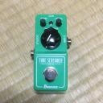
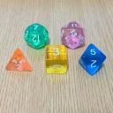
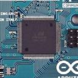

| AHC031 March/2024 |
(2000 test cases)


| Final Results (2000 test cases) | Maximum Fill | N (Number of reservations) | D (Number of days) | |||||||||||||||||||||||||||||
|---|---|---|---|---|---|---|---|---|---|---|---|---|---|---|---|---|---|---|---|---|---|---|---|---|---|---|---|---|---|---|---|---|---|
| Sparse (<93%) | Medium [93%,98%] | Dense (>98%) | [5,19] | [20,34] | [35,50] | [5,19] | [20,34] | [35,50] | |||||||||||||||||||||||||
| 629 cases | 728 cases | 643 cases | 650 cases | 650 cases | 700 cases | 655 cases | 633 cases | 712 cases | |||||||||||||||||||||||||
| Pos | Coder | Rating | Language | Score | Bests | Uniques | Fails | Avg.Time | Max.Time | Score | Pos | Score | Pos | Score | Pos | Score | Pos | Score | Pos | Score | Pos | Score | Pos | Score | Pos | Score | Pos | ||||||
| 1 | | | saharan | 3083 | C++ 20 | 1,722,250,219,489 | 655 | 626 | 0 | 2862 | 2911 | 754,166,960 | 3 | 921,218,774 | 2 | 897,716,849 | 1 | 910,766,412 | 1 | 871,718,372 | 1 | 805,193,014 | 2 | 843,693,504 | 1 | 861,400,613 | 1 | 876,916,273 | 1 | ||||
| 2 | | yochan | 2673 | C++ 20 | 1,631,838,619,811 | 299 | 282 | 0 | 2972 | 2984 | 899,832,569 | 2 | 839,508,302 | 3 | 707,125,801 | 4 | 782,085,826 | 4 | 845,229,517 | 2 | 820,119,495 | 1 | 830,084,373 | 2 | 822,873,048 | 2 | 796,706,062 | 2 | |||||
| 3 | | Shibuyap | 2585 | C++ 23 | 1,552,668,859,278 | 208 | 178 | 0 | 2744 | 2812 | 649,706,745 | 6 | 815,883,894 | 4 | 855,427,437 | 2 | 812,597,693 | 2 | 776,498,635 | 3 | 742,508,923 | 4 | 779,810,380 | 4 | 775,377,938 | 3 | 773,987,115 | 3 | |||||
| 4 | | | bowwowforeach | 3125 | C++ 20 | 1,545,302,284,352 | 631 | 609 | 1 | 2871 | 2957 | 925,174,503 | 1 | 930,315,143 | 1 | 444,942,610 | 42 | 803,916,750 | 3 | 770,957,641 | 4 | 745,191,329 | 3 | 783,032,481 | 3 | 766,324,660 | 4 | 768,725,422 | 4 | ||||
| 5 | | | terry_u16 | 3134 | Rust | 1,351,082,014,910 | 28 | 25 | 0 | 2982 | 2985 | 660,063,837 | 5 | 793,948,785 | 5 | 556,620,755 | 20 | 728,317,491 | 6 | 676,059,384 | 5 | 626,052,922 | 6 | 673,786,436 | 5 | 688,203,925 | 5 | 665,897,212 | 7 | ||||
| 6 | | montplusa | 2634 | Go | 1,339,526,701,306 | 16 | 6 | 0 | 2899 | 2921 | 696,375,408 | 4 | 718,523,197 | 9 | 588,525,167 | 12 | 754,835,657 | 5 | 661,150,482 | 7 | 598,765,301 | 8 | 670,971,213 | 7 | 672,362,919 | 7 | 666,341,053 | 6 | |||||
| 7 | | | tishii24 | 2573 | Rust | 1,331,723,942,025 | 6 | 5 | 0 | 2954 | 2960 | 540,157,031 | 15 | 760,261,480 | 7 | 681,951,496 | 5 | 728,226,269 | 7 | 651,747,418 | 9 | 621,058,637 | 7 | 621,050,845 | 10 | 676,301,826 | 6 | 697,804,190 | 5 | ||||
| 8 | | USA | 3318 | C++ 23 | 1,306,060,989,549 | 16 | 1 | 0 | 2944 | 2976 | 570,450,758 | 9 | 708,003,780 | 10 | 671,571,867 | 6 | 665,405,920 | 14 | 668,347,496 | 6 | 627,316,099 | 5 | 646,806,936 | 9 | 658,673,917 | 8 | 653,738,564 | 8 | |||||
| 9 | | | FplusFplusF | 2134 | C++ 23 | 1,305,732,645,323 | 23 | 0 | 0 | 2702 | 2703 | 643,513,725 | 8 | 742,292,785 | 8 | 560,767,286 | 18 | 710,308,884 | 9 | 653,794,277 | 8 | 598,665,129 | 9 | 661,408,223 | 8 | 650,756,907 | 9 | 646,883,619 | 9 | ||||
| 10 | | | Psyho | 2953 | C++ 20 | 1,249,209,110,853 | 28 | 2 | 0 | 2864 | 2905 | 540,286,395 | 14 | 701,153,238 | 11 | 620,418,992 | 11 | 676,851,663 | 12 | 622,679,293 | 10 | 577,877,128 | 10 | 673,134,801 | 6 | 611,357,091 | 11 | 591,737,047 | 13 | ||||
| 11 | | | gazelle | 2513 | C++ 23 | 1,218,942,881,602 | 12 | 11 | 0 | 2904 | 2909 | 456,421,396 | 25 | 786,351,552 | 6 | 558,926,740 | 19 | 697,922,947 | 10 | 618,619,067 | 11 | 518,843,675 | 14 | 600,878,504 | 13 | 617,909,705 | 10 | 609,874,464 | 11 | ||||
| 12 | | | siman | 2841 | C++ 20 | 1,203,907,354,882 | 41 | 21 | 0 | 2905 | 2918 | 457,672,878 | 24 | 585,089,596 | 21 | 762,186,453 | 3 | 714,128,881 | 8 | 598,784,204 | 13 | 500,734,071 | 16 | 581,575,414 | 15 | 606,876,649 | 12 | 616,323,792 | 10 | ||||
| 13 | | | maeda3 | 2262 | C++ 20 | 1,171,443,911,475 | 28 | 0 | 0 | 2887 | 2932 | 499,202,733 | 19 | 688,702,443 | 12 | 553,763,630 | 21 | 612,928,832 | 23 | 583,057,787 | 14 | 562,932,299 | 11 | 574,269,211 | 18 | 578,115,669 | 13 | 603,020,169 | 12 | ||||
| 14 | | | itigo | 2512 | C++ 20 | 1,155,935,559,968 | 20 | 0 | 4 | 2951 | 2956 | 563,493,276 | 11 | 615,641,729 | 15 | 549,472,955 | 22 | 579,812,385 | 29 | 613,385,201 | 12 | 543,367,327 | 13 | 607,028,818 | 11 | 576,141,876 | 14 | 552,856,568 | 16 | ||||
| 15 | | | Ang107 | 1904 | Nim | 1,143,211,577,062 | 9 | 0 | 0 | 2992 | 2995 | 539,146,674 | 16 | 683,453,381 | 13 | 476,725,128 | 36 | 592,895,009 | 27 | 570,129,639 | 15 | 553,207,937 | 12 | 563,247,061 | 19 | 572,380,292 | 15 | 578,606,780 | 15 | ||||
| 16 | | | wleite | 2804 | Java | 1,117,730,533,361 | 27 | 0 | 0 | 2856 | 2929 | 500,302,194 | 18 | 607,307,170 | 16 | 561,307,673 | 17 | 611,854,859 | 24 | 550,271,988 | 18 | 517,640,118 | 15 | 533,586,388 | 25 | 560,748,159 | 17 | 580,446,439 | 14 | ||||
| 17 | | rhoo | 2614 | Rust | 1,116,537,365,777 | 25 | 2 | 11 | 2741 | 2961 | 552,349,674 | 12 | 604,849,537 | 17 | 511,320,307 | 28 | 617,190,529 | 22 | 562,231,405 | 16 | 499,875,869 | 18 | 593,144,559 | 14 | 557,350,787 | 18 | 527,000,886 | 19 | |||||
| 18 | | | bin101 | 2592 | C++ 23 | 1,114,205,423,159 | 11 | 9 | 0 | 2851 | 2901 | 409,198,872 | 30 | 583,807,040 | 22 | 671,551,801 | 7 | 661,223,795 | 15 | 545,968,127 | 19 | 470,758,105 | 21 | 574,427,447 | 17 | 563,624,415 | 16 | 535,366,841 | 17 | ||||
| 19 | | | kens | 2479 | C++ 23 | 1,099,380,714,472 | 17 | 2 | 0 | 2926 | 2956 | 564,279,039 | 10 | 625,899,287 | 14 | 449,136,110 | 41 | 631,856,324 | 19 | 551,496,787 | 17 | 471,715,989 | 20 | 601,298,373 | 12 | 544,119,709 | 19 | 507,166,438 | 21 | ||||
| 20 | | | kawatea | 2917 | C++ 20 | 1,089,954,206,166 | 37 | 7 | 0 | 2949 | 2992 | 644,637,893 | 7 | 573,829,977 | 23 | 414,819,205 | 51 | 638,233,262 | 18 | 516,243,944 | 22 | 485,062,889 | 19 | 578,112,319 | 16 | 536,930,134 | 20 | 521,648,683 | 20 | ||||
| 21 | | yokozuna57 | 3036 | C++ 23 | 1,047,960,619,746 | 1 | 0 | 2 | 1496 | 2839 | 448,314,918 | 26 | 571,335,157 | 24 | 544,383,424 | 24 | 665,961,945 | 13 | 495,238,276 | 25 | 418,829,251 | 27 | 500,402,220 | 32 | 535,598,328 | 21 | 535,341,888 | 18 | |||||
| 22 | | nnnSMM | 2219 | C++ 20 | 1,033,961,839,748 | 29 | 1 | 0 | 2911 | 2956 | 497,529,054 | 21 | 588,507,792 | 19 | 455,027,049 | 39 | 656,762,928 | 16 | 487,602,352 | 26 | 414,463,439 | 28 | 550,587,110 | 21 | 508,919,470 | 23 | 493,232,104 | 26 | |||||
| 23 | | | MathGorilla | 2199 | C++ 20 | 1,030,763,136,897 | 29 | 1 | 0 | 2902 | 2956 | 540,589,893 | 13 | 556,863,066 | 25 | 443,757,048 | 44 | 654,579,420 | 17 | 462,470,123 | 30 | 435,258,477 | 24 | 546,666,415 | 22 | 500,458,783 | 26 | 499,868,293 | 24 | ||||
| 24 | | arfz | 2143 | C++ 23 | 1,029,794,271,544 | 6 | 2 | 0 | 2917 | 2933 | 437,025,622 | 28 | 588,920,453 | 18 | 507,264,488 | 29 | 610,231,772 | 25 | 518,686,461 | 21 | 422,853,458 | 25 | 539,832,438 | 23 | 516,079,901 | 22 | 490,906,527 | 27 | |||||
| 25 | | fgwiebfaoish | 2364 | Rust | 1,022,592,363,727 | 28 | 0 | 3 | 2745 | 3000 | 510,924,149 | 17 | 585,770,988 | 20 | 427,340,272 | 49 | 559,215,936 | 31 | 513,882,067 | 23 | 464,398,089 | 22 | 534,593,537 | 24 | 498,105,700 | 27 | 501,590,855 | 23 | |||||
| 26 | | | tomerun | 2954 | C++ 20 | 1,010,868,039,048 | 23 | 0 | 0 | 2868 | 2903 | 403,813,220 | 32 | 541,843,952 | 26 | 563,619,171 | 14 | 629,768,826 | 20 | 483,255,235 | 27 | 410,574,856 | 30 | 510,016,893 | 30 | 504,010,876 | 24 | 502,483,271 | 22 | ||||
| 27 | | soto800 | 2117 | C++ 20 | 994,547,587,368 | 13 | 0 | 0 | 2885 | 2966 | 407,964,603 | 31 | 516,391,151 | 29 | 562,993,925 | 15 | 554,945,912 | 32 | 523,067,388 | 20 | 419,769,917 | 26 | 506,607,896 | 31 | 503,882,303 | 25 | 482,811,683 | 28 | |||||
| 28 | | | Shun_PI | 2903 | C++ 20 | 958,144,416,638 | 11 | 0 | 0 | 2790 | 2964 | 498,546,886 | 20 | 539,688,261 | 27 | 391,392,490 | 57 | 428,211,313 | 70 | 506,623,794 | 24 | 500,716,567 | 17 | 461,173,728 | 36 | 477,754,419 | 28 | 496,709,378 | 25 | ||||
| 29 | | tokoharu | 2427 | C++ 20 | 954,951,011,609 | 21 | 8 | 0 | 2803 | 2819 | 301,262,633 | 51 | 461,401,010 | 33 | 668,051,136 | 8 | 530,274,527 | 37 | 464,750,242 | 29 | 440,264,160 | 23 | 498,017,149 | 34 | 470,583,575 | 29 | 464,705,584 | 31 | |||||
| 30 | | | Jirotech | 3015 | C++ 20 | 928,402,498,528 | 30 | 7 | 0 | 2956 | 2960 | 438,209,640 | 27 | 421,129,272 | 44 | 538,392,730 | 26 | 627,166,734 | 21 | 433,217,182 | 32 | 341,647,075 | 39 | 522,396,383 | 27 | 452,439,862 | 31 | 421,121,398 | 33 | ||||
| 31 | | behoma8 | 2140 | C# 11.0 AOT | 918,056,287,581 | 27 | 15 | 3 | 2828 | 2966 | 314,713,937 | 46 | 413,319,127 | 45 | 651,951,628 | 9 | 533,943,923 | 36 | 441,503,156 | 31 | 405,736,695 | 32 | 499,082,776 | 33 | 451,826,685 | 32 | 428,582,553 | 32 | |||||
| 32 | | petit_sophia | 2161 | Go | 902,799,773,922 | 4 | 4 | 0 | 2953 | 2959 | 348,971,783 | 36 | 532,577,435 | 28 | 459,689,190 | 38 | 583,513,658 | 28 | 430,354,113 | 34 | 348,265,318 | 38 | 512,513,419 | 28 | 436,934,539 | 34 | 408,039,215 | 36 | |||||
| 33 | | | cozy_sauna | 2119 | C++ 20 | 885,290,303,642 | 29 | 1 | 0 | 2763 | 2889 | 304,206,553 | 50 | 473,620,612 | 31 | 542,999,341 | 25 | 493,575,108 | 47 | 430,661,081 | 33 | 406,481,115 | 31 | 527,230,945 | 26 | 409,268,514 | 40 | 394,504,305 | 41 | ||||
| 34 | | pitP | 1757 | C++ 23 | 884,749,661,853 | 14 | 1 | 0 | 2981 | 2985 | 308,142,532 | 49 | 452,481,750 | 38 | 562,241,517 | 16 | 516,651,662 | 39 | 426,425,185 | 35 | 388,213,873 | 34 | 475,910,936 | 35 | 434,095,127 | 35 | 418,884,527 | 34 | |||||
| 35 | | TAISA_ | 1602 | C++ 20 | 880,402,287,097 | 3 | 3 | 0 | 2497 | 2742 | 229,881,820 | 70 | 455,913,893 | 36 | 628,151,335 | 10 | 513,341,623 | 41 | 476,712,374 | 28 | 338,381,699 | 40 | 377,559,939 | 47 | 458,981,247 | 30 | 481,131,177 | 29 | |||||
| 36 | | | kozima | 2521 | Rust | 878,933,669,800 | 26 | 0 | 0 | 2564 | 2805 | 380,407,864 | 34 | 454,584,442 | 37 | 480,123,872 | 34 | 483,670,808 | 50 | 423,200,467 | 36 | 413,524,773 | 29 | 512,008,220 | 29 | 416,870,907 | 38 | 392,821,631 | 42 | ||||
| 37 | | | toam | 2327 | C++ 20 | 877,590,641,284 | 14 | 7 | 1 | 2971 | 2983 | 324,176,874 | 42 | 444,409,688 | 39 | 544,561,640 | 23 | 549,433,545 | 34 | 393,014,072 | 42 | 378,570,987 | 35 | 395,367,582 | 45 | 450,920,836 | 33 | 467,966,273 | 30 | ||||
| 38 | | | sas4eka | 1840 | C++ 20 | 854,670,802,315 | 15 | 2 | 0 | 2573 | 2813 | 258,469,021 | 59 | 439,331,187 | 40 | 578,943,521 | 13 | 539,268,069 | 35 | 393,522,618 | 41 | 354,795,508 | 37 | 455,514,465 | 39 | 418,825,160 | 37 | 408,978,232 | 35 | ||||
| 39 | | hahho | 1865 | Rust | 847,043,751,333 | 17 | 8 | 0 | 2900 | 2901 | 487,869,519 | 22 | 427,587,526 | 42 | 355,972,169 | 71 | 678,270,671 | 11 | 363,753,670 | 45 | 242,468,471 | 64 | 456,730,871 | 38 | 421,477,836 | 36 | 394,788,709 | 40 | |||||
| 40 | | syndrome | 1981 | C++ 23 | 841,822,306,351 | 26 | 4 | 0 | 2933 | 2992 | 484,194,671 | 23 | 428,400,314 | 41 | 350,526,329 | 72 | 551,012,631 | 33 | 420,248,202 | 37 | 300,718,235 | 48 | 558,933,796 | 20 | 396,019,189 | 43 | 316,068,150 | 55 | |||||
| 41 | | | risujiroh | 2518 | C++ 20 | 838,698,327,127 | 28 | 0 | 0 | 2853 | 2909 | 384,136,402 | 33 | 490,134,689 | 30 | 373,652,375 | 65 | 461,121,781 | 57 | 404,923,555 | 39 | 393,955,513 | 33 | 453,231,689 | 40 | 400,883,728 | 41 | 404,595,746 | 37 | ||||
| 42 | | | Kahuka | 2160 | C++ 20 | 833,044,216,962 | 1 | 0 | 0 | 2971 | 2974 | 340,758,217 | 38 | 458,779,784 | 34 | 442,792,560 | 46 | 475,772,896 | 52 | 418,940,548 | 38 | 359,257,826 | 36 | 446,695,526 | 41 | 409,649,681 | 39 | 394,874,156 | 39 | ||||
| 43 | | | notkamonohasi | 2261 | C++ 20 | 812,056,691,803 | 0 | 0 | 5 | 2879 | 2946 | 317,116,275 | 44 | 457,201,166 | 35 | 435,067,040 | 47 | 510,770,437 | 43 | 399,464,325 | 40 | 314,862,995 | 44 | 460,740,082 | 37 | 400,037,785 | 42 | 361,022,500 | 46 | ||||
| 44 | | | rabot | 2463 | Java | 781,649,520,588 | 26 | 0 | 0 | 425 | 1745 | 334,767,417 | 39 | 391,990,941 | 47 | 444,341,229 | 43 | 513,109,206 | 42 | 359,294,058 | 46 | 306,553,427 | 46 | 408,743,786 | 44 | 377,934,572 | 45 | 385,800,220 | 43 | ||||
| 45 | | | tsutaj | 1986 | C++ 23 | 772,203,963,220 | 26 | 0 | 0 | 2904 | 2928 | 268,736,268 | 57 | 365,246,636 | 52 | 524,524,571 | 27 | 460,970,751 | 59 | 382,414,045 | 43 | 320,005,494 | 43 | 417,880,027 | 43 | 376,302,734 | 46 | 365,579,936 | 45 | ||||
| 46 | | shotoyoo | 2169 | C++ 20 | 750,679,561,176 | 0 | 0 | 0 | 1951 | 1953 | 226,664,136 | 72 | 412,516,688 | 46 | 478,686,890 | 35 | 503,596,012 | 44 | 352,582,512 | 48 | 277,376,458 | 52 | 376,461,929 | 48 | 382,961,871 | 44 | 367,531,086 | 44 | |||||
| 47 | | | noimi | 2628 | C++ 20 | 724,505,497,933 | 60 | 32 | 8 | 2837 | 2996 | 272,174,133 | 55 | 332,475,375 | 64 | 484,083,818 | 33 | 605,563,685 | 26 | 285,113,218 | 67 | 207,950,730 | 76 | 373,137,674 | 50 | 355,092,585 | 49 | 358,604,938 | 47 | ||||
| 48 | | ytkn | 2343 | C++ 20 | 723,060,336,286 | 12 | 0 | 0 | 2885 | 2923 | 244,504,663 | 66 | 335,643,026 | 61 | 505,316,921 | 30 | 521,109,119 | 38 | 328,018,161 | 51 | 244,468,006 | 62 | 313,340,174 | 71 | 372,195,550 | 47 | 396,380,252 | 38 | |||||
| 49 | | | ssaattoo | 2331 | Rust | 719,262,833,413 | 13 | 0 | 0 | 2952 | 2957 | 325,861,742 | 41 | 352,077,887 | 57 | 401,217,878 | 54 | 439,422,127 | 64 | 364,505,657 | 44 | 281,013,962 | 51 | 418,309,637 | 42 | 349,089,791 | 51 | 315,022,729 | 58 | ||||
| 50 | | TYZ | 1866 | Go | 708,681,294,308 | 18 | 5 | 2 | 2442 | 2958 | 210,162,489 | 78 | 357,200,320 | 54 | 492,141,921 | 31 | 400,067,862 | 77 | 344,425,382 | 50 | 321,086,694 | 41 | 356,834,126 | 56 | 356,784,472 | 48 | 349,874,116 | 49 | |||||
| 51 | | | gasin | 2512 | C++ 23 | 699,092,686,637 | 0 | 0 | 1 | 1544 | 2942 | 198,814,465 | 83 | 425,062,167 | 43 | 411,497,870 | 52 | 497,021,923 | 46 | 310,804,814 | 55 | 248,579,011 | 59 | 358,457,852 | 55 | 345,843,760 | 52 | 344,640,019 | 50 | ||||
| 52 | | | dn6049949 | 2558 | C++ 23 | 696,329,663,958 | 35 | 11 | 0 | 2917 | 2953 | 314,964,584 | 45 | 368,677,537 | 50 | 357,417,875 | 69 | 569,745,279 | 30 | 282,191,959 | 69 | 203,672,084 | 77 | 336,462,294 | 65 | 350,159,108 | 50 | 357,157,508 | 48 | ||||
| 53 | | ks2m | 2292 | Java | 694,158,557,257 | 28 | 0 | 2 | 2634 | 2991 | 284,877,359 | 53 | 301,199,121 | 72 | 459,872,065 | 37 | 461,098,873 | 58 | 311,001,630 | 54 | 274,704,614 | 53 | 390,566,307 | 46 | 338,952,578 | 53 | 314,298,657 | 59 | |||||
| 54 | | | birdwatcher | 2326 | C++ 23 | 681,127,472,755 | 13 | 0 | 0 | 2947 | 2975 | 416,328,231 | 29 | 462,016,753 | 32 | 128,940,621 | 332 | 365,103,659 | 90 | 356,013,121 | 47 | 303,430,808 | 47 | 354,011,889 | 57 | 338,725,982 | 54 | 329,826,038 | 53 | ||||
| 55 | | spawn | 1472 | C++ 20 | 676,706,637,473 | 22 | 0 | 1 | 2440 | 2967 | 251,659,646 | 63 | 280,278,757 | 81 | 488,911,019 | 32 | 471,730,224 | 53 | 286,479,410 | 65 | 262,671,965 | 54 | 342,347,753 | 64 | 333,989,309 | 56 | 338,558,465 | 51 | |||||
| 56 | | arimatti | 2157 | Rust | 675,734,036,373 | 13 | 0 | 0 | 2883 | 2906 | 207,153,905 | 80 | 380,026,233 | 49 | 418,001,762 | 50 | 364,430,886 | 92 | 351,444,104 | 49 | 300,593,275 | 49 | 373,872,465 | 49 | 335,989,377 | 55 | 306,413,337 | 66 | |||||
| 57 | | ExplodingFreeze | 1708 | C++ 20 | 673,234,839,727 | 26 | 0 | 0 | 2013 | 2416 | 281,595,314 | 54 | 297,815,464 | 74 | 434,372,830 | 48 | 445,344,156 | 61 | 308,280,912 | 57 | 261,969,351 | 55 | 343,008,384 | 63 | 330,835,449 | 57 | 335,878,525 | 52 | |||||
| 58 | | | merhorn | 2075 | C++ 20 | 666,560,375,225 | 26 | 0 | 0 | 2833 | 2981 | 311,583,544 | 48 | 319,265,633 | 70 | 370,371,609 | 66 | 461,587,141 | 56 | 294,907,293 | 62 | 249,769,990 | 58 | 363,776,969 | 53 | 321,538,026 | 59 | 315,664,171 | 56 | ||||
| 59 | | | yuusanlondon | 2444 | Python | 659,876,474,594 | 1 | 0 | 0 | 2590 | 2692 | 232,978,422 | 69 | 385,705,662 | 48 | 361,647,473 | 68 | 389,166,088 | 81 | 320,956,973 | 52 | 283,280,692 | 50 | 331,927,643 | 66 | 328,521,157 | 58 | 329,367,944 | 54 | ||||
| 60 | | yoshibo | 1712 | C++ 20 | 657,169,279,817 | 0 | 0 | 2 | 2904 | 2912 | 220,550,160 | 75 | 362,371,831 | 53 | 396,013,276 | 56 | 448,368,265 | 60 | 306,001,800 | 58 | 238,326,769 | 65 | 352,201,241 | 60 | 321,525,463 | 60 | 313,134,618 | 60 | |||||
| 61 | | ra5anchor | 2046 | Python | 656,571,657,402 | 28 | 0 | 0 | 2654 | 2722 | 253,909,318 | 62 | 343,658,519 | 58 | 383,638,094 | 62 | 355,293,007 | 94 | 310,000,609 | 56 | 320,186,867 | 42 | 359,770,509 | 54 | 313,358,229 | 63 | 312,592,999 | 61 | |||||
| 62 | | m_blue_moon | 1384 | Python | 650,069,742,373 | 15 | 1 | 4 | 2488 | 2992 | 312,332,935 | 47 | 353,716,992 | 55 | 304,986,556 | 92 | 439,425,649 | 63 | 295,051,126 | 61 | 246,656,912 | 61 | 346,232,763 | 62 | 318,656,761 | 61 | 311,204,429 | 63 | |||||
| 63 | | ky0r0suke | 2153 | C++ 20 | 636,420,952,047 | 13 | 0 | 77 | 2804 | 2823 | 245,650,879 | 65 | 352,977,721 | 56 | 349,827,012 | 73 | 485,336,832 | 49 | 285,614,636 | 66 | 193,289,282 | 79 | 365,251,746 | 52 | 309,419,511 | 68 | 282,750,713 | 73 | |||||
| 64 | | | G4NP0N | 2159 | C# 11.0 AOT | 636,237,988,647 | 22 | 0 | 0 | 2898 | 2917 | 330,149,855 | 40 | 297,482,318 | 75 | 329,714,779 | 83 | 430,944,421 | 68 | 280,218,202 | 70 | 248,546,120 | 60 | 353,110,844 | 59 | 303,940,939 | 70 | 298,533,387 | 68 | ||||
| 65 | | | KawattaTaido | 2545 | C++ 23 | 628,390,247,977 | 13 | 1 | 0 | 2904 | 2931 | 262,645,941 | 58 | 290,857,519 | 77 | 391,044,600 | 58 | 498,695,769 | 45 | 263,820,617 | 76 | 189,649,424 | 82 | 311,970,914 | 72 | 315,420,860 | 62 | 315,151,537 | 57 | ||||
| 66 | | | titan23 | 1817 | C++ 20 | 625,780,418,870 | 1 | 0 | 0 | 2993 | 2994 | 320,380,017 | 43 | 320,724,711 | 68 | 296,693,310 | 99 | 440,124,929 | 62 | 292,142,834 | 63 | 214,009,104 | 73 | 352,098,178 | 61 | 313,092,291 | 64 | 276,641,422 | 77 | ||||
| 67 | | kabipoyo | 2141 | C++ 23 | 619,204,910,752 | 6 | 0 | 27 | 2903 | 2915 | 300,845,791 | 52 | 340,653,727 | 60 | 283,012,434 | 108 | 488,887,926 | 48 | 277,056,184 | 71 | 173,344,628 | 88 | 316,923,765 | 70 | 309,959,030 | 67 | 302,550,251 | 67 | |||||
| 68 | | small_koala | 1519 | C++ 17 | 615,015,504,564 | 0 | 0 | 1 | 2852 | 2892 | 200,089,888 | 81 | 319,786,790 | 69 | 398,684,575 | 55 | 432,675,015 | 67 | 283,107,678 | 68 | 213,938,220 | 74 | 305,055,841 | 74 | 310,239,416 | 66 | 307,334,801 | 65 | |||||
| 69 | | Piiiii | 2116 | C++ 20 | 614,002,994,898 | 6 | 0 | 82 | 2982 | 2991 | 248,056,874 | 64 | 289,149,329 | 78 | 384,874,821 | 60 | 354,780,693 | 95 | 312,380,751 | 53 | 257,640,081 | 56 | 300,493,492 | 76 | 312,035,831 | 65 | 308,512,748 | 64 | |||||
| 70 | | | Kiri8128 | 2516 | Python | 602,746,610,777 | 14 | 1 | 106 | 2884 | 3000 | 369,511,470 | 35 | 342,474,251 | 59 | 188,184,512 | 227 | 369,283,215 | 88 | 305,052,415 | 59 | 234,897,787 | 66 | 353,549,205 | 58 | 286,305,814 | 74 | 266,770,087 | 80 | ||||
| 71 | | | yupiteru | 2209 | C++ 23 | 601,334,162,461 | 0 | 0 | 0 | 2885 | 2999 | 180,271,082 | 91 | 334,107,879 | 62 | 380,580,273 | 63 | 478,277,649 | 51 | 249,900,995 | 79 | 182,882,920 | 86 | 298,030,432 | 78 | 305,904,886 | 69 | 298,436,006 | 69 | ||||
| 72 | | | uta_ccc | 2087 | Python | 593,686,330,765 | 1 | 0 | 3 | 2723 | 2819 | 220,004,804 | 76 | 328,748,372 | 66 | 335,885,684 | 78 | 390,869,419 | 79 | 273,726,616 | 73 | 230,998,440 | 69 | 317,613,041 | 69 | 290,992,114 | 73 | 282,937,894 | 72 | ||||
| 73 | | mtsd | 2844 | C++ 20 | 584,295,411,190 | 7 | 0 | 263 | 1864 | 1869 | 255,553,038 | 61 | 366,886,854 | 51 | 243,326,470 | 151 | 325,253,141 | 106 | 299,078,691 | 60 | 254,971,029 | 57 | 369,446,858 | 51 | 270,353,768 | 80 | 240,412,618 | 90 | |||||
| 74 | | | gucci0512 | 1706 | C++ 20 | 579,940,015,443 | 0 | 0 | 1 | 2955 | 2966 | 164,253,104 | 103 | 262,821,812 | 88 | 443,686,678 | 45 | 466,162,863 | 54 | 256,450,774 | 78 | 157,487,359 | 98 | 253,316,217 | 92 | 302,719,941 | 71 | 312,354,173 | 62 | ||||
| 75 | | mya3 | 1806 | C++ 23 | 575,257,169,523 | 0 | 0 | 1 | 2952 | 2974 | 184,660,375 | 88 | 325,228,209 | 67 | 345,784,848 | 75 | 386,852,922 | 84 | 290,215,845 | 64 | 193,089,244 | 80 | 277,966,244 | 81 | 291,888,498 | 72 | 292,730,142 | 70 | |||||
| 76 | | ikoma | 2064 | Rust | 574,101,959,858 | 28 | 0 | 0 | 2872 | 2936 | 255,950,924 | 60 | 315,773,407 | 71 | 284,954,570 | 107 | 372,489,111 | 87 | 259,416,827 | 77 | 233,375,858 | 68 | 324,743,949 | 67 | 271,266,023 | 78 | 266,409,102 | 81 | |||||
| 77 | | | takytank | 2179 | C# 11.0 AOT | 567,156,608,184 | 27 | 0 | 0 | 2913 | 2959 | 270,098,947 | 56 | 333,487,908 | 63 | 240,256,879 | 152 | 407,748,407 | 74 | 231,447,494 | 85 | 216,684,675 | 72 | 309,605,965 | 73 | 268,266,885 | 81 | 273,246,859 | 79 | ||||
| 78 | | | yowa | 2534 | C++ 20 | 563,687,321,278 | 25 | 0 | 8 | 2517 | 2844 | 216,337,377 | 77 | 263,730,184 | 87 | 366,431,629 | 67 | 435,496,143 | 66 | 233,997,498 | 84 | 183,594,935 | 84 | 320,693,966 | 68 | 271,755,444 | 77 | 255,072,440 | 84 | ||||
| 79 | | | niuez | 2397 | Rust | 544,111,457,234 | 12 | 0 | 0 | 2755 | 2957 | 199,906,503 | 82 | 279,052,714 | 82 | 334,712,117 | 80 | 312,083,247 | 113 | 272,118,390 | 74 | 234,829,133 | 67 | 295,009,312 | 79 | 268,246,563 | 82 | 254,326,241 | 85 | ||||
| 80 | | soumat | 2211 | C++ 20 | 542,960,226,390 | 15 | 0 | 0 | 2953 | 2971 | 182,775,361 | 90 | 231,953,896 | 97 | 403,004,803 | 53 | 464,955,300 | 55 | 215,403,824 | 93 | 143,895,423 | 106 | 260,015,137 | 89 | 274,372,613 | 76 | 279,455,685 | 75 | |||||
| 81 | | tanashou1 | 1909 | Rust | 542,664,241,576 | 0 | 0 | 1 | 2924 | 2998 | 176,916,106 | 94 | 332,111,318 | 65 | 294,878,649 | 102 | 425,135,188 | 72 | 234,928,664 | 83 | 162,318,197 | 94 | 302,954,087 | 75 | 270,953,696 | 79 | 242,578,125 | 89 | |||||
| 82 | | | carrot46 | 2311 | C++ 20 | 527,942,558,394 | 39 | 39 | 7 | 2887 | 2902 | 111,102,346 | 149 | 229,545,880 | 98 | 452,487,997 | 40 | 515,452,484 | 40 | 193,590,119 | 103 | 95,806,952 | 163 | 226,241,607 | 103 | 276,837,478 | 75 | 287,241,830 | 71 | ||||
| 83 | | sash0 | 2252 | Rust | 516,829,955,618 | 0 | 0 | 0 | 2951 | 2954 | 193,539,128 | 84 | 278,880,816 | 83 | 298,707,014 | 97 | 428,128,549 | 71 | 219,169,719 | 89 | 137,265,830 | 113 | 254,245,400 | 91 | 264,624,818 | 83 | 256,729,928 | 83 | |||||
| 84 | | | motoshira | 1657 | Common Lisp | 507,388,360,631 | 0 | 0 | 0 | 1354 | 2218 | 114,436,160 | 147 | 258,828,845 | 92 | 384,106,713 | 61 | 377,523,232 | 85 | 227,743,653 | 86 | 162,806,980 | 93 | 213,835,039 | 109 | 263,310,640 | 84 | 281,812,886 | 74 | ||||
| 85 | | mono_1729 | 1406 | C++ 23 | 505,226,879,016 | 26 | 0 | 0 | 2367 | 2905 | 192,706,251 | 85 | 250,998,972 | 94 | 313,044,161 | 90 | 326,735,638 | 104 | 235,598,181 | 82 | 199,585,567 | 78 | 233,577,244 | 99 | 248,990,865 | 87 | 273,346,302 | 78 | |||||
| 86 | | Rafbill | 3018 | C++ 23 | 501,065,599,627 | 12 | 0 | 1 | 2202 | 3000 | 207,705,140 | 79 | 260,272,092 | 90 | 281,401,219 | 112 | 175,613,127 | 291 | 264,280,846 | 75 | 307,335,024 | 45 | 277,584,833 | 82 | 239,187,869 | 91 | 235,732,602 | 92 | |||||
| 87 | | nrvft | 2265 | C++ 23 | 500,798,132,061 | 21 | 0 | 0 | 2896 | 2922 | 187,643,184 | 87 | 194,630,980 | 117 | 374,928,796 | 64 | 409,281,532 | 73 | 202,429,744 | 100 | 147,408,290 | 104 | 271,024,546 | 84 | 248,989,329 | 88 | 232,678,103 | 93 | |||||
| 88 | | | kuhaku | 2221 | C++ 23 | 499,442,139,415 | 28 | 0 | 2 | 2903 | 2982 | 227,547,169 | 71 | 263,954,539 | 86 | 255,297,147 | 137 | 322,125,576 | 107 | 217,766,375 | 91 | 212,160,530 | 75 | 299,683,704 | 77 | 227,067,840 | 100 | 223,897,993 | 102 | ||||
| 89 | | | Jinapetto | 1728 | C++ 20 | 497,755,689,977 | 13 | 0 | 0 | 2884 | 2906 | 166,285,435 | 102 | 297,379,864 | 76 | 274,758,336 | 115 | 254,790,524 | 165 | 248,712,108 | 80 | 243,541,399 | 63 | 291,538,972 | 80 | 235,030,446 | 95 | 221,942,965 | 105 | ||||
| 90 | | | atofujiosukai | 1839 | Rust | 497,007,145,337 | 0 | 0 | 0 | 2872 | 2889 | 175,499,049 | 97 | 271,592,950 | 85 | 293,776,945 | 103 | 406,240,392 | 75 | 218,294,893 | 90 | 130,084,586 | 117 | 218,868,426 | 108 | 259,394,629 | 85 | 266,083,604 | 82 | ||||
| 91 | | pokaerion | 1661 | C++ 20 | 495,492,430,764 | 20 | 0 | 0 | 2954 | 2975 | 222,516,302 | 73 | 227,219,507 | 100 | 295,666,991 | 100 | 357,945,498 | 93 | 223,481,440 | 88 | 167,949,887 | 92 | 270,660,396 | 85 | 240,988,854 | 89 | 232,674,055 | 94 | |||||
| 92 | | | phyllo | 2281 | C++ 20 | 492,459,924,784 | 20 | 0 | 0 | 2752 | 2886 | 234,877,268 | 68 | 228,205,079 | 99 | 277,743,119 | 114 | 364,887,178 | 91 | 210,688,770 | 97 | 169,050,798 | 90 | 272,931,479 | 83 | 238,004,184 | 93 | 228,979,154 | 97 | ||||
| 93 | | | ymatsux | 2874 | C++ 23 | 489,867,252,800 | 0 | 0 | 0 | 859 | 2702 | 139,595,295 | 119 | 256,638,779 | 93 | 334,725,943 | 79 | 387,038,847 | 83 | 216,395,758 | 92 | 139,478,228 | 110 | 199,345,952 | 123 | 254,265,796 | 86 | 278,575,008 | 76 | ||||
| 94 | | sankantsu | 1685 | C++ 20 | 477,944,932,146 | 1 | 0 | 0 | 2821 | 2861 | 176,258,987 | 96 | 301,021,300 | 73 | 230,069,242 | 166 | 216,927,184 | 215 | 273,953,645 | 72 | 226,960,561 | 70 | 234,816,382 | 98 | 238,997,161 | 92 | 242,773,875 | 88 | |||||
| 95 | | | tashikani | 2384 | Rust | 472,445,048,872 | 0 | 0 | 1 | 2041 | 2913 | 142,218,391 | 118 | 287,450,323 | 79 | 270,180,164 | 119 | 303,264,060 | 121 | 237,555,918 | 81 | 172,731,518 | 89 | 241,773,717 | 96 | 236,802,191 | 94 | 230,600,389 | 95 | ||||
| 96 | | | scat_neko | 1771 | Python | 472,158,485,138 | 13 | 0 | 0 | 2888 | 2914 | 139,041,034 | 120 | 222,243,795 | 104 | 346,669,040 | 74 | 307,179,039 | 117 | 213,364,709 | 95 | 191,150,069 | 81 | 248,788,605 | 93 | 230,915,841 | 96 | 228,977,839 | 98 | ||||
| 97 | | | bo9chan | 1232 | C++ 23 | 472,131,888,226 | 23 | 0 | 0 | 2911 | 2936 | 221,711,545 | 74 | 222,440,693 | 103 | 265,534,217 | 125 | 354,232,028 | 96 | 198,304,735 | 101 | 161,404,275 | 95 | 255,566,016 | 90 | 224,415,786 | 103 | 228,484,488 | 99 | ||||
| 98 | | NKT | 2390 | C# 11.0 AOT | 470,513,852,996 | 1 | 0 | 0 | 2859 | 2914 | 149,657,935 | 115 | 280,460,907 | 80 | 267,812,553 | 121 | 293,244,066 | 127 | 227,195,911 | 87 | 188,896,954 | 83 | 260,442,639 | 88 | 228,030,011 | 99 | 218,512,538 | 107 | |||||
| 99 | | | scol | 1652 | C++ 23 | 466,551,611,707 | 0 | 0 | 0 | 2876 | 2877 | 176,735,564 | 95 | 259,007,812 | 91 | 259,451,407 | 131 | 367,458,432 | 89 | 196,115,735 | 102 | 143,183,433 | 107 | 203,515,509 | 118 | 240,785,212 | 90 | 253,977,407 | 86 | ||||
| 100 | | | komori3 | 2416 | C++ 20 | 466,095,574,704 | 28 | 0 | 7 | 2767 | 2864 | 178,703,516 | 92 | 196,694,160 | 116 | 327,368,142 | 84 | 317,742,178 | 110 | 205,046,250 | 99 | 180,404,424 | 87 | 267,810,638 | 86 | 225,014,081 | 102 | 208,210,244 | 116 | ||||
| 101 | | phspls | 2004 | Rust | 461,673,179,198 | 38 | 12 | 0 | 2981 | 2982 | 124,476,458 | 135 | 184,530,577 | 123 | 387,308,285 | 59 | 429,602,144 | 69 | 156,207,517 | 127 | 115,566,999 | 133 | 239,240,399 | 97 | 225,088,243 | 101 | 228,216,096 | 100 | |||||
| 102 | | | saitodevel01 | 2235 | C++ 20 | 459,501,730,435 | 24 | 3 | 0 | 2812 | 2937 | 162,678,819 | 105 | 201,662,603 | 112 | 327,163,886 | 85 | 439,044,874 | 65 | 155,084,474 | 129 | 104,739,506 | 149 | 244,058,483 | 94 | 222,343,824 | 104 | 223,173,853 | 103 | ||||
| 103 | | | shamio | 2309 | Rust | 453,854,166,969 | 0 | 0 | 0 | 2908 | 2968 | 160,310,338 | 107 | 278,226,387 | 84 | 234,012,683 | 161 | 288,391,380 | 131 | 212,223,662 | 96 | 183,506,271 | 85 | 263,310,423 | 87 | 216,474,116 | 105 | 202,749,613 | 126 | ||||
| 104 | | shogier | 1667 | C++ 20 | 447,778,742,833 | 0 | 0 | 3 | 2902 | 2922 | 118,290,018 | 144 | 232,082,218 | 96 | 317,913,634 | 89 | 336,220,805 | 101 | 192,810,467 | 104 | 148,440,594 | 102 | 204,282,581 | 117 | 228,158,361 | 98 | 238,131,193 | 91 | |||||
| 105 | | | allegrogiken | 1838 | D | 440,479,642,285 | 0 | 0 | 1 | 1806 | 2866 | 109,963,258 | 150 | 211,985,387 | 108 | 337,460,951 | 77 | 297,509,637 | 123 | 208,782,810 | 98 | 159,127,930 | 96 | 185,108,855 | 129 | 230,617,281 | 97 | 243,332,308 | 87 | ||||
| 106 | | | wanui | 2716 | C++ 20 | 440,452,745,206 | 27 | 0 | 0 | 2525 | 2695 | 162,645,119 | 106 | 215,222,863 | 105 | 282,218,851 | 110 | 388,753,140 | 82 | 160,483,317 | 124 | 119,212,926 | 128 | 230,227,306 | 101 | 211,409,550 | 111 | 218,864,627 | 106 | ||||
| 107 | | | ansain | 1874 | Python | 434,577,351,434 | 26 | 3 | 9 | 359 | 2950 | 150,513,614 | 113 | 173,645,316 | 135 | 332,022,548 | 82 | 210,645,536 | 225 | 213,804,506 | 94 | 226,692,606 | 71 | 206,545,230 | 115 | 214,340,493 | 107 | 229,793,109 | 96 | ||||
| 108 | | | physics0523 | 2342 | C++ 20 | 433,616,943,120 | 28 | 0 | 10 | 1666 | 2999 | 237,900,641 | 67 | 194,394,883 | 118 | 221,552,045 | 174 | 344,365,904 | 97 | 186,125,154 | 106 | 126,853,937 | 121 | 243,403,109 | 95 | 204,704,597 | 115 | 203,103,788 | 125 | ||||
| 109 | | | Sullyper | 2032 | C++ 17 | 431,340,362,840 | 13 | 0 | 0 | 2794 | 2835 | 187,689,268 | 86 | 180,680,897 | 126 | 282,656,485 | 109 | 326,160,328 | 105 | 178,287,048 | 107 | 147,785,098 | 103 | 227,645,887 | 102 | 211,938,300 | 110 | 207,971,015 | 117 | ||||
| 110 | | yuuki_n | 2005 | Java | 425,792,263,479 | 20 | 0 | 4 | 2724 | 2785 | 133,754,663 | 127 | 169,824,038 | 138 | 339,080,375 | 76 | 341,089,542 | 99 | 167,058,460 | 117 | 136,422,946 | 115 | 220,829,262 | 107 | 208,182,392 | 114 | 209,788,824 | 111 | |||||
| 111 | | | Risen | 2333 | C# 11.0 AOT | 425,001,925,285 | 30 | 2 | 0 | 201 | 1532 | 162,949,895 | 104 | 204,531,645 | 110 | 269,995,963 | 120 | 315,970,670 | 111 | 172,814,507 | 114 | 153,273,657 | 99 | 230,924,033 | 100 | 198,710,364 | 121 | 207,813,235 | 118 | ||||
| 112 | | hitonanode | 3017 | C++ 23 | 424,805,308,050 | 28 | 0 | 0 | 81 | 566 | 170,670,310 | 99 | 225,243,730 | 102 | 238,687,788 | 156 | 334,070,200 | 103 | 165,784,990 | 120 | 142,713,478 | 108 | 226,100,778 | 104 | 202,931,783 | 118 | 208,221,180 | 115 | |||||
| 113 | | hiratai | 2513 | Rust | 422,970,144,992 | 20 | 0 | 0 | 2772 | 2802 | 166,404,643 | 101 | 176,242,872 | 130 | 295,484,936 | 101 | 376,429,881 | 86 | 155,698,961 | 128 | 110,123,425 | 140 | 210,980,418 | 113 | 209,271,250 | 112 | 213,917,514 | 109 | |||||
| 114 | | | SuppliLion | 1833 | Python | 418,902,628,030 | 0 | 0 | 25 | 387 | 2458 | 175,400,606 | 98 | 260,467,780 | 89 | 185,000,160 | 234 | 272,514,195 | 143 | 190,274,513 | 105 | 168,699,954 | 91 | 212,335,758 | 111 | 208,885,708 | 113 | 207,300,637 | 120 | ||||
| 115 | | besukohu | 2344 | C++ 20 | 418,271,967,740 | 0 | 0 | 0 | 2902 | 2905 | 92,479,981 | 175 | 179,721,322 | 127 | 356,555,112 | 70 | 395,859,307 | 78 | 149,389,567 | 132 | 91,228,857 | 172 | 197,413,128 | 124 | 214,826,745 | 106 | 214,861,010 | 108 | |||||
| 116 | | Rice_tawara459 | 2079 | Python | 412,928,552,247 | 2 | 0 | 43 | 2096 | 2189 | 122,976,663 | 138 | 238,017,914 | 95 | 252,409,315 | 141 | 305,715,991 | 119 | 173,722,285 | 112 | 144,705,247 | 105 | 211,324,088 | 112 | 203,357,259 | 116 | 204,755,800 | 124 | |||||
| 117 | | | ebicochineal | 2409 | C++ 23 | 411,977,029,055 | 0 | 0 | 0 | 2806 | 2822 | 107,217,220 | 154 | 214,418,583 | 106 | 293,064,805 | 104 | 320,733,445 | 108 | 176,164,014 | 108 | 127,133,829 | 120 | 175,983,064 | 139 | 213,737,173 | 108 | 226,702,937 | 101 | ||||
| 118 | | ganechama | 1006 | C++ 20 | 405,828,721,774 | 0 | 0 | 0 | 2707 | 2963 | 103,472,682 | 158 | 201,147,113 | 114 | 302,191,768 | 96 | 320,317,128 | 109 | 169,519,335 | 115 | 124,907,173 | 124 | 172,440,704 | 146 | 212,201,831 | 109 | 222,691,435 | 104 | |||||
| 119 | | darnley | 2143 | Kotlin | 404,085,496,660 | 10 | 0 | 0 | 2307 | 2999 | 118,004,329 | 145 | 169,578,804 | 140 | 321,006,850 | 87 | 334,747,860 | 102 | 156,808,786 | 126 | 120,819,538 | 126 | 189,750,530 | 127 | 203,099,899 | 117 | 212,411,044 | 110 | |||||
| 120 | | | starpentagon | 2008 | C++ 20 | 402,916,173,865 | 14 | 0 | 8 | 2872 | 2961 | 158,258,497 | 108 | 170,554,531 | 137 | 278,705,880 | 113 | 308,467,909 | 116 | 175,300,540 | 109 | 126,380,974 | 123 | 196,978,560 | 125 | 200,836,949 | 120 | 206,131,220 | 121 | ||||
| 121 | | nanthewhite | 1657 | Rust | 395,699,338,212 | 13 | 0 | 6 | 111 | 507 | 144,079,807 | 117 | 226,291,651 | 101 | 218,246,995 | 180 | 289,533,005 | 129 | 167,588,623 | 116 | 140,814,685 | 109 | 204,315,226 | 116 | 191,638,918 | 127 | 197,423,357 | 127 | |||||
| 122 | | breso | 950 | C++ 20 | 392,725,720,785 | 0 | 0 | 0 | 2951 | 2955 | 80,564,007 | 206 | 181,327,551 | 124 | 326,663,302 | 86 | 389,714,056 | 80 | 131,107,151 | 151 | 77,417,052 | 192 | 182,760,944 | 131 | 200,897,353 | 119 | 204,844,492 | 123 | |||||
| 123 | | teek | 1556 | Python | 389,389,956,011 | 9 | 0 | 1 | 2819 | 2919 | 101,986,957 | 160 | 190,905,130 | 119 | 289,675,313 | 105 | 295,438,238 | 124 | 160,841,122 | 122 | 132,583,388 | 116 | 209,943,858 | 114 | 190,170,696 | 129 | 184,689,155 | 131 | |||||
| 124 | | Pech1 | 2180 | C++ 23 | 388,816,874,733 | 17 | 0 | 0 | 2901 | 2953 | 183,889,094 | 89 | 189,916,458 | 121 | 209,784,531 | 190 | 260,799,666 | 156 | 174,722,681 | 110 | 151,039,070 | 100 | 202,019,294 | 120 | 191,625,687 | 128 | 189,880,867 | 129 | |||||
| 125 | | mame_pato | 940 | Rust | 388,487,030,925 | 1 | 0 | 0 | 2990 | 2994 | 150,632,785 | 112 | 201,414,921 | 113 | 228,785,298 | 168 | 404,471,479 | 76 | 126,340,483 | 158 | 62,084,651 | 242 | 175,805,546 | 140 | 198,427,436 | 123 | 207,485,718 | 119 | |||||
| 126 | | YamagenSakam | 2106 | C++ 20 | 386,015,751,693 | 24 | 0 | 6 | 525 | 2979 | 158,184,975 | 109 | 176,120,390 | 131 | 246,192,471 | 146 | 248,244,903 | 173 | 174,556,598 | 111 | 158,849,680 | 97 | 202,538,364 | 119 | 186,943,653 | 130 | 189,631,729 | 130 | |||||
| 127 | | RinSakamichi | 2037 | C++ 23 | 384,967,462,637 | 0 | 0 | 1 | 2953 | 2958 | 77,928,564 | 215 | 212,729,797 | 107 | 281,622,245 | 111 | 293,878,823 | 125 | 173,511,155 | 113 | 115,948,539 | 132 | 169,071,073 | 150 | 198,559,469 | 122 | 208,620,458 | 114 | |||||
| 128 | | | takopon | 1630 | C++ 20 | 379,832,199,618 | 0 | 0 | 0 | 1485 | 2910 | 117,519,591 | 146 | 185,245,801 | 122 | 266,024,003 | 123 | 307,092,850 | 118 | 157,690,529 | 125 | 111,032,862 | 138 | 163,425,180 | 153 | 196,276,410 | 124 | 208,631,656 | 113 | ||||
| 129 | | Fuyuru | 1438 | C++ 20 | 374,084,834,669 | 0 | 0 | 44 | 2901 | 2903 | 84,446,913 | 192 | 172,290,281 | 136 | 304,106,380 | 94 | 285,635,397 | 132 | 166,493,630 | 119 | 114,572,811 | 134 | 159,727,329 | 156 | 195,097,549 | 126 | 205,009,390 | 122 | |||||
| 130 | | hitarium | 1489 | C++ 23 | 370,612,402,524 | 0 | 0 | 0 | 666 | 2016 | 67,514,640 | 240 | 156,028,260 | 146 | 333,681,369 | 81 | 304,205,629 | 120 | 146,445,784 | 135 | 110,984,263 | 139 | 149,229,680 | 165 | 195,817,219 | 125 | 209,149,807 | 112 | |||||
| 131 | | | ninja7 | 1776 | C++ 23 | 361,142,821,677 | 21 | 0 | 7 | 630 | 2812 | 128,371,270 | 132 | 142,839,586 | 164 | 274,354,704 | 116 | 313,573,464 | 112 | 140,790,941 | 141 | 94,008,512 | 166 | 172,821,547 | 144 | 177,690,958 | 131 | 190,261,703 | 128 | ||||
| 132 | | get_tanni | 1311 | C++ 20 | 360,267,408,715 | 25 | 0 | 0 | 535 | 1597 | 132,403,077 | 130 | 190,761,799 | 120 | 214,792,044 | 185 | 274,893,240 | 140 | 153,573,333 | 130 | 116,805,909 | 131 | 199,995,909 | 122 | 170,926,126 | 136 | 170,047,543 | 147 | |||||
| 133 | | monnu | 2519 | C++ 20 | 356,381,973,335 | 0 | 0 | 0 | 2703 | 2731 | 105,515,685 | 156 | 203,034,817 | 111 | 221,155,926 | 175 | 271,451,892 | 145 | 160,793,583 | 123 | 107,746,307 | 143 | 183,336,301 | 130 | 177,131,261 | 132 | 174,399,730 | 138 | |||||
| 134 | | nuts | 2220 | C++ 17 | 355,295,060,878 | 0 | 0 | 0 | 2470 | 2703 | 127,347,045 | 133 | 174,207,352 | 133 | 230,747,772 | 165 | 340,517,261 | 100 | 131,715,604 | 150 | 69,062,427 | 215 | 187,286,769 | 128 | 176,359,989 | 133 | 169,924,655 | 148 | |||||
| 135 | | | tsukammo | 2395 | Java | 352,585,278,587 | 26 | 0 | 42 | 1492 | 2999 | 155,221,368 | 111 | 198,958,360 | 115 | 171,243,161 | 254 | 227,636,791 | 199 | 167,028,576 | 118 | 137,218,271 | 114 | 221,983,188 | 106 | 163,830,796 | 147 | 145,339,040 | 181 | ||||
| 136 | | | tabae326 | 1909 | C++ 23 | 351,296,756,485 | 23 | 0 | 2 | 318 | 1693 | 133,706,143 | 128 | 131,662,651 | 185 | 266,477,734 | 122 | 272,290,049 | 144 | 139,276,379 | 143 | 119,683,683 | 127 | 177,833,942 | 136 | 170,791,573 | 137 | 177,955,701 | 134 | ||||
| 137 | | | kaede2020 | 1656 | C++ 20 | 349,605,833,376 | 23 | 0 | 1 | 2661 | 2973 | 155,422,474 | 110 | 209,628,589 | 109 | 154,332,014 | 282 | 248,660,675 | 172 | 140,875,044 | 140 | 137,725,166 | 112 | 212,387,576 | 110 | 160,382,671 | 155 | 153,047,389 | 169 | ||||
| 138 | | KhunAgueroAgnis | 960 | C++ 20 | 347,860,665,855 | 23 | 0 | 3 | 2958 | 2999 | 131,891,740 | 131 | 132,142,396 | 181 | 262,365,626 | 129 | 270,590,549 | 146 | 137,326,208 | 145 | 118,163,962 | 129 | 177,652,852 | 137 | 167,938,171 | 142 | 175,833,126 | 136 | |||||
| 139 | | imazato | 1777 | C++ 20 | 342,963,754,766 | 26 | 0 | 0 | 597 | 2907 | 133,913,723 | 126 | 134,062,099 | 176 | 250,598,468 | 143 | 293,486,151 | 126 | 124,785,879 | 159 | 101,552,765 | 154 | 176,738,428 | 138 | 163,662,075 | 148 | 173,598,302 | 141 | |||||
| 140 | | | highjump | 2488 | C++ 20 | 341,987,778,845 | 0 | 0 | 0 | 2933 | 2937 | 83,291,730 | 196 | 169,610,668 | 139 | 258,352,589 | 132 | 278,561,265 | 138 | 149,072,174 | 133 | 91,465,776 | 171 | 179,984,921 | 134 | 172,711,860 | 135 | 161,195,292 | 158 | ||||
| 141 | | brown_amaurotis | 2524 | Rust | 338,799,502,562 | 19 | 0 | 0 | 456 | 1962 | 132,737,747 | 129 | 133,489,721 | 177 | 245,920,595 | 148 | 289,926,371 | 128 | 126,991,991 | 157 | 96,860,811 | 160 | 170,934,976 | 148 | 162,918,270 | 149 | 173,749,759 | 140 | |||||
| 142 | | Diary | 1768 | C++ 23 | 338,077,420,391 | 15 | 0 | 0 | 635 | 2206 | 136,166,015 | 124 | 161,857,834 | 145 | 209,325,807 | 191 | 237,331,197 | 189 | 146,311,974 | 136 | 126,727,656 | 122 | 160,827,808 | 154 | 165,423,804 | 144 | 179,806,093 | 132 | |||||
| 143 | | | sash | 2277 | C++ 17 | 338,003,104,433 | 13 | 0 | 70 | 1510 | 2994 | 136,359,681 | 123 | 181,088,516 | 125 | 187,247,940 | 231 | 210,545,942 | 226 | 160,977,197 | 121 | 137,875,806 | 111 | 224,039,262 | 105 | 143,571,158 | 176 | 140,978,715 | 187 | ||||
| 144 | | | monkukui | 1845 | C++ 20 | 337,161,457,245 | 0 | 0 | 0 | 2901 | 2904 | 56,853,008 | 271 | 144,647,502 | 160 | 304,972,837 | 93 | 343,589,111 | 98 | 110,771,199 | 183 | 59,753,223 | 249 | 153,972,943 | 161 | 175,450,139 | 134 | 175,911,856 | 135 | ||||
| 145 | | | kw_c | 1399 | Rust | 336,692,804,827 | 0 | 0 | 0 | 2748 | 2951 | 88,549,736 | 183 | 177,041,185 | 129 | 236,561,490 | 158 | 253,135,656 | 168 | 147,205,897 | 134 | 109,243,993 | 142 | 160,038,785 | 155 | 170,579,068 | 138 | 174,004,004 | 139 | ||||
| 146 | | seica | 1198 | C++ 23 | 335,989,685,504 | 20 | 0 | 0 | 2952 | 2955 | 136,518,121 | 122 | 136,457,358 | 171 | 234,492,739 | 160 | 308,917,706 | 114 | 116,513,391 | 171 | 84,942,104 | 178 | 179,442,329 | 135 | 162,590,320 | 151 | 162,268,663 | 156 | |||||
| 147 | | wkkautas | 2035 | C++ 23 | 335,983,278,721 | 8 | 0 | 0 | 2991 | 2997 | 120,690,777 | 140 | 150,584,360 | 154 | 233,971,021 | 162 | 285,158,931 | 133 | 129,115,297 | 154 | 95,292,900 | 164 | 158,232,202 | 158 | 169,619,062 | 139 | 175,522,922 | 137 | |||||
| 148 | | maron8676 | 1671 | Python | 335,205,740,477 | 13 | 0 | 0 | 481 | 2046 | 76,113,693 | 220 | 121,621,953 | 204 | 309,159,325 | 91 | 209,527,780 | 227 | 144,615,696 | 138 | 150,017,831 | 101 | 172,483,532 | 145 | 164,885,834 | 145 | 165,528,503 | 153 | |||||
| 149 | | squibon | 1523 | C++ 20 | 332,708,177,850 | 26 | 0 | 0 | 97 | 304 | 100,868,952 | 161 | 135,000,440 | 173 | 265,911,798 | 124 | 261,083,454 | 154 | 128,056,273 | 155 | 113,953,365 | 136 | 173,949,206 | 142 | 159,254,490 | 158 | 165,678,871 | 152 | |||||
| 150 | | aaaaaaaaaa2230 | 1923 | C++ 23 | 328,167,493,148 | 21 | 0 | 77 | 2921 | 2942 | 121,431,176 | 139 | 134,466,131 | 174 | 239,340,498 | 155 | 256,770,203 | 159 | 124,777,851 | 160 | 114,516,082 | 135 | 172,273,255 | 147 | 156,617,745 | 161 | 163,187,470 | 155 | |||||
| 151 | | ark496 | 1618 | Python | 324,994,254,037 | 0 | 0 | 0 | 2663 | 2975 | 58,613,563 | 267 | 132,917,795 | 178 | 297,608,349 | 98 | 236,825,398 | 190 | 152,470,806 | 131 | 102,788,173 | 153 | 170,108,367 | 149 | 166,743,410 | 143 | 151,720,077 | 170 | |||||
| 152 | | nishigake | 1849 | Python | 324,140,133,835 | 20 | 0 | 0 | 658 | 1504 | 120,494,709 | 141 | 136,530,899 | 170 | 231,655,470 | 163 | 256,219,357 | 161 | 129,597,220 | 152 | 104,799,083 | 148 | 154,760,175 | 160 | 159,943,629 | 157 | 170,685,256 | 145 | |||||
| 153 | | | ToastUz | 2106 | Rust | 323,329,992,113 | 0 | 0 | 0 | 2950 | 2951 | 46,356,729 | 309 | 121,159,132 | 206 | 320,323,112 | 88 | 308,859,350 | 115 | 113,865,592 | 178 | 69,369,685 | 213 | 145,456,395 | 166 | 168,592,919 | 140 | 170,416,764 | 146 | ||||
| 154 | | | east1016 | 1681 | C++ 20 | 322,336,321,563 | 0 | 0 | 0 | 2902 | 2903 | 85,881,823 | 188 | 177,447,058 | 128 | 216,384,443 | 184 | 260,876,227 | 155 | 145,648,187 | 137 | 82,993,503 | 180 | 166,441,518 | 152 | 162,152,073 | 153 | 155,442,227 | 167 | ||||
| 155 | | | yu_w | 1894 | Python | 320,904,420,960 | 0 | 0 | 0 | 410 | 1050 | 69,615,981 | 235 | 155,373,614 | 148 | 255,060,619 | 138 | 288,478,660 | 130 | 119,602,072 | 165 | 79,502,779 | 186 | 132,278,540 | 192 | 168,233,734 | 141 | 179,452,281 | 133 | ||||
| 156 | | catoon | 2410 | C++ 23 | 316,863,858,611 | 28 | 0 | 0 | 16 | 182 | 177,049,624 | 93 | 169,324,571 | 141 | 127,887,025 | 339 | 220,047,303 | 208 | 140,610,087 | 142 | 117,766,507 | 130 | 173,161,633 | 143 | 144,880,176 | 174 | 156,929,547 | 165 | |||||
| 157 | | Moegi | 2334 | C++ 20 | 316,095,290,872 | 0 | 0 | 142 | 2968 | 2975 | 77,553,843 | 217 | 141,659,110 | 167 | 255,343,844 | 136 | 301,678,689 | 122 | 113,346,268 | 179 | 66,184,384 | 224 | 136,647,352 | 183 | 164,471,415 | 146 | 172,023,693 | 143 | |||||
| 158 | | iraytno | 1766 | C++ 23 | 315,500,304,740 | 16 | 0 | 0 | 2903 | 2915 | 346,090,132 | 37 | 127,692,180 | 194 | 7,542,310 | 672 | 206,378,790 | 236 | 141,613,205 | 139 | 127,579,297 | 118 | 200,988,243 | 121 | 139,530,244 | 186 | 134,171,855 | 203 | |||||
| 159 | | chun1182 | 1607 | Python | 314,355,395,900 | 0 | 0 | 9 | 100 | 312 | 79,082,717 | 209 | 173,943,932 | 134 | 214,589,711 | 186 | 234,416,890 | 193 | 138,375,219 | 144 | 102,915,036 | 152 | 138,072,625 | 178 | 162,912,990 | 150 | 169,654,359 | 149 | |||||
| 160 | | mamejika | 1833 | Python | 312,793,514,146 | 0 | 0 | 0 | 801 | 1609 | 67,450,428 | 241 | 154,139,915 | 150 | 245,961,644 | 147 | 256,081,581 | 162 | 127,852,911 | 156 | 90,337,277 | 173 | 133,689,267 | 189 | 162,267,524 | 152 | 172,066,996 | 142 | |||||
| 161 | | syun0713 | 1216 | C++ 20 | 311,200,973,215 | 0 | 0 | 0 | 209 | 420 | 51,882,348 | 289 | 155,051,068 | 149 | 257,682,425 | 133 | 239,352,297 | 186 | 134,748,017 | 147 | 97,193,955 | 159 | 135,498,478 | 185 | 162,006,559 | 154 | 168,397,919 | 151 | |||||
| 162 | | | LyricalMaestro | 1621 | Rust | 306,403,947,145 | 0 | 0 | 0 | 185 | 805 | 64,160,377 | 249 | 131,672,359 | 184 | 264,680,548 | 128 | 277,122,293 | 139 | 115,371,061 | 173 | 73,261,810 | 201 | 127,308,218 | 204 | 160,210,657 | 156 | 170,791,740 | 144 | ||||
| 163 | | y_kawano | 2267 | C++ 20 | 305,857,230,175 | 0 | 0 | 1 | 110 | 1939 | 53,730,251 | 283 | 131,780,470 | 183 | 273,910,917 | 118 | 264,194,866 | 152 | 122,177,746 | 162 | 78,164,332 | 190 | 130,272,788 | 196 | 158,720,299 | 159 | 168,621,636 | 150 | |||||
| 164 | | | oogiri | 1733 | C++ 20 | 302,998,082,141 | 0 | 0 | 0 | 2976 | 2979 | 56,986,251 | 270 | 132,692,626 | 179 | 265,246,498 | 126 | 219,301,578 | 212 | 133,754,241 | 149 | 105,016,857 | 147 | 137,258,127 | 181 | 157,718,161 | 160 | 159,070,805 | 161 | ||||
| 165 | | | yunix | 2633 | C++ 20 | 302,256,399,276 | 8 | 0 | 13 | 849 | 2993 | 93,781,702 | 172 | 140,201,926 | 168 | 219,596,745 | 177 | 279,866,386 | 137 | 107,485,805 | 191 | 72,110,679 | 204 | 142,098,921 | 170 | 153,823,730 | 165 | 157,038,181 | 164 | ||||
| 166 | | Bolero | 1396 | C++ 23 | 301,492,087,307 | 0 | 0 | 0 | 2778 | 2877 | 55,696,574 | 276 | 123,693,984 | 202 | 274,354,156 | 117 | 281,977,994 | 136 | 109,228,256 | 187 | 67,440,035 | 220 | 134,032,189 | 187 | 156,507,641 | 162 | 160,999,533 | 159 | |||||
| 167 | | shun_014 | 970 | Python | 299,207,463,917 | 0 | 0 | 11 | 94 | 345 | 48,146,685 | 299 | 151,384,872 | 152 | 246,835,167 | 145 | 248,917,190 | 171 | 118,377,459 | 169 | 86,379,918 | 175 | 138,750,743 | 177 | 153,509,279 | 166 | 156,115,665 | 166 | |||||
| 168 | | sortA | 1557 | C++ 20 | 297,729,683,390 | 0 | 0 | 0 | 1595 | 2490 | 66,345,982 | 243 | 127,503,740 | 195 | 253,771,909 | 140 | 282,106,950 | 135 | 114,760,594 | 175 | 56,808,257 | 263 | 124,524,839 | 216 | 156,304,197 | 163 | 164,642,356 | 154 | |||||
| 169 | | | fjordy | 1576 | Python | 297,339,237,924 | 27 | 0 | 4 | 2782 | 2998 | 150,310,802 | 114 | 144,908,642 | 159 | 151,322,321 | 287 | 227,163,066 | 201 | 116,558,335 | 170 | 105,600,467 | 146 | 181,707,978 | 132 | 135,444,491 | 194 | 130,033,918 | 212 | ||||
| 170 | | yukipom | 1575 | C++ 20 | 296,592,906,484 | 23 | 0 | 0 | 2918 | 2984 | 68,013,418 | 239 | 92,884,418 | 258 | 289,568,601 | 106 | 258,227,880 | 158 | 106,151,578 | 193 | 85,351,798 | 177 | 159,197,270 | 157 | 142,352,255 | 178 | 143,552,973 | 184 | |||||
| 171 | | kyon2326 | 1562 | C++ 20 | 296,222,937,844 | 0 | 0 | 0 | 2954 | 2959 | 69,958,377 | 233 | 131,303,453 | 187 | 243,592,854 | 150 | 272,828,809 | 142 | 110,095,110 | 186 | 67,603,415 | 219 | 127,646,876 | 202 | 155,394,270 | 164 | 160,463,007 | 160 | |||||
| 172 | | myantaq | 1349 | C++ 20 | 295,318,733,486 | 13 | 0 | 0 | 528 | 1104 | 78,134,711 | 213 | 134,239,927 | 175 | 230,863,661 | 164 | 255,704,544 | 163 | 109,223,302 | 188 | 83,022,334 | 179 | 138,043,153 | 179 | 145,931,361 | 173 | 158,042,018 | 162 | |||||
| 173 | | | berry | 1724 | C++ 23 | 294,147,652,206 | 28 | 0 | 2 | 288 | 1234 | 108,767,207 | 152 | 142,112,719 | 166 | 190,163,328 | 224 | 229,169,636 | 198 | 114,025,008 | 177 | 101,530,190 | 155 | 168,656,855 | 151 | 134,994,686 | 196 | 137,957,550 | 197 | ||||
| 174 | | | negoto_coder | 1874 | Python | 294,131,643,418 | 20 | 0 | 0 | 228 | 651 | 119,620,933 | 143 | 151,200,869 | 153 | 169,231,483 | 257 | 239,546,825 | 185 | 112,351,731 | 180 | 93,425,117 | 168 | 150,280,853 | 163 | 140,938,636 | 181 | 149,555,517 | 175 | ||||
| 175 | | CertainPrinceHtl | 1419 | C++ 23 | 293,985,039,389 | 8 | 2 | 11 | 1013 | 2248 | 47,677,343 | 303 | 95,362,551 | 253 | 302,600,394 | 95 | 181,046,505 | 276 | 133,913,237 | 148 | 127,516,010 | 119 | 135,969,935 | 184 | 150,574,588 | 168 | 153,948,059 | 168 | |||||
| 176 | | | aplysia | 1756 | C++ 20 | 292,714,082,089 | 0 | 0 | 0 | 389 | 1466 | 59,365,278 | 264 | 124,787,796 | 200 | 255,875,283 | 135 | 269,999,866 | 147 | 105,618,304 | 194 | 69,374,674 | 212 | 122,761,902 | 220 | 153,094,492 | 167 | 162,073,347 | 157 | ||||
| 177 | | YuuuT | 1440 | Python | 290,959,397,826 | 12 | 0 | 0 | 2903 | 2953 | 78,550,554 | 210 | 109,778,670 | 227 | 251,372,050 | 142 | 238,499,022 | 188 | 104,302,979 | 197 | 97,340,139 | 158 | 139,944,090 | 174 | 144,301,370 | 175 | 151,619,735 | 171 | |||||
| 178 | | koshinM | 1079 | C++ 17 | 290,444,148,394 | 0 | 0 | 0 | 2704 | 2729 | 64,665,457 | 246 | 143,575,745 | 162 | 225,888,700 | 170 | 265,308,484 | 151 | 110,573,801 | 184 | 65,886,661 | 226 | 127,001,097 | 205 | 150,208,387 | 169 | 157,551,294 | 163 | |||||
| 179 | | hte | 2177 | Rust | 290,016,038,601 | 10 | 0 | 0 | 18 | 142 | 135,921,927 | 125 | 132,072,976 | 182 | 168,541,245 | 259 | 268,835,577 | 148 | 97,781,164 | 211 | 73,878,795 | 199 | 144,012,636 | 167 | 143,174,753 | 177 | 147,553,572 | 178 | |||||
| 180 | | Koi51 | 1748 | Python | 288,539,594,673 | 20 | 0 | 0 | 850 | 2073 | 92,847,394 | 174 | 119,581,363 | 209 | 222,524,652 | 173 | 253,274,234 | 167 | 104,238,009 | 198 | 80,223,768 | 183 | 142,870,569 | 168 | 139,853,840 | 185 | 149,482,993 | 176 | |||||
| 181 | | | kaz49bz | 1979 | C++ 23 | 287,219,168,763 | 20 | 0 | 0 | 2810 | 2951 | 102,539,057 | 159 | 128,287,811 | 192 | 201,133,088 | 203 | 267,087,476 | 150 | 100,013,257 | 207 | 69,433,846 | 211 | 155,763,095 | 159 | 136,749,452 | 190 | 138,528,003 | 193 | ||||
| 182 | | | keroru | 1677 | Python | 284,786,692,433 | 0 | 0 | 0 | 1879 | 1930 | 82,890,359 | 199 | 143,108,031 | 163 | 199,791,618 | 208 | 249,308,982 | 170 | 111,016,355 | 182 | 72,250,319 | 202 | 128,857,665 | 199 | 147,369,482 | 172 | 150,421,404 | 173 | ||||
| 183 | | | komasan | 1383 | C++ 20 | 283,849,910,672 | 0 | 0 | 0 | 2951 | 2954 | 55,882,989 | 275 | 125,433,117 | 199 | 244,765,477 | 149 | 254,760,924 | 166 | 108,929,777 | 189 | 67,787,078 | 216 | 125,443,183 | 211 | 149,473,340 | 170 | 150,376,407 | 174 | ||||
| 184 | | spica314 | 2263 | Rust | 279,709,400,892 | 23 | 0 | 0 | 763 | 2596 | 170,656,182 | 100 | 123,874,681 | 201 | 127,816,321 | 341 | 207,214,094 | 234 | 114,837,321 | 174 | 100,537,116 | 156 | 181,456,517 | 133 | 122,523,451 | 222 | 116,991,626 | 238 | |||||
| 185 | | tokumini | 1952 | C++ 20 | 277,778,354,043 | 0 | 0 | 0 | 2701 | 2702 | 45,878,127 | 312 | 111,021,469 | 225 | 261,426,722 | 130 | 251,317,746 | 169 | 104,137,978 | 200 | 66,760,191 | 222 | 127,485,783 | 203 | 142,273,442 | 179 | 146,370,895 | 179 | |||||
| 186 | | jkdorayaki | 1630 | Python | 277,755,316,181 | 0 | 0 | 73 | 1430 | 2999 | 58,891,134 | 266 | 128,552,914 | 191 | 228,812,242 | 167 | 196,305,483 | 242 | 129,132,232 | 153 | 94,601,145 | 165 | 132,443,250 | 191 | 148,543,695 | 171 | 136,203,411 | 200 | |||||
| 187 | | sig_256 | 770 | C++ 17 | 276,288,205,753 | 22 | 0 | 46 | 938 | 2994 | 92,204,851 | 176 | 87,765,528 | 266 | 240,121,385 | 153 | 191,363,465 | 258 | 120,907,723 | 163 | 104,731,333 | 150 | 140,369,640 | 173 | 135,622,102 | 192 | 138,338,906 | 196 | |||||
| 188 | | | tanson | 1542 | OCaml | 275,554,924,149 | 14 | 0 | 0 | 2850 | 2855 | 88,507,111 | 184 | 148,897,788 | 156 | 173,384,700 | 248 | 183,749,888 | 268 | 118,419,574 | 168 | 113,063,963 | 137 | 151,871,634 | 162 | 132,769,433 | 201 | 129,263,978 | 213 | ||||
| 189 | | F4lia | 1506 | Python | 275,552,571,857 | 0 | 0 | 0 | 2511 | 2680 | 81,637,472 | 204 | 155,879,387 | 147 | 172,196,591 | 250 | 240,532,757 | 184 | 107,341,503 | 192 | 70,620,433 | 207 | 139,799,208 | 175 | 138,957,143 | 187 | 134,865,476 | 202 | |||||
| 190 | | uminorosujin | 1977 | Go | 275,533,852,788 | 23 | 0 | 0 | 2952 | 2956 | 108,164,031 | 153 | 101,798,550 | 239 | 207,448,418 | 195 | 242,132,407 | 182 | 95,939,928 | 217 | 79,695,479 | 185 | 141,312,837 | 172 | 131,716,649 | 204 | 139,883,856 | 190 | |||||
| 191 | | | m_m | 2185 | C++ 20 | 275,333,157,758 | 0 | 0 | 0 | 2904 | 2923 | 60,351,459 | 260 | 131,320,374 | 186 | 220,483,449 | 176 | 282,628,736 | 134 | 88,862,914 | 233 | 48,376,551 | 298 | 132,272,525 | 193 | 140,695,335 | 183 | 139,936,105 | 189 | ||||
| 192 | | | sca1l | 1717 | Rust | 275,086,632,499 | 0 | 0 | 0 | 2729 | 2940 | 73,587,291 | 229 | 167,937,067 | 143 | 165,695,244 | 266 | 232,034,543 | 195 | 119,146,485 | 167 | 66,884,235 | 221 | 195,078,592 | 126 | 130,868,183 | 206 | 90,548,588 | 322 | ||||
| 193 | | | xyz600 | 2408 | Rust | 274,628,867,866 | 13 | 0 | 201 | 511 | 2857 | 108,807,138 | 151 | 148,283,681 | 158 | 152,781,739 | 285 | 211,603,963 | 220 | 111,178,791 | 181 | 92,600,111 | 169 | 175,287,880 | 141 | 127,429,690 | 212 | 111,168,978 | 261 | ||||
| 194 | | | Shibungi | 2145 | C++ 23 | 274,075,813,142 | 0 | 0 | 0 | 2474 | 2909 | 67,314,064 | 242 | 150,036,680 | 155 | 190,526,538 | 223 | 221,337,274 | 207 | 114,206,602 | 176 | 79,960,420 | 184 | 124,700,600 | 215 | 141,524,671 | 180 | 144,398,600 | 183 | ||||
| 195 | | | yatuba | 1821 | C++ 17 | 273,988,693,115 | 0 | 0 | 0 | 71 | 824 | 68,980,897 | 236 | 135,976,870 | 172 | 204,678,923 | 197 | 263,639,717 | 153 | 95,865,081 | 218 | 57,586,536 | 257 | 117,725,246 | 232 | 140,921,922 | 182 | 151,229,045 | 172 | ||||
| 196 | | casperwang | 1074 | Python | 272,603,832,425 | 0 | 0 | 1 | 71 | 217 | 65,406,424 | 245 | 167,068,245 | 144 | 170,820,387 | 255 | 181,435,082 | 275 | 122,975,750 | 161 | 106,766,846 | 144 | 120,931,547 | 222 | 138,830,724 | 188 | 148,193,568 | 177 | |||||
| 197 | | | CoCo_Japan_pan | 1940 | Rust | 272,533,815,129 | 0 | 0 | 0 | 2901 | 2904 | 88,202,578 | 185 | 132,367,095 | 180 | 187,700,076 | 229 | 260,785,838 | 157 | 97,459,172 | 212 | 56,677,941 | 264 | 126,293,932 | 207 | 139,853,861 | 184 | 142,252,522 | 185 | ||||
| 198 | | | tirol30 | 1505 | Python | 268,398,962,607 | 0 | 0 | 0 | 2779 | 2789 | 82,609,700 | 200 | 153,843,995 | 151 | 162,424,624 | 270 | 246,805,709 | 174 | 98,033,971 | 209 | 63,218,815 | 239 | 132,270,801 | 194 | 135,016,612 | 195 | 135,247,293 | 201 | ||||
| 199 | | piyo1999 | 1642 | Ruby | 265,197,653,010 | 0 | 0 | 218 | 84 | 254 | 59,225,914 | 265 | 144,399,559 | 161 | 191,013,491 | 222 | 222,559,742 | 204 | 104,627,986 | 196 | 75,036,614 | 197 | 122,827,719 | 219 | 136,001,259 | 191 | 138,562,780 | 192 | |||||
| 200 | | nurupo0723 | 1577 | Python | 263,992,390,279 | 0 | 0 | 170 | 2475 | 2978 | 81,969,156 | 202 | 140,033,400 | 169 | 171,834,333 | 252 | 268,486,408 | 149 | 85,000,977 | 247 | 48,893,701 | 296 | 125,046,330 | 213 | 133,968,207 | 198 | 136,636,473 | 199 | |||||
| 201 | | | sakikuroe | 1842 | Rust | 263,415,252,598 | 0 | 0 | 0 | 2352 | 2636 | 41,117,348 | 331 | 102,059,357 | 238 | 253,893,046 | 139 | 236,302,825 | 192 | 100,842,396 | 204 | 63,244,084 | 238 | 111,157,863 | 246 | 137,637,162 | 189 | 145,340,630 | 180 | ||||
| 202 | | DUO300 | 1599 | C++ 20 | 262,157,435,496 | 26 | 0 | 0 | 2952 | 2959 | 88,611,029 | 182 | 94,781,261 | 255 | 213,717,481 | 187 | 227,185,993 | 200 | 94,329,407 | 220 | 75,960,608 | 194 | 142,385,231 | 169 | 123,249,477 | 220 | 127,637,908 | 217 | |||||
| 203 | | | titia | 2158 | Python | 258,640,056,990 | 13 | 0 | 3 | 2799 | 2854 | 144,360,495 | 116 | 111,551,810 | 223 | 134,724,087 | 319 | 183,366,911 | 270 | 110,482,587 | 185 | 96,625,547 | 161 | 150,062,170 | 164 | 118,896,025 | 225 | 119,505,831 | 233 | ||||
| 204 | | | Stonefeang | 2414 | C++ 20 | 258,423,288,879 | 8 | 0 | 0 | 778 | 2798 | 70,791,941 | 232 | 86,125,488 | 270 | 235,141,217 | 159 | 242,195,793 | 181 | 88,204,283 | 236 | 62,376,056 | 241 | 117,735,254 | 231 | 130,806,899 | 207 | 138,351,026 | 195 | ||||
| 205 | | atto1204 | 1191 | Python | 257,612,954,314 | 0 | 0 | 0 | 285 | 838 | 59,828,151 | 262 | 114,944,716 | 214 | 211,977,130 | 188 | 244,625,278 | 177 | 91,008,364 | 227 | 56,358,696 | 265 | 110,438,750 | 249 | 134,306,179 | 197 | 140,814,272 | 188 | |||||
| 206 | | | mooaki | 1779 | C++ 20 | 257,569,833,916 | 20 | 0 | 0 | 180 | 736 | 120,039,443 | 142 | 127,964,440 | 193 | 138,268,915 | 314 | 214,887,851 | 217 | 95,757,554 | 219 | 79,500,458 | 187 | 139,721,880 | 176 | 118,431,966 | 230 | 127,927,764 | 216 | ||||
| 207 | | BJ0403 | 724 | C++ 20 | 256,703,037,758 | 0 | 0 | 0 | 2951 | 2954 | 35,459,604 | 348 | 100,946,350 | 241 | 250,248,840 | 144 | 217,256,387 | 213 | 101,931,260 | 202 | 70,330,096 | 209 | 103,817,702 | 261 | 135,569,336 | 193 | 144,504,288 | 182 | |||||
| 208 | | nkgw07 | 1106 | C++ 20 | 256,306,345,669 | 0 | 0 | 0 | 2902 | 2908 | 57,545,307 | 269 | 109,243,616 | 229 | 218,632,963 | 179 | 256,766,882 | 160 | 87,102,219 | 241 | 46,844,900 | 305 | 112,977,430 | 244 | 133,598,019 | 199 | 137,273,290 | 198 | |||||
| 209 | | iwbch | 1608 | Python | 256,262,982,806 | 13 | 0 | 29 | 1211 | 2552 | 137,576,777 | 121 | 175,703,463 | 132 | 65,031,212 | 466 | 142,497,160 | 357 | 119,929,032 | 164 | 122,408,511 | 125 | 137,094,998 | 182 | 118,504,607 | 228 | 128,444,302 | 214 | |||||
| 210 | | rs02 | 2062 | Rust | 256,107,481,519 | 13 | 0 | 0 | 22 | 2604 | 96,196,781 | 168 | 95,432,100 | 252 | 196,151,070 | 214 | 236,681,804 | 191 | 87,627,792 | 239 | 64,723,206 | 231 | 126,241,961 | 208 | 125,883,557 | 215 | 131,649,867 | 208 | |||||
| 211 | | Almond | 1000 | Rust | 255,780,980,897 | 0 | 0 | 3 | 1153 | 1882 | 42,324,828 | 323 | 105,258,681 | 233 | 237,216,709 | 157 | 244,899,481 | 176 | 91,369,470 | 226 | 53,151,661 | 282 | 108,687,728 | 253 | 132,849,970 | 200 | 141,146,753 | 186 | |||||
| 212 | | | PannacottaFGK | 1377 | Fortran | 255,250,176,186 | 0 | 0 | 0 | 2800 | 2818 | 47,482,067 | 305 | 117,797,214 | 212 | 217,150,209 | 182 | 273,960,893 | 141 | 78,309,127 | 267 | 37,535,233 | 344 | 110,988,355 | 247 | 132,676,194 | 202 | 138,439,288 | 194 | ||||
| 213 | | | gue | 1385 | C++ 23 | 255,032,757,879 | 0 | 0 | 0 | 1700 | 2906 | 82,024,083 | 201 | 169,273,468 | 142 | 124,741,097 | 350 | 177,548,269 | 282 | 115,884,929 | 172 | 91,858,827 | 170 | 133,994,990 | 188 | 126,367,969 | 213 | 122,577,409 | 227 | ||||
| 214 | | | hexa0611 | 2073 | C++ 20 | 254,259,124,343 | 0 | 0 | 2 | 2494 | 2887 | 62,028,065 | 256 | 118,277,539 | 211 | 200,835,805 | 204 | 241,528,753 | 183 | 89,331,852 | 230 | 55,999,616 | 266 | 117,010,994 | 233 | 132,140,923 | 203 | 131,982,751 | 206 | ||||
| 215 | | | amentorimaru | 1840 | C++ 20 | 252,806,910,230 | 27 | 0 | 1 | 1273 | 2384 | 99,308,750 | 164 | 76,975,052 | 307 | 208,870,713 | 192 | 210,862,553 | 224 | 91,004,125 | 228 | 80,847,956 | 182 | 135,137,819 | 186 | 118,457,328 | 229 | 125,432,795 | 223 | ||||
| 216 | | | renoyu | 1563 | Python | 252,538,393,738 | 25 | 0 | 0 | 332 | 1135 | 96,971,161 | 167 | 78,862,374 | 299 | 208,602,993 | 193 | 216,933,743 | 214 | 90,651,488 | 229 | 75,154,277 | 195 | 133,081,431 | 190 | 118,779,116 | 226 | 126,661,343 | 221 | ||||
| 217 | | | southball | 1419 | Rust | 251,571,108,571 | 0 | 0 | 0 | 110 | 659 | 27,755,499 | 385 | 87,342,442 | 269 | 265,206,223 | 127 | 222,055,371 | 205 | 97,045,775 | 214 | 63,079,091 | 240 | 106,269,165 | 256 | 131,311,460 | 205 | 138,826,758 | 191 | ||||
| 218 | | | pes | 1951 | Rust | 249,806,656,972 | 23 | 0 | 28 | 2933 | 2952 | 97,795,331 | 165 | 85,379,842 | 274 | 196,169,315 | 213 | 208,356,969 | 231 | 92,263,089 | 225 | 77,719,456 | 191 | 130,021,049 | 197 | 119,176,383 | 224 | 125,286,824 | 224 | ||||
| 219 | | | hiro116s | 2192 | Java | 247,296,459,944 | 21 | 0 | 0 | 1403 | 2774 | 66,062,289 | 244 | 85,316,832 | 275 | 223,378,890 | 172 | 223,720,977 | 203 | 80,027,171 | 260 | 71,228,806 | 205 | 129,609,526 | 198 | 117,641,274 | 233 | 123,504,626 | 226 | ||||
| 220 | | fumin29 | 1666 | Rust | 245,560,950,814 | 0 | 0 | 0 | 2994 | 2997 | 71,262,084 | 231 | 129,068,052 | 189 | 166,058,411 | 264 | 255,514,981 | 164 | 76,965,909 | 272 | 42,069,103 | 325 | 106,950,222 | 255 | 129,593,794 | 208 | 131,286,073 | 209 | |||||
| 221 | | dradra | 1020 | Python | 244,126,989,793 | 1 | 0 | 1 | 1035 | 2897 | 61,043,521 | 259 | 127,189,974 | 196 | 175,950,721 | 243 | 211,203,423 | 223 | 101,561,135 | 203 | 58,328,610 | 254 | 114,301,463 | 240 | 123,868,815 | 219 | 127,599,118 | 218 | |||||
| 222 | | Tomii9273 | 1763 | Python | 244,036,908,915 | 0 | 0 | 0 | 2946 | 2959 | 27,912,554 | 384 | 84,544,544 | 278 | 256,503,087 | 134 | 238,784,513 | 187 | 83,774,419 | 249 | 49,105,147 | 295 | 104,682,930 | 259 | 127,642,243 | 211 | 132,966,362 | 204 | |||||
| 223 | | plcherrim | 2325 | C++ 23 | 243,294,358,882 | 0 | 0 | 6 | 811 | 2913 | 48,380,047 | 298 | 120,529,641 | 208 | 194,584,339 | 217 | 224,777,700 | 202 | 88,073,096 | 237 | 57,059,059 | 261 | 105,557,416 | 257 | 127,930,952 | 210 | 130,862,302 | 210 | |||||
| 224 | | | btk15049 | 2447 | C++ 23 | 243,073,157,340 | 0 | 0 | 0 | 2951 | 2953 | 68,245,689 | 237 | 119,153,676 | 210 | 176,365,075 | 241 | 243,340,920 | 180 | 79,060,303 | 263 | 47,874,803 | 301 | 113,590,573 | 241 | 125,170,901 | 217 | 125,615,381 | 222 | ||||
| 225 | | | take000 | 1340 | C++ 23 | 242,620,868,849 | 22 | 0 | 0 | 2452 | 2832 | 125,378,102 | 134 | 111,003,820 | 226 | 129,000,408 | 331 | 213,621,826 | 218 | 86,658,102 | 242 | 67,769,880 | 217 | 141,343,660 | 171 | 112,468,005 | 242 | 110,742,309 | 262 | ||||
| 226 | | Hec | 1775 | C++ 20 | 242,331,329,911 | 19 | 0 | 3 | 674 | 2875 | 80,623,281 | 205 | 89,097,994 | 263 | 197,132,110 | 212 | 230,505,824 | 197 | 82,214,490 | 256 | 55,804,465 | 271 | 137,507,786 | 180 | 115,429,735 | 234 | 111,231,331 | 260 | |||||
| 227 | | syunsuke | 1775 | Python | 242,186,054,056 | 0 | 0 | 0 | 144 | 255 | 95,681,422 | 170 | 126,670,018 | 197 | 139,637,118 | 311 | 195,845,514 | 243 | 100,141,054 | 205 | 71,135,406 | 206 | 122,066,345 | 221 | 119,545,701 | 223 | 121,573,272 | 229 | |||||
| 228 | | abc3141 | 679 | C++ 20 | 241,858,946,301 | 0 | 0 | 0 | 727 | 1833 | 52,696,534 | 288 | 121,505,270 | 205 | 187,024,867 | 232 | 131,784,063 | 384 | 136,639,703 | 146 | 96,262,141 | 162 | 103,997,615 | 260 | 125,557,011 | 216 | 132,391,742 | 205 | |||||
| 229 | | | toku | 2197 | C++ 20 | 241,624,684,247 | 0 | 0 | 157 | 591 | 2904 | 36,023,855 | 346 | 109,388,481 | 228 | 216,688,749 | 183 | 244,436,642 | 178 | 77,875,120 | 268 | 45,888,627 | 315 | 105,357,642 | 258 | 129,378,113 | 209 | 127,414,443 | 219 | ||||
| 230 | | hofwe | 1510 | C++ 20 | 240,717,827,878 | 8 | 0 | 0 | 1802 | 1815 | 99,624,658 | 162 | 107,878,809 | 230 | 154,771,610 | 280 | 230,973,690 | 196 | 76,815,162 | 273 | 58,078,677 | 255 | 126,999,384 | 206 | 117,797,787 | 232 | 116,527,012 | 242 | |||||
| 231 | | | nekoti | 1494 | C | 240,326,954,086 | 26 | 0 | 0 | 378 | 2954 | 94,801,540 | 171 | 73,472,436 | 314 | 197,836,473 | 210 | 195,477,693 | 244 | 88,945,039 | 232 | 79,217,398 | 188 | 128,834,789 | 200 | 112,038,271 | 245 | 119,410,030 | 234 | ||||
| 232 | | Ack61 | 1457 | C++ 20 | 239,416,012,598 | 0 | 0 | 0 | 14 | 207 | 31,650,887 | 361 | 89,814,737 | 262 | 239,692,809 | 154 | 182,174,592 | 273 | 97,957,832 | 210 | 81,899,909 | 181 | 101,128,505 | 271 | 125,129,591 | 218 | 131,980,071 | 207 | |||||
| 233 | | Ryo_Fujita | 1130 | Python | 238,701,186,157 | 0 | 0 | 0 | 2896 | 2957 | 36,986,717 | 345 | 95,531,180 | 251 | 226,889,335 | 169 | 211,385,518 | 222 | 100,002,570 | 208 | 51,855,613 | 288 | 100,626,989 | 273 | 126,136,353 | 214 | 130,542,412 | 211 | |||||
| 234 | | kimonohanger | 1909 | Rust | 238,679,101,733 | 21 | 0 | 0 | 2916 | 2955 | 91,838,847 | 177 | 82,632,806 | 284 | 187,800,597 | 228 | 211,426,620 | 221 | 86,597,609 | 243 | 64,233,361 | 233 | 125,015,049 | 214 | 115,175,403 | 235 | 117,820,527 | 236 | |||||
| 235 | | skwbc | 1580 | Rust | 237,397,581,083 | 20 | 0 | 0 | 2951 | 2953 | 95,694,056 | 169 | 98,591,717 | 248 | 163,967,729 | 268 | 246,790,620 | 175 | 67,281,996 | 303 | 47,500,543 | 303 | 125,804,434 | 209 | 112,845,606 | 241 | 117,365,742 | 237 | |||||
| 236 | | | miku | 2003 | C++ 20 | 236,680,382,098 | 0 | 0 | 0 | 63 | 150 | 49,836,233 | 295 | 111,571,170 | 222 | 193,016,454 | 221 | 244,267,562 | 179 | 75,830,597 | 278 | 40,880,827 | 330 | 103,572,082 | 262 | 122,684,365 | 221 | 128,063,856 | 215 | ||||
| 237 | | aiduck | 661 | C++ 20 | 234,769,319,586 | 19 | 0 | 0 | 2 | 5 | 89,316,452 | 180 | 82,283,314 | 286 | 184,583,234 | 235 | 216,441,653 | 216 | 78,703,695 | 264 | 61,321,205 | 246 | 119,352,964 | 226 | 112,375,284 | 244 | 120,027,490 | 231 | |||||
| 238 | | circle977 | 1066 | C++ 20 | 233,797,502,208 | 13 | 0 | 0 | 2935 | 2963 | 73,684,523 | 228 | 78,671,438 | 301 | 202,452,769 | 201 | 219,647,257 | 210 | 76,388,799 | 276 | 59,105,808 | 253 | 112,898,809 | 245 | 115,153,073 | 236 | 122,130,459 | 228 | |||||
| 239 | | taylor2173 | 930 | Python | 233,379,139,113 | 15 | 0 | 11 | 114 | 220 | 78,172,730 | 212 | 80,844,800 | 291 | 194,950,975 | 215 | 212,354,693 | 219 | 82,589,088 | 254 | 59,522,402 | 250 | 114,306,910 | 239 | 113,784,165 | 239 | 121,464,518 | 230 | |||||
| 240 | | statiolake | 1468 | Rust | 233,167,102,977 | 21 | 0 | 0 | 2914 | 2995 | 106,358,023 | 155 | 103,993,024 | 235 | 140,841,345 | 309 | 178,329,620 | 279 | 88,419,703 | 235 | 85,400,061 | 176 | 120,253,779 | 224 | 111,162,830 | 246 | 118,026,413 | 235 | |||||
| 241 | | pingma | 653 | C++ 20 | 231,879,970,333 | 23 | 0 | 0 | 6 | 26 | 85,744,031 | 190 | 73,746,201 | 313 | 193,249,985 | 220 | 203,704,468 | 238 | 80,112,985 | 259 | 67,712,323 | 218 | 123,930,362 | 217 | 109,313,984 | 254 | 114,480,100 | 249 | |||||
| 242 | | amanogawa | 1383 | Python | 229,850,841,100 | 20 | 0 | 0 | 379 | 2191 | 123,706,623 | 137 | 120,691,648 | 207 | 99,806,929 | 400 | 131,303,384 | 385 | 104,141,036 | 199 | 109,731,384 | 141 | 118,010,637 | 230 | 111,140,285 | 247 | 115,452,351 | 245 | |||||
| 243 | | EZMario | 890 | C++ 20 | 229,398,722,188 | 0 | 0 | 0 | 1529 | 2703 | 41,726,551 | 327 | 100,094,846 | 247 | 202,618,466 | 200 | 166,844,356 | 306 | 102,920,327 | 201 | 77,216,683 | 193 | 97,042,785 | 282 | 118,759,498 | 227 | 127,332,774 | 220 | |||||
| 244 | | | yoichiro | 1726 | C++ 20 | 227,239,679,527 | 14 | 0 | 0 | 700 | 2508 | 56,658,274 | 272 | 83,048,311 | 281 | 203,954,050 | 199 | 193,285,116 | 251 | 84,862,510 | 248 | 66,348,174 | 223 | 115,509,337 | 235 | 110,453,832 | 250 | 114,696,332 | 248 | ||||
| 245 | | | fmhr | 1692 | Go | 227,161,573,850 | 0 | 0 | 47 | 2909 | 2999 | 52,761,591 | 287 | 95,107,057 | 254 | 193,991,595 | 219 | 194,573,955 | 246 | 89,254,968 | 231 | 60,961,106 | 247 | 97,794,121 | 278 | 118,113,703 | 231 | 124,073,667 | 225 | ||||
| 246 | | ashipan | 1539 | C++ 20 | 226,091,938,708 | 12 | 0 | 0 | 2005 | 2985 | 99,587,014 | 163 | 148,360,671 | 157 | 86,228,831 | 426 | 128,083,203 | 393 | 108,258,599 | 190 | 103,528,239 | 151 | 130,967,611 | 195 | 104,097,371 | 272 | 104,514,772 | 280 | |||||
| 247 | | hint908 | 1613 | C++ 20 | 223,130,918,921 | 22 | 0 | 0 | 2 | 6 | 84,740,897 | 191 | 87,345,204 | 268 | 165,227,972 | 267 | 203,373,679 | 239 | 73,178,826 | 285 | 61,959,701 | 243 | 120,402,556 | 223 | 103,984,421 | 273 | 110,175,711 | 266 | |||||
| 248 | | | Mayimg | 1840 | C++ 23 | 221,913,254,003 | 13 | 0 | 0 | 2889 | 2931 | 54,336,094 | 280 | 81,355,471 | 287 | 199,858,582 | 207 | 192,707,082 | 253 | 77,612,190 | 270 | 66,008,182 | 225 | 108,335,716 | 254 | 109,411,179 | 253 | 114,741,690 | 247 | ||||
| 249 | | bqn | 1749 | Rust | 221,487,298,205 | 25 | 0 | 0 | 36 | 2801 | 71,769,445 | 230 | 75,233,012 | 310 | 189,074,160 | 226 | 184,806,164 | 266 | 80,431,143 | 258 | 70,118,641 | 210 | 119,218,974 | 228 | 103,369,266 | 277 | 109,502,984 | 267 | |||||
| 250 | | a9ua1i0n | 1569 | Rust | 221,114,045,238 | 21 | 0 | 0 | 690 | 2953 | 87,001,569 | 186 | 74,414,915 | 312 | 174,519,441 | 247 | 193,513,368 | 249 | 76,714,487 | 275 | 64,951,342 | 230 | 119,275,872 | 227 | 105,465,750 | 267 | 107,062,541 | 271 | |||||
| 251 | | chudanu | 2027 | Python | 220,232,511,301 | 2 | 0 | 2 | 568 | 1261 | 40,718,557 | 332 | 90,487,929 | 260 | 200,226,013 | 206 | 195,399,524 | 245 | 83,209,160 | 252 | 55,909,809 | 269 | 101,361,411 | 269 | 112,379,056 | 243 | 116,158,489 | 244 | |||||
| 252 | | | eijirou | 3142 | C++ 23 | 219,847,075,966 | 28 | 0 | 0 | 1 | 43 | 63,804,804 | 250 | 63,695,771 | 353 | 207,376,878 | 196 | 178,069,350 | 280 | 79,999,124 | 261 | 74,432,240 | 198 | 123,815,016 | 218 | 100,722,405 | 282 | 105,324,379 | 278 | ||||
| 253 | | Yuki_B | 2019 | Java | 219,801,618,964 | 0 | 0 | 1 | 2675 | 2713 | 56,362,570 | 274 | 100,798,123 | 244 | 172,579,361 | 249 | 233,246,864 | 194 | 69,794,712 | 294 | 32,606,563 | 364 | 98,235,083 | 277 | 114,426,113 | 237 | 116,609,424 | 241 | |||||
| 254 | | tute7627 | 2384 | C++ 17 | 217,886,379,050 | 0 | 0 | 0 | 60 | 291 | 112,746,373 | 148 | 142,818,102 | 165 | 66,869,879 | 460 | 176,050,643 | 287 | 100,031,338 | 206 | 54,904,416 | 275 | 92,392,881 | 293 | 113,890,097 | 238 | 119,770,520 | 232 | |||||
| 255 | | Kugenuma | 936 | Python | 217,309,425,688 | 16 | 0 | 127 | 533 | 2946 | 81,727,811 | 203 | 93,830,319 | 256 | 151,779,410 | 286 | 194,296,235 | 247 | 83,741,853 | 250 | 52,263,812 | 286 | 110,288,041 | 250 | 106,430,048 | 263 | 109,129,969 | 268 | |||||
| 256 | | | takumi152 | 2894 | C++ 20 | 216,103,908,857 | 28 | 0 | 12 | 17 | 79 | 77,120,522 | 218 | 68,808,219 | 324 | 182,741,395 | 238 | 178,952,268 | 278 | 75,722,409 | 279 | 72,236,242 | 203 | 128,510,426 | 201 | 96,509,889 | 297 | 99,492,725 | 295 | ||||
| 257 | | ykobayashi | 1211 | C++ 20 | 215,522,979,593 | 0 | 0 | 0 | 772 | 1966 | 41,331,538 | 329 | 100,886,671 | 242 | 180,528,686 | 239 | 197,014,640 | 241 | 79,991,326 | 262 | 50,670,145 | 292 | 95,071,707 | 286 | 110,792,640 | 248 | 116,740,548 | 240 | |||||
| 258 | | rosso01 | 1691 | C++ 20 | 214,521,480,628 | 15 | 0 | 4 | 2852 | 2868 | 104,501,544 | 157 | 83,784,685 | 279 | 136,539,283 | 317 | 206,865,522 | 235 | 71,145,853 | 289 | 48,305,838 | 299 | 113,329,137 | 243 | 102,550,743 | 279 | 105,865,555 | 276 | |||||
| 259 | | | WINGU | 1084 | C++ 20 | 214,433,289,799 | 20 | 0 | 0 | 2951 | 2953 | 89,540,457 | 178 | 79,879,063 | 296 | 155,459,385 | 278 | 219,651,116 | 209 | 60,575,203 | 325 | 46,123,118 | 310 | 113,367,832 | 242 | 101,135,632 | 280 | 106,964,192 | 272 | ||||
| 260 | | kkklll | 616 | Rust | 212,921,629,554 | 0 | 0 | 0 | 750 | 2672 | 33,984,112 | 353 | 100,708,120 | 245 | 183,872,647 | 236 | 107,148,135 | 429 | 119,379,675 | 166 | 93,826,504 | 167 | 92,694,090 | 292 | 112,947,119 | 240 | 113,358,812 | 253 | |||||
| 261 | | | yajamon | 1240 | Rust | 212,002,201,138 | 24 | 0 | 3 | 418 | 2780 | 93,216,012 | 173 | 69,433,342 | 321 | 159,909,575 | 272 | 128,658,872 | 392 | 92,452,944 | 223 | 97,542,173 | 157 | 120,111,886 | 225 | 97,453,861 | 296 | 100,618,852 | 293 | ||||
| 262 | | kame_kuma | 1056 | Python | 211,502,937,261 | 0 | 0 | 0 | 2748 | 2818 | 57,678,634 | 268 | 93,173,207 | 257 | 167,018,634 | 262 | 219,555,955 | 211 | 67,412,905 | 302 | 35,675,969 | 354 | 94,175,873 | 288 | 108,898,461 | 255 | 113,602,548 | 252 | |||||
| 263 | | krkr14 | 1352 | Python | 211,428,629,702 | 0 | 0 | 0 | 188 | 345 | 22,871,339 | 416 | 72,972,472 | 315 | 223,823,635 | 171 | 171,623,801 | 299 | 85,022,420 | 246 | 63,726,552 | 236 | 89,234,297 | 304 | 110,607,654 | 249 | 116,524,607 | 243 | |||||
| 264 | | rikka | 1003 | Rust | 211,301,872,334 | 26 | 0 | 0 | 72 | 779 | 77,902,652 | 216 | 74,845,131 | 311 | 167,673,171 | 261 | 182,808,426 | 272 | 73,642,237 | 281 | 63,727,060 | 235 | 125,210,996 | 212 | 94,162,757 | 301 | 97,870,287 | 300 | |||||
| 265 | | HBit | 2484 | Rust | 210,922,507,634 | 22 | 0 | 0 | 2901 | 2901 | 56,625,912 | 273 | 64,847,006 | 348 | 199,216,468 | 209 | 181,977,593 | 274 | 71,991,538 | 288 | 65,489,390 | 228 | 116,812,886 | 234 | 98,434,010 | 292 | 101,265,925 | 290 | |||||
| 266 | | | peroon | 1942 | C++ 23 | 210,268,551,747 | 0 | 0 | 3 | 157 | 691 | 54,815,171 | 278 | 114,724,764 | 215 | 143,499,504 | 303 | 169,249,444 | 302 | 94,130,412 | 221 | 55,816,636 | 270 | 100,980,408 | 272 | 107,452,705 | 260 | 106,894,413 | 273 | ||||
| 267 | | Navier_Boltzmann | 1640 | Python | 209,853,378,987 | 0 | 0 | 0 | 2521 | 2811 | 24,737,283 | 401 | 80,160,152 | 293 | 211,410,634 | 189 | 170,179,823 | 301 | 92,439,023 | 224 | 55,930,184 | 268 | 88,951,509 | 307 | 110,005,212 | 251 | 115,107,923 | 246 | |||||
| 268 | | mizuho0613 | 886 | C++ 20 | 209,554,599,650 | 0 | 0 | 0 | 1 | 5 | 49,094,672 | 297 | 90,579,598 | 259 | 175,322,090 | 245 | 209,048,601 | 228 | 70,706,936 | 290 | 39,590,715 | 337 | 88,390,878 | 311 | 108,032,962 | 257 | 116,957,457 | 239 | |||||
| 269 | | denkimisoshiru | 746 | C++ 20 | 208,781,571,540 | 0 | 0 | 0 | 231 | 460 | 33,901,045 | 354 | 85,435,761 | 273 | 194,806,501 | 216 | 198,093,788 | 240 | 73,465,439 | 283 | 46,097,249 | 311 | 90,540,617 | 298 | 109,459,132 | 252 | 112,626,175 | 257 | |||||
| 270 | | MKII | 988 | C++ 23 | 208,166,812,337 | 0 | 0 | 3 | 461 | 2379 | 47,594,693 | 304 | 128,677,241 | 190 | 131,497,230 | 325 | 119,110,068 | 410 | 104,831,628 | 195 | 89,435,300 | 174 | 93,800,587 | 290 | 103,739,080 | 276 | 113,849,143 | 251 | |||||
| 271 | | clam010 | 1098 | Kotlin | 207,614,370,727 | 0 | 0 | 1 | 468 | 2808 | 53,612,789 | 285 | 111,849,110 | 221 | 143,803,693 | 302 | 193,073,160 | 252 | 69,889,818 | 293 | 52,412,050 | 284 | 94,992,901 | 287 | 105,396,936 | 268 | 110,502,471 | 263 | |||||
| 272 | | Dispersion | 1641 | C++ 20 | 207,613,328,828 | 0 | 0 | 0 | 22 | 44 | 28,757,159 | 380 | 88,705,572 | 265 | 194,319,470 | 218 | 137,347,497 | 371 | 97,081,416 | 213 | 78,906,479 | 189 | 90,559,808 | 297 | 107,239,195 | 261 | 112,941,354 | 254 | |||||
| 273 | | | David_S | 1320 | C# 11.0 | 207,393,215,353 | 0 | 0 | 0 | 45 | 58 | 63,259,943 | 252 | 113,690,932 | 217 | 131,937,345 | 324 | 142,198,043 | 360 | 96,009,192 | 216 | 75,083,590 | 196 | 89,554,243 | 302 | 106,372,043 | 264 | 114,328,206 | 250 | ||||
| 274 | | 420801 | 1803 | Kotlin | 207,348,969,629 | 1 | 0 | 41 | 2245 | 2993 | 54,506,453 | 279 | 111,487,927 | 224 | 142,925,661 | 304 | 175,662,456 | 289 | 86,081,715 | 245 | 53,164,655 | 281 | 103,234,850 | 263 | 105,060,438 | 269 | 102,846,750 | 286 | |||||
| 275 | | relastle | 1012 | Rust | 206,762,285,800 | 0 | 0 | 0 | 1366 | 2429 | 50,628,559 | 293 | 107,793,947 | 231 | 149,989,002 | 288 | 163,038,792 | 312 | 88,559,044 | 234 | 61,748,132 | 245 | 97,521,939 | 279 | 105,734,479 | 266 | 106,679,060 | 275 | |||||
| 276 | | poka | 2005 | Rust | 206,249,449,088 | 0 | 0 | 0 | 2901 | 2903 | 30,044,573 | 373 | 76,975,265 | 306 | 204,219,937 | 198 | 193,607,212 | 248 | 73,522,880 | 282 | 46,592,699 | 307 | 87,899,207 | 313 | 108,586,231 | 256 | 112,275,821 | 258 | |||||
| 277 | | K_274 | 1398 | C++ 20 | 206,014,894,510 | 0 | 0 | 0 | 467 | 2647 | 39,862,925 | 336 | 83,043,799 | 282 | 187,379,827 | 230 | 208,640,916 | 230 | 69,625,170 | 296 | 35,917,055 | 352 | 89,611,024 | 301 | 107,594,468 | 259 | 111,253,337 | 259 | |||||
| 278 | | davi_bart | 1815 | C++ 20 | 205,687,777,268 | 0 | 0 | 0 | 32 | 168 | 23,356,898 | 409 | 70,421,174 | 320 | 217,308,979 | 181 | 192,034,130 | 256 | 73,452,722 | 284 | 47,316,176 | 304 | 86,944,566 | 316 | 108,003,573 | 258 | 112,883,180 | 256 | |||||
| 279 | | ma5mo3ru5 | 1043 | Rust | 204,948,811,082 | 0 | 0 | 0 | 1 | 4 | 37,139,217 | 344 | 114,158,834 | 216 | 153,158,028 | 284 | 185,945,115 | 264 | 75,852,848 | 277 | 49,685,907 | 294 | 86,513,733 | 317 | 107,231,514 | 262 | 112,928,045 | 255 | |||||
| 280 | | Yuuki1223 | 1249 | C++ 20 | 204,163,330,841 | 0 | 0 | 0 | 2901 | 2903 | 26,909,221 | 390 | 78,758,307 | 300 | 202,023,924 | 202 | 221,396,783 | 206 | 60,062,546 | 326 | 30,306,809 | 375 | 89,022,192 | 306 | 106,154,983 | 265 | 110,474,285 | 264 | |||||
| 281 | | osak | 969 | Rust | 202,994,530,951 | 0 | 0 | 0 | 284 | 951 | 32,729,033 | 356 | 82,779,431 | 283 | 189,960,410 | 225 | 192,250,715 | 255 | 74,931,764 | 280 | 41,894,171 | 326 | 88,690,837 | 309 | 104,746,987 | 271 | 110,389,311 | 265 | |||||
| 282 | | numpex | 1581 | Python | 201,963,009,440 | 0 | 0 | 0 | 971 | 2923 | 61,675,778 | 258 | 126,516,674 | 198 | 110,520,694 | 386 | 139,539,477 | 367 | 96,539,517 | 215 | 69,302,376 | 214 | 99,748,790 | 275 | 98,454,455 | 291 | 104,362,194 | 281 | |||||
| 283 | | | sh_mug | 2085 | C++ 23 | 200,291,062,278 | 28 | 0 | 3 | 2 | 13 | 88,918,572 | 181 | 59,492,044 | 375 | 157,155,634 | 276 | 186,688,735 | 263 | 59,974,614 | 327 | 57,085,551 | 260 | 115,077,164 | 238 | 90,561,749 | 312 | 94,929,681 | 306 | ||||
| 284 | | nanoseeing | 987 | Rust | 198,539,773,963 | 3 | 0 | 56 | 501 | 2508 | 46,450,884 | 308 | 83,220,228 | 280 | 169,110,174 | 258 | 207,261,585 | 233 | 62,083,120 | 323 | 33,522,451 | 362 | 91,880,439 | 296 | 100,892,499 | 281 | 104,625,188 | 279 | |||||
| 285 | | | Isshii | 1712 | C++ 20 | 198,318,290,574 | 8 | 0 | 0 | 2851 | 2854 | 53,690,305 | 284 | 71,647,621 | 318 | 174,786,346 | 246 | 191,534,905 | 257 | 63,778,581 | 313 | 46,235,035 | 309 | 97,269,428 | 281 | 98,240,520 | 294 | 101,714,278 | 288 | ||||
| 286 | | Maxdorian | 1113 | C++ 20 | 198,205,971,621 | 0 | 0 | 50 | 2951 | 2952 | 73,821,813 | 227 | 115,578,322 | 213 | 105,180,455 | 392 | 138,021,405 | 370 | 87,466,176 | 240 | 73,770,063 | 200 | 96,287,924 | 283 | 99,079,688 | 289 | 101,713,397 | 289 | |||||
| 287 | | XiroGA3 | 567 | Rust | 198,093,745,508 | 0 | 0 | 0 | 2961 | 2965 | 19,641,656 | 452 | 61,666,508 | 365 | 219,044,986 | 178 | 174,637,162 | 296 | 78,410,764 | 266 | 48,017,991 | 300 | 87,987,102 | 312 | 104,839,645 | 270 | 104,071,206 | 283 | |||||
| 288 | | gpzone100 | 1188 | Rust | 197,949,398,223 | 0 | 0 | 0 | 2801 | 2803 | 22,834,234 | 418 | 68,392,056 | 326 | 208,082,811 | 194 | 190,510,132 | 260 | 70,063,105 | 292 | 40,823,991 | 331 | 83,980,018 | 319 | 103,961,594 | 274 | 108,335,390 | 270 | |||||
| 289 | | chro4896 | 1645 | C | 197,893,511,633 | 0 | 0 | 0 | 60 | 159 | 60,217,340 | 261 | 97,181,952 | 249 | 138,831,016 | 312 | 183,651,588 | 269 | 72,393,512 | 287 | 44,948,853 | 319 | 86,955,682 | 315 | 103,848,262 | 275 | 105,620,211 | 277 | |||||
| 290 | | | broad | 1971 | C++ 17 | 196,917,287,477 | 0 | 0 | 0 | 2704 | 2710 | 47,900,872 | 301 | 106,995,876 | 232 | 138,249,831 | 315 | 170,842,518 | 300 | 83,624,481 | 251 | 45,019,627 | 318 | 118,043,298 | 229 | 103,188,291 | 278 | 76,236,994 | 361 | ||||
| 291 | | igasu_7 | 1221 | Rust | 195,470,104,138 | 26 | 0 | 3 | 2790 | 2902 | 89,389,639 | 179 | 63,033,521 | 358 | 145,187,586 | 297 | 174,878,107 | 293 | 63,546,757 | 317 | 57,848,489 | 256 | 115,427,256 | 236 | 86,959,536 | 323 | 91,039,137 | 319 | |||||
| 292 | | zach | 2231 | Rust | 194,268,513,134 | 0 | 0 | 0 | 2901 | 2903 | 75,547,759 | 222 | 122,204,830 | 203 | 89,866,029 | 421 | 145,731,730 | 348 | 82,703,973 | 253 | 65,407,581 | 229 | 88,454,168 | 310 | 99,365,878 | 288 | 103,135,439 | 285 | |||||
| 293 | | room_208 | 978 | C++ 20 | 193,136,971,188 | 0 | 0 | 80 | 2882 | 2973 | 22,571,036 | 419 | 68,746,812 | 325 | 200,454,293 | 205 | 164,515,515 | 308 | 77,709,221 | 269 | 50,986,990 | 290 | 81,378,529 | 325 | 98,648,126 | 290 | 108,693,499 | 269 | |||||
| 294 | | jbacher | 555 | Python | 192,817,706,567 | 0 | 0 | 3 | 73 | 120 | 30,448,402 | 370 | 96,477,249 | 250 | 160,855,714 | 271 | 147,369,481 | 343 | 87,826,612 | 238 | 57,057,495 | 262 | 87,457,531 | 314 | 99,677,863 | 285 | 101,737,271 | 287 | |||||
| 295 | | mikam | 1782 | C++ 20 | 190,774,785,462 | 0 | 0 | 0 | 2789 | 2879 | 86,812,415 | 187 | 113,467,303 | 219 | 83,305,723 | 434 | 162,646,521 | 314 | 86,313,305 | 244 | 41,358,427 | 329 | 94,037,313 | 289 | 99,789,349 | 284 | 92,715,854 | 313 | |||||
| 296 | | | yuu_w | 1520 | C++ 20 | 190,629,238,873 | 0 | 0 | 0 | 3 | 25 | 22,884,802 | 414 | 67,476,951 | 331 | 197,685,035 | 211 | 176,713,303 | 286 | 69,676,473 | 295 | 43,536,978 | 321 | 81,032,312 | 326 | 100,106,903 | 283 | 104,192,984 | 282 | ||||
| 297 | | kclee2172 | 1530 | Python | 190,253,331,553 | 20 | 0 | 0 | 73 | 108 | 74,917,061 | 224 | 58,895,902 | 381 | 155,916,460 | 277 | 184,724,810 | 267 | 56,430,551 | 340 | 47,860,495 | 302 | 102,163,718 | 265 | 88,825,178 | 315 | 94,255,279 | 311 | |||||
| 298 | | kanikama038 | 1180 | Python | 190,167,636,337 | 0 | 0 | 2 | 107 | 212 | 51,879,200 | 290 | 86,000,912 | 271 | 147,631,346 | 293 | 187,461,508 | 262 | 63,261,250 | 319 | 38,854,063 | 339 | 78,108,647 | 332 | 99,598,024 | 286 | 106,686,690 | 274 | |||||
| 299 | | sou1649 | 1233 | C++ 20 | 189,784,581,770 | 13 | 0 | 0 | 2 | 6 | 124,173,546 | 136 | 129,479,836 | 188 | 27,088,804 | 637 | 83,496,517 | 483 | 93,644,857 | 222 | 106,632,413 | 145 | 115,199,361 | 237 | 85,037,197 | 329 | 84,972,548 | 334 | |||||
| 300 | | taiq | 544 | Python | 189,522,638,657 | 0 | 0 | 1 | 269 | 717 | 31,917,891 | 360 | 80,764,411 | 292 | 172,083,660 | 251 | 179,605,603 | 277 | 66,638,389 | 306 | 42,091,491 | 324 | 83,616,420 | 320 | 99,444,666 | 287 | 100,850,295 | 291 | |||||
| 301 | | | winter_2521 | 1209 | C++ 20 | 188,745,854,185 | 20 | 0 | 1 | 2 | 5 | 76,020,238 | 221 | 88,825,845 | 264 | 118,606,391 | 370 | 162,382,936 | 315 | 68,801,075 | 299 | 54,966,067 | 274 | 102,341,997 | 264 | 86,266,425 | 325 | 94,248,876 | 312 | ||||
| 302 | | miyama_akane | 1146 | C++ 20 | 188,188,405,058 | 26 | 0 | 0 | 2 | 9 | 83,608,180 | 193 | 56,815,079 | 388 | 146,559,071 | 296 | 174,794,056 | 294 | 57,750,798 | 337 | 52,906,071 | 283 | 109,378,903 | 251 | 85,514,040 | 327 | 87,661,287 | 327 | |||||
| 303 | | | miiitomi | 1730 | C++ 23 | 187,660,239,632 | 20 | 0 | 0 | 1 | 2 | 82,924,986 | 198 | 67,269,241 | 332 | 134,569,853 | 320 | 192,339,593 | 254 | 51,510,914 | 353 | 41,653,443 | 328 | 101,590,675 | 267 | 87,103,888 | 321 | 92,670,767 | 314 | ||||
| 304 | | kosakkun | 2208 | C++ 23 | 187,492,156,731 | 0 | 0 | 0 | 728 | 1726 | 25,125,255 | 399 | 78,063,639 | 302 | 178,628,370 | 240 | 176,931,164 | 285 | 67,803,554 | 300 | 40,592,271 | 333 | 78,917,257 | 331 | 98,433,331 | 293 | 103,220,583 | 284 | |||||
| 305 | | dicecu | 1474 | PHP | 184,280,176,391 | 0 | 0 | 0 | 2816 | 2823 | 26,097,552 | 392 | 75,717,707 | 309 | 175,337,987 | 244 | 193,286,751 | 250 | 58,913,193 | 332 | 29,071,733 | 380 | 77,273,168 | 337 | 97,746,240 | 295 | 100,832,698 | 292 | |||||
| 306 | | jaku | 1574 | Python | 183,453,821,425 | 0 | 0 | 0 | 268 | 646 | 76,120,441 | 219 | 103,739,732 | 236 | 93,392,752 | 412 | 151,454,242 | 333 | 69,146,053 | 298 | 57,233,756 | 259 | 92,828,991 | 291 | 91,345,773 | 306 | 91,051,907 | 318 | |||||
| 307 | | cuthbert | 2917 | C++ 23 | 183,235,646,389 | 13 | 0 | 404 | 2903 | 2912 | 85,808,210 | 189 | 81,048,759 | 290 | 109,267,164 | 389 | 142,311,455 | 358 | 72,942,702 | 286 | 61,886,349 | 244 | 125,500,944 | 210 | 76,734,165 | 355 | 73,679,497 | 374 | |||||
| 308 | | Yucha | 1553 | Python | 182,833,714,469 | 1 | 0 | 0 | 2883 | 2960 | 38,289,073 | 340 | 71,446,985 | 319 | 165,997,640 | 265 | 209,035,719 | 229 | 49,971,610 | 362 | 20,684,215 | 432 | 82,791,669 | 323 | 94,230,000 | 300 | 96,850,536 | 303 | |||||
| 309 | | | Potemashu | 1373 | C++ 20 | 182,156,311,499 | 0 | 0 | 0 | 2 | 5 | 21,745,934 | 427 | 67,109,585 | 334 | 186,037,856 | 233 | 177,861,103 | 281 | 64,130,252 | 312 | 35,517,044 | 355 | 77,760,195 | 334 | 95,140,226 | 299 | 99,718,568 | 294 | ||||
| 310 | | ankisho_cs | 1376 | Python | 181,643,897,579 | 0 | 0 | 3 | 90 | 172 | 78,213,083 | 211 | 113,533,524 | 218 | 77,442,400 | 441 | 161,864,170 | 317 | 67,254,937 | 304 | 46,737,826 | 306 | 80,217,338 | 327 | 92,343,210 | 303 | 99,225,125 | 296 | |||||
| 311 | | Tanaka_1 | 906 | C++ 20 | 181,262,699,416 | 13 | 0 | 6 | 25 | 784 | 68,162,716 | 238 | 111,878,282 | 220 | 88,555,150 | 423 | 147,765,329 | 342 | 62,471,852 | 322 | 63,726,474 | 237 | 97,425,775 | 280 | 85,375,161 | 328 | 89,053,848 | 325 | |||||
| 312 | | nyya | 1855 | C++ 23 | 181,169,419,286 | 0 | 0 | 0 | 2952 | 2956 | 42,491,387 | 322 | 100,444,498 | 246 | 126,467,718 | 347 | 151,834,408 | 332 | 80,988,944 | 257 | 42,620,344 | 322 | 88,898,206 | 308 | 90,696,575 | 308 | 92,036,744 | 315 | |||||
| 313 | | | nikuroll | 2199 | Python | 180,879,787,215 | 6 | 0 | 0 | 110 | 210 | 54,161,604 | 281 | 77,929,390 | 303 | 140,092,601 | 310 | 204,912,216 | 237 | 46,638,868 | 370 | 24,816,546 | 400 | 84,883,717 | 318 | 90,691,722 | 309 | 95,327,377 | 305 | ||||
| 314 | | rasty | 1039 | C++ 20 | 180,155,041,090 | 0 | 0 | 81 | 2518 | 2555 | 35,900,416 | 347 | 101,241,526 | 240 | 130,435,224 | 327 | 132,916,899 | 382 | 82,297,700 | 255 | 57,522,217 | 258 | 75,420,867 | 345 | 95,810,895 | 298 | 98,463,591 | 297 | |||||
| 315 | | | breakfast_curry | 1388 | Python | 178,259,787,592 | 0 | 0 | 10 | 739 | 1687 | 28,647,819 | 381 | 69,249,892 | 322 | 170,803,093 | 256 | 173,843,052 | 297 | 61,325,324 | 324 | 36,286,205 | 349 | 75,661,720 | 344 | 92,992,178 | 302 | 98,086,112 | 299 | ||||
| 316 | | Trilink | 1335 | C++ 20 | 178,043,544,328 | 0 | 0 | 0 | 2 | 6 | 45,358,234 | 314 | 85,930,231 | 272 | 135,234,847 | 318 | 190,776,426 | 259 | 54,610,959 | 344 | 26,488,205 | 396 | 76,485,137 | 342 | 91,592,299 | 305 | 98,269,458 | 298 | |||||
| 317 | | yaaya | 1133 | C++ 20 | 176,997,272,819 | 22 | 0 | 0 | 2 | 23 | 79,269,762 | 208 | 64,465,358 | 349 | 124,736,877 | 351 | 175,205,928 | 292 | 50,076,871 | 360 | 43,662,077 | 320 | 101,917,775 | 266 | 79,738,138 | 341 | 83,942,260 | 336 | |||||
| 318 | | tipstar0125 | 1496 | Rust | 176,499,773,796 | 25 | 0 | 3 | 1656 | 2720 | 83,079,902 | 197 | 62,344,470 | 361 | 122,637,233 | 357 | 161,411,267 | 319 | 55,033,176 | 343 | 51,158,408 | 289 | 110,575,728 | 248 | 77,459,401 | 351 | 77,304,595 | 357 | |||||
| 319 | | k_hamada7 | 1520 | Python | 176,084,788,523 | 0 | 0 | 0 | 247 | 453 | 20,473,802 | 448 | 62,423,526 | 360 | 183,145,320 | 237 | 167,284,035 | 305 | 62,763,478 | 321 | 37,934,150 | 343 | 74,839,313 | 347 | 91,636,919 | 304 | 96,992,793 | 302 | |||||
| 320 | | miya145592 | 1697 | Python | 175,324,391,188 | 0 | 0 | 52 | 1154 | 2997 | 43,487,607 | 321 | 87,746,930 | 267 | 130,779,038 | 326 | 126,106,883 | 397 | 78,451,312 | 265 | 60,516,521 | 248 | 82,010,483 | 324 | 89,994,178 | 314 | 90,788,216 | 320 | |||||
| 321 | | | tardigrade | 1864 | C++ 20 | 175,199,049,996 | 0 | 0 | 0 | 2873 | 2953 | 32,167,921 | 359 | 81,189,049 | 289 | 149,082,116 | 291 | 207,265,789 | 232 | 43,443,154 | 385 | 17,483,196 | 455 | 76,906,231 | 340 | 90,595,088 | 310 | 94,773,564 | 309 | ||||
| 322 | | katsunori | 1549 | C++ 20 | 174,193,442,148 | 7 | 0 | 0 | 2 | 16 | 51,825,575 | 291 | 66,984,254 | 335 | 144,371,103 | 301 | 185,855,403 | 265 | 44,165,983 | 382 | 35,256,488 | 356 | 82,941,860 | 322 | 86,409,573 | 324 | 91,529,866 | 316 | |||||
| 323 | | L3_035966 | 871 | C++ 20 | 173,847,470,356 | 0 | 0 | 0 | 2584 | 2699 | 21,891,822 | 424 | 64,227,809 | 350 | 176,235,878 | 242 | 173,564,343 | 298 | 59,272,652 | 330 | 32,147,748 | 370 | 73,798,295 | 348 | 90,572,653 | 311 | 95,754,351 | 304 | |||||
| 324 | | samoshi | 1696 | C++ 23 | 173,535,557,970 | 23 | 0 | 0 | 2808 | 2994 | 69,912,194 | 234 | 79,349,959 | 297 | 111,654,771 | 382 | 127,482,388 | 396 | 63,693,397 | 314 | 70,387,568 | 208 | 109,089,867 | 252 | 75,321,932 | 361 | 76,408,584 | 360 | |||||
| 325 | | eijit | 786 | C++ 17 | 172,890,580,313 | 0 | 0 | 0 | 516 | 1994 | 25,423,619 | 397 | 66,970,068 | 336 | 168,188,047 | 260 | 177,415,748 | 283 | 58,541,968 | 333 | 27,882,950 | 386 | 73,175,759 | 350 | 90,803,633 | 307 | 94,777,750 | 308 | |||||
| 326 | | | N_hara | 1656 | C++ 20 | 172,351,572,992 | 20 | 0 | 0 | 1 | 4 | 75,185,883 | 223 | 58,939,477 | 379 | 127,763,163 | 343 | 176,021,293 | 288 | 46,842,414 | 369 | 39,271,663 | 338 | 95,383,498 | 285 | 78,827,280 | 346 | 84,238,362 | 335 | ||||
| 327 | | oblivimint | 748 | C++ 20 | 171,915,222,520 | 26 | 0 | 0 | 1 | 2 | 77,932,341 | 214 | 50,075,950 | 411 | 134,433,108 | 322 | 146,841,639 | 345 | 58,121,335 | 334 | 55,270,413 | 273 | 100,320,928 | 274 | 76,448,691 | 356 | 81,198,025 | 345 | |||||
| 328 | | confeito | 497 | C++ 20 | 171,871,064,850 | 0 | 0 | 0 | 9 | 66 | 44,141,453 | 319 | 72,516,414 | 317 | 142,012,661 | 306 | 174,639,499 | 295 | 55,634,969 | 341 | 31,703,801 | 371 | 71,903,102 | 353 | 90,376,289 | 313 | 94,896,548 | 307 | |||||
| 329 | | | Ueddy | 2019 | Rust | 170,926,093,205 | 13 | 0 | 22 | 2901 | 2904 | 97,484,560 | 166 | 89,926,811 | 261 | 68,649,435 | 458 | 189,453,018 | 261 | 38,877,259 | 400 | 32,159,161 | 369 | 101,491,734 | 268 | 81,765,236 | 338 | 74,005,074 | 373 | ||||
| 330 | | dotstar | 1536 | C++ 20 | 170,717,751,104 | 0 | 0 | 42 | 100 | 2393 | 59,377,846 | 263 | 102,588,081 | 237 | 91,267,439 | 419 | 136,954,025 | 373 | 77,144,759 | 271 | 45,076,488 | 317 | 69,940,248 | 359 | 88,203,709 | 317 | 97,013,962 | 301 | |||||
| 331 | | lyi | 1106 | C++ 23 | 170,442,154,936 | 20 | 0 | 0 | 493 | 2702 | 63,662,049 | 251 | 49,070,672 | 419 | 147,239,933 | 295 | 168,904,684 | 303 | 50,547,751 | 355 | 39,711,532 | 336 | 96,137,731 | 284 | 78,330,133 | 347 | 81,304,729 | 343 | |||||
| 332 | | | ryo_n | 1602 | Rust | 170,404,930,161 | 0 | 0 | 2 | 1 | 4 | 25,508,574 | 396 | 76,221,228 | 308 | 153,765,137 | 283 | 161,937,777 | 316 | 58,983,912 | 331 | 38,294,046 | 342 | 76,652,168 | 341 | 87,198,971 | 319 | 91,293,275 | 317 | ||||
| 333 | | hoshi524 | 2422 | C++ 20 | 168,859,771,556 | 0 | 0 | 29 | 182 | 2634 | 37,756,925 | 341 | 66,865,832 | 337 | 149,972,535 | 289 | 154,974,990 | 327 | 65,732,029 | 307 | 36,286,014 | 350 | 69,863,599 | 361 | 88,291,733 | 316 | 94,396,695 | 310 | |||||
| 334 | | kmmtkm | 1352 | Python | 168,081,280,418 | 13 | 0 | 0 | 739 | 2362 | 64,343,653 | 248 | 66,658,661 | 338 | 122,988,519 | 354 | 182,855,077 | 271 | 40,748,717 | 392 | 32,484,020 | 365 | 89,234,250 | 305 | 79,602,590 | 344 | 83,208,437 | 339 | |||||
| 335 | | SI_AtCoder | 1719 | Python | 167,452,211,054 | 0 | 0 | 0 | 2435 | 2508 | 31,555,750 | 362 | 63,492,289 | 355 | 157,669,142 | 275 | 142,746,199 | 356 | 65,340,299 | 309 | 45,994,268 | 313 | 77,564,806 | 335 | 85,688,393 | 326 | 87,649,594 | 328 | |||||
| 336 | | | kusano | 2359 | C++ 23 | 166,667,816,534 | 0 | 0 | 0 | 303 | 2330 | 26,325,997 | 391 | 59,195,499 | 377 | 166,429,924 | 263 | 162,976,090 | 313 | 63,349,471 | 318 | 27,937,431 | 385 | 71,549,483 | 356 | 87,707,252 | 318 | 90,286,818 | 323 | ||||
| 337 | | | OjiCoder | 1918 | C++ 23 | 166,214,766,254 | 0 | 0 | 20 | 1006 | 2993 | 29,131,637 | 377 | 66,546,312 | 340 | 154,658,245 | 281 | 175,654,655 | 290 | 50,406,760 | 357 | 27,535,495 | 388 | 71,658,384 | 355 | 87,172,807 | 320 | 90,025,475 | 324 | ||||
| 338 | | domslee | 823 | Python | 165,931,086,985 | 0 | 0 | 0 | 474 | 1678 | 20,415,951 | 449 | 58,914,557 | 380 | 171,383,602 | 253 | 160,046,181 | 321 | 55,199,793 | 342 | 37,173,148 | 346 | 70,637,516 | 357 | 86,973,445 | 322 | 90,743,431 | 321 | |||||
| 339 | | | keroido | 1231 | Python | 165,653,440,955 | 20 | 0 | 0 | 116 | 182 | 74,255,555 | 226 | 58,128,747 | 383 | 119,174,135 | 366 | 163,894,576 | 309 | 47,831,281 | 367 | 40,045,191 | 335 | 91,930,517 | 295 | 75,542,082 | 359 | 80,928,110 | 347 | ||||
| 340 | | dyktr_06 | 1982 | C++ 20 | 164,665,754,540 | 18 | 0 | 0 | 148 | 1953 | 62,309,768 | 254 | 58,708,670 | 382 | 128,667,184 | 333 | 153,450,036 | 329 | 50,416,007 | 356 | 45,932,609 | 314 | 90,056,530 | 300 | 76,857,345 | 353 | 80,095,545 | 350 | |||||
| 341 | | | sasayu | 1798 | Rust | 163,858,493,758 | 28 | 0 | 3 | 1 | 5 | 80,158,945 | 207 | 50,477,170 | 409 | 119,270,821 | 365 | 144,236,294 | 352 | 49,846,807 | 363 | 53,863,541 | 277 | 99,511,282 | 276 | 71,671,089 | 371 | 74,874,726 | 367 | ||||
| 342 | | | Ri4385 | 1352 | Python | 163,033,579,950 | 0 | 0 | 0 | 139 | 193 | 38,916,780 | 339 | 104,747,388 | 234 | 96,887,755 | 406 | 121,085,880 | 404 | 69,482,178 | 297 | 55,949,060 | 267 | 79,033,082 | 330 | 82,418,316 | 334 | 83,000,164 | 340 | ||||
| 343 | | mousebeaver | 473 | C++ 20 | 161,271,646,147 | 0 | 0 | 7 | 2497 | 2514 | 32,278,733 | 358 | 65,818,450 | 341 | 144,716,160 | 299 | 177,029,512 | 284 | 47,815,612 | 368 | 21,603,308 | 422 | 71,877,431 | 354 | 83,045,763 | 332 | 86,550,506 | 329 | |||||
| 344 | | mn_7545 | 1869 | C++ 20 | 160,559,842,378 | 0 | 0 | 0 | 2442 | 2708 | 39,106,478 | 337 | 77,769,965 | 304 | 123,398,652 | 353 | 110,672,421 | 420 | 76,721,466 | 274 | 55,362,594 | 272 | 78,062,278 | 333 | 84,293,572 | 330 | 78,751,712 | 352 | |||||
| 345 | | ma_car_on | 1468 | C++ 23 | 160,272,558,498 | 28 | 0 | 0 | 55 | 152 | 83,486,103 | 195 | 45,509,024 | 434 | 116,064,122 | 377 | 141,054,473 | 363 | 49,538,843 | 364 | 51,981,289 | 287 | 101,158,347 | 270 | 68,601,606 | 386 | 71,052,001 | 384 | |||||
| 346 | | KIROTON | 1366 | Python | 160,227,356,971 | 0 | 0 | 0 | 279 | 1883 | 25,963,943 | 393 | 66,597,341 | 339 | 148,387,516 | 292 | 148,236,368 | 341 | 59,585,507 | 329 | 35,918,769 | 351 | 69,361,912 | 363 | 82,690,217 | 333 | 87,714,041 | 326 | |||||
| 347 | | tkous | 1215 | C++ 20 | 160,160,947,293 | 10 | 0 | 0 | 1 | 2 | 50,769,493 | 292 | 62,106,898 | 362 | 129,102,822 | 330 | 164,903,667 | 307 | 44,467,447 | 380 | 34,385,318 | 360 | 79,222,500 | 329 | 78,306,156 | 348 | 82,447,210 | 341 | |||||
| 348 | | | fky_ | 2351 | C++ 20 | 159,347,586,010 | 6 | 0 | 12 | 2906 | 3000 | 46,543,011 | 307 | 65,400,134 | 344 | 128,243,755 | 334 | 136,805,672 | 374 | 59,683,348 | 328 | 45,185,319 | 316 | 69,411,258 | 362 | 83,587,606 | 331 | 85,635,193 | 331 | ||||
| 349 | | | tomo0608 | 1544 | C++ 23 | 157,973,035,003 | 0 | 0 | 0 | 5 | 10 | 20,615,973 | 446 | 62,039,126 | 363 | 155,273,878 | 279 | 157,353,038 | 325 | 53,900,638 | 346 | 29,511,636 | 376 | 68,097,739 | 366 | 82,118,252 | 335 | 86,219,330 | 330 | ||||
| 350 | | | through | 2067 | C++ 23 | 156,751,722,945 | 21 | 0 | 3 | 4 | 22 | 61,922,007 | 257 | 79,944,571 | 295 | 92,695,386 | 415 | 106,761,834 | 430 | 63,646,289 | 315 | 65,694,918 | 227 | 89,351,579 | 303 | 70,995,231 | 375 | 74,840,531 | 369 | ||||
| 351 | | otsuneko | 1612 | Rust | 156,476,649,197 | 0 | 0 | 0 | 402 | 1179 | 37,671,088 | 342 | 85,283,641 | 276 | 109,945,637 | 388 | 117,729,934 | 414 | 66,701,585 | 305 | 52,280,231 | 285 | 73,233,599 | 349 | 80,030,415 | 340 | 81,249,142 | 344 | |||||
| 352 | | sibasyun | 784 | Python | 156,232,267,405 | 0 | 0 | 0 | 2159 | 2199 | 30,864,689 | 367 | 79,989,816 | 294 | 122,217,406 | 360 | 120,330,581 | 408 | 65,663,640 | 308 | 50,480,034 | 293 | 66,726,682 | 370 | 81,834,599 | 336 | 85,287,907 | 332 | |||||
| 353 | | tinySteLLa | 1672 | C++ 23 | 155,673,679,057 | 0 | 0 | 0 | 2758 | 2880 | 18,801,202 | 459 | 57,066,230 | 387 | 159,103,433 | 274 | 155,053,216 | 326 | 53,009,097 | 348 | 29,190,250 | 379 | 66,110,819 | 371 | 81,795,949 | 337 | 85,104,293 | 333 | |||||
| 354 | | | kuto5046 | 1307 | Rust | 154,985,097,155 | 0 | 0 | 2 | 2901 | 2904 | 27,231,471 | 387 | 77,272,591 | 305 | 126,908,328 | 346 | 118,868,304 | 411 | 67,446,128 | 301 | 48,401,023 | 297 | 72,442,407 | 352 | 79,666,205 | 343 | 80,205,916 | 349 | ||||
| 355 | | nope124 | 1678 | C++ 17 | 152,968,781,660 | 0 | 0 | 3 | 52 | 149 | 18,628,806 | 462 | 53,467,120 | 396 | 159,140,278 | 273 | 163,375,712 | 311 | 46,319,767 | 372 | 23,809,600 | 407 | 65,245,323 | 375 | 80,033,352 | 339 | 83,668,516 | 337 | |||||
| 356 | | | theory_and_me | 2236 | C++ 20 | 151,975,411,418 | 0 | 0 | 0 | 2905 | 2917 | 31,543,595 | 363 | 82,294,411 | 285 | 112,323,730 | 379 | 129,571,187 | 391 | 64,853,544 | 311 | 36,570,481 | 348 | 72,494,003 | 351 | 79,046,505 | 345 | 76,482,306 | 359 | ||||
| 357 | | hidumo | 1029 | C++ 20 | 151,604,528,541 | 0 | 0 | 0 | 2951 | 2952 | 16,871,983 | 478 | 49,952,243 | 415 | 162,716,669 | 269 | 134,675,941 | 380 | 56,978,434 | 339 | 38,613,121 | 341 | 63,514,065 | 379 | 79,699,633 | 342 | 83,641,781 | 338 | |||||
| 358 | | takus4649 | 1344 | Rust | 148,511,970,097 | 0 | 0 | 0 | 16 | 87 | 20,846,020 | 435 | 58,049,545 | 384 | 144,851,873 | 298 | 168,293,363 | 304 | 41,062,894 | 390 | 17,757,719 | 453 | 63,608,959 | 378 | 77,611,209 | 350 | 81,067,706 | 346 | |||||
| 359 | | | bio4eta | 1809 | Rust | 148,201,534,746 | 0 | 0 | 1 | 2927 | 2931 | 62,564,514 | 253 | 85,152,233 | 277 | 72,873,452 | 449 | 140,097,564 | 366 | 52,098,267 | 350 | 33,248,921 | 363 | 68,557,083 | 364 | 77,643,958 | 349 | 76,050,590 | 363 | ||||
| 360 | | | bird01 | 1642 | C++ 20 | 147,201,114,629 | 0 | 0 | 3 | 2796 | 2902 | 25,742,406 | 394 | 61,112,080 | 367 | 134,556,061 | 321 | 161,350,179 | 320 | 42,027,104 | 389 | 21,436,972 | 425 | 66,110,720 | 372 | 77,046,549 | 352 | 77,427,145 | 356 | ||||
| 361 | | shoyuuu | 445 | C# 11.0 AOT | 147,151,765,586 | 26 | 0 | 0 | 78 | 206 | 74,472,221 | 225 | 43,040,056 | 445 | 107,271,505 | 391 | 129,989,868 | 390 | 46,334,520 | 371 | 46,487,019 | 308 | 92,224,699 | 294 | 63,425,637 | 407 | 65,444,044 | 404 | |||||
| 362 | | | saltcandy123 | 1204 | Rust | 146,720,690,210 | 0 | 0 | 0 | 2954 | 2968 | 21,274,327 | 429 | 57,199,540 | 386 | 142,609,446 | 305 | 140,973,387 | 364 | 52,085,486 | 351 | 30,332,033 | 374 | 61,655,940 | 383 | 76,213,568 | 357 | 81,591,097 | 342 | ||||
| 363 | | raisan | 442 | C++ 20 | 146,592,452,620 | 7 | 0 | 0 | 1 | 4 | 46,985,390 | 306 | 52,985,779 | 398 | 122,029,541 | 361 | 163,891,996 | 310 | 36,468,302 | 413 | 23,368,942 | 408 | 70,274,720 | 358 | 72,445,865 | 368 | 76,831,851 | 358 | |||||
| 364 | | | hamuhei4869 | 1889 | C++ 17 | 146,582,694,322 | 0 | 0 | 25 | 2903 | 2907 | 32,435,904 | 357 | 68,357,819 | 327 | 118,842,952 | 367 | 138,244,078 | 369 | 50,068,803 | 361 | 34,541,888 | 359 | 65,211,879 | 376 | 76,744,728 | 354 | 77,653,793 | 355 | ||||
| 365 | | shiren157 | 727 | C++ 20 | 146,401,812,913 | 0 | 0 | 0 | 1 | 5 | 23,166,725 | 412 | 72,823,921 | 316 | 122,572,517 | 358 | 100,877,772 | 437 | 65,263,842 | 310 | 54,871,092 | 276 | 65,419,851 | 374 | 75,894,759 | 358 | 77,964,084 | 353 | |||||
| 366 | | genomas | 1375 | Python | 146,343,705,361 | 0 | 0 | 0 | 1889 | 2231 | 28,469,214 | 382 | 67,945,440 | 330 | 122,818,491 | 356 | 154,796,995 | 328 | 45,984,684 | 374 | 22,622,305 | 415 | 62,873,011 | 382 | 75,507,309 | 360 | 80,569,883 | 348 | |||||
| 367 | | | mealy | 1563 | C++ 20 | 145,978,755,387 | 13 | 0 | 0 | 305 | 854 | 44,238,556 | 318 | 54,230,444 | 393 | 122,352,941 | 359 | 152,845,655 | 330 | 37,624,980 | 408 | 31,675,489 | 372 | 77,206,509 | 339 | 69,054,200 | 385 | 72,608,403 | 377 | ||||
| 368 | | | T_tani | 1641 | C++ 20 | 144,342,006,458 | 26 | 0 | 2 | 2953 | 2956 | 55,296,594 | 277 | 43,166,955 | 444 | 121,516,183 | 363 | 100,576,303 | 439 | 57,585,266 | 338 | 59,338,552 | 251 | 90,410,366 | 299 | 61,804,692 | 413 | 64,607,931 | 409 | ||||
| 369 | | kaz_mighty | 2445 | Python | 143,475,291,847 | 0 | 0 | 0 | 71 | 92 | 39,095,611 | 338 | 100,837,710 | 243 | 70,722,083 | 454 | 93,571,074 | 454 | 58,108,631 | 335 | 64,119,263 | 234 | 65,508,195 | 373 | 73,142,860 | 364 | 76,219,092 | 362 | |||||
| 370 | | marc2825 | 1558 | C++ 20 | 143,200,719,218 | 13 | 0 | 0 | 8 | 97 | 42,268,291 | 324 | 52,406,483 | 402 | 122,024,952 | 362 | 149,529,693 | 339 | 37,233,164 | 410 | 31,149,804 | 373 | 77,260,123 | 338 | 67,313,136 | 389 | 70,205,230 | 389 | |||||
| 371 | | tkm742 | 1398 | C++ 20 | 141,953,141,094 | 7 | 0 | 0 | 2 | 11 | 49,961,349 | 294 | 53,516,709 | 395 | 111,302,159 | 383 | 150,172,624 | 336 | 39,641,780 | 397 | 26,533,969 | 395 | 67,626,330 | 367 | 70,070,200 | 378 | 74,864,407 | 368 | |||||
| 372 | | 4zuki | 693 | C++ 20 | 141,000,427,538 | 0 | 0 | 0 | 533 | 2075 | 23,160,610 | 413 | 60,631,884 | 371 | 127,981,948 | 338 | 134,850,397 | 379 | 53,293,076 | 347 | 26,724,528 | 394 | 60,590,580 | 385 | 72,581,350 | 366 | 77,766,296 | 354 | |||||
| 373 | | | C7BMkOO7Qbmcwck7 | 2372 | Rust | 140,564,912,870 | 15 | 0 | 0 | 2659 | 2905 | 49,362,603 | 296 | 59,271,405 | 376 | 103,213,456 | 395 | 83,971,501 | 480 | 62,949,408 | 320 | 64,380,460 | 232 | 82,946,633 | 321 | 65,628,717 | 397 | 62,769,509 | 414 | ||||
| 374 | | | kumakumaaaaa | 1661 | C++ 20 | 140,190,464,759 | 0 | 0 | 0 | 2806 | 2820 | 29,106,940 | 378 | 81,296,727 | 288 | 97,508,837 | 404 | 100,178,350 | 441 | 57,922,907 | 336 | 53,463,783 | 280 | 58,400,697 | 392 | 72,273,790 | 369 | 78,916,712 | 351 | ||||
| 375 | | Levixi | 1137 | C++ 20 | 140,000,603,315 | 0 | 0 | 0 | 916 | 2981 | 17,791,730 | 469 | 54,620,969 | 391 | 138,484,511 | 313 | 144,365,182 | 351 | 46,135,101 | 373 | 23,107,741 | 409 | 63,100,269 | 381 | 73,646,361 | 363 | 73,106,433 | 376 | |||||
| 376 | | | fjhr | 422 | C++ 23 | 139,568,683,468 | 0 | 0 | 11 | 2987 | 3000 | 18,515,519 | 464 | 51,137,482 | 406 | 141,048,733 | 307 | 150,705,385 | 334 | 40,440,803 | 395 | 21,890,945 | 421 | 59,678,894 | 386 | 73,927,075 | 362 | 75,397,710 | 366 | ||||
| 377 | | Fozy | 1141 | C# 11.0 AOT | 139,262,445,886 | 13 | 0 | 0 | 1505 | 2913 | 45,886,762 | 311 | 61,135,227 | 366 | 102,477,803 | 396 | 106,305,806 | 432 | 50,096,500 | 359 | 53,715,638 | 279 | 76,262,297 | 343 | 65,342,252 | 399 | 67,344,095 | 397 | |||||
| 378 | | Magikarp4000 | 419 | C++ 20 | 139,105,414,896 | 0 | 0 | 0 | 4 | 73 | 28,299,269 | 383 | 62,626,995 | 359 | 117,749,179 | 372 | 161,655,969 | 318 | 35,660,908 | 415 | 15,499,207 | 471 | 59,655,048 | 387 | 72,606,537 | 365 | 75,943,006 | 364 | |||||
| 379 | | A7075 | 1250 | C++ 20 | 138,703,250,507 | 0 | 0 | 10 | 2 | 5 | 20,983,494 | 432 | 59,171,484 | 378 | 128,192,524 | 335 | 142,277,541 | 359 | 44,846,193 | 377 | 24,389,748 | 402 | 59,346,699 | 389 | 72,462,570 | 367 | 75,789,825 | 365 | |||||
| 380 | | i_taku | 815 | Python | 137,883,612,167 | 20 | 0 | 0 | 449 | 2702 | 64,585,434 | 247 | 43,602,887 | 442 | 101,891,871 | 397 | 137,197,583 | 372 | 37,992,397 | 406 | 34,300,179 | 361 | 79,729,600 | 328 | 61,427,350 | 415 | 65,698,331 | 402 | |||||
| 381 | | | keep_OC | 1995 | C++ 20 | 136,703,161,016 | 0 | 0 | 0 | 62 | 207 | 17,934,148 | 467 | 47,764,624 | 425 | 140,979,682 | 308 | 139,481,009 | 368 | 44,275,840 | 381 | 24,658,870 | 401 | 58,241,742 | 393 | 71,969,341 | 370 | 74,435,712 | 370 | ||||
| 382 | | EaSH | 750 | C++ 17 | 135,785,634,312 | 0 | 0 | 0 | 20 | 90 | 14,240,955 | 505 | 44,148,792 | 440 | 147,259,336 | 294 | 143,536,256 | 353 | 40,577,447 | 393 | 23,016,753 | 410 | 57,603,135 | 398 | 71,535,838 | 372 | 74,119,937 | 372 | |||||
| 383 | | akidaily | 1811 | Rust | 135,273,820,206 | 0 | 0 | 19 | 2511 | 2751 | 24,066,604 | 403 | 59,499,396 | 374 | 119,471,798 | 364 | 135,093,085 | 377 | 43,596,760 | 384 | 27,322,030 | 391 | 59,428,909 | 388 | 70,756,589 | 376 | 72,414,275 | 379 | |||||
| 384 | | | sor4chi | 769 | C++ 20 | 135,071,035,399 | 0 | 0 | 0 | 46 | 131 | 20,324,355 | 450 | 55,595,827 | 390 | 127,236,787 | 345 | 159,023,347 | 323 | 33,996,153 | 426 | 13,726,229 | 482 | 58,148,621 | 395 | 70,437,915 | 377 | 73,590,574 | 375 | ||||
| 385 |  | | Imperi | 1416 | C++ 20 | 135,002,219,629 | 0 | 0 | 0 | 1141 | 1143 | 12,602,227 | 522 | 42,375,351 | 448 | 149,651,887 | 290 | 127,747,992 | 395 | 49,511,436 | 365 | 28,262,273 | 384 | 58,148,005 | 396 | 71,513,177 | 373 | 72,538,533 | 378 | ||||
| 386 | | tonegawa | 1068 | C++ 20 | 134,396,193,912 | 0 | 0 | 0 | 66 | 288 | 30,190,529 | 371 | 53,738,406 | 394 | 118,638,868 | 369 | 157,859,955 | 324 | 34,533,555 | 418 | 13,343,446 | 485 | 57,371,183 | 401 | 69,483,093 | 382 | 74,206,842 | 371 | |||||
| 387 | | mrsenpuki | 1400 | Python | 134,330,432,277 | 0 | 0 | 4 | 87 | 119 | 14,445,412 | 502 | 44,338,012 | 439 | 144,581,953 | 300 | 141,317,748 | 362 | 40,564,519 | 394 | 23,009,941 | 411 | 57,582,226 | 399 | 71,382,269 | 374 | 72,231,880 | 381 | |||||
| 388 | | Lemonmaru | 1474 | C++ 20 | 134,026,493,388 | 0 | 0 | 0 | 2943 | 2946 | 18,676,132 | 461 | 52,877,643 | 400 | 130,302,150 | 328 | 97,645,138 | 445 | 63,638,427 | 316 | 41,703,109 | 327 | 58,896,462 | 391 | 69,574,892 | 379 | 72,202,815 | 382 | |||||
| 389 | | pirari | 1731 | C++ 17 | 132,822,377,125 | 0 | 0 | 0 | 2804 | 2873 | 19,064,681 | 457 | 52,862,422 | 401 | 128,066,641 | 337 | 146,340,462 | 346 | 38,649,751 | 402 | 17,969,627 | 451 | 56,993,341 | 405 | 69,427,394 | 383 | 72,393,537 | 380 | |||||
| 390 | | xzg17 | 657 | C++ 20 | 131,795,175,891 | 0 | 0 | 0 | 47 | 1308 | 17,015,441 | 476 | 49,469,227 | 418 | 132,315,500 | 323 | 130,460,296 | 388 | 43,942,453 | 383 | 26,333,413 | 397 | 58,027,003 | 397 | 69,312,912 | 384 | 70,101,708 | 390 | |||||
| 391 | | | rurun | 725 | C++ 20 | 131,554,352,037 | 0 | 0 | 0 | 2951 | 2967 | 44,626,228 | 317 | 68,826,688 | 323 | 83,014,970 | 435 | 142,754,676 | 355 | 38,667,679 | 401 | 19,471,173 | 440 | 57,222,866 | 402 | 68,360,465 | 387 | 71,350,000 | 383 | ||||
| 392 | | | gmmtea | 1227 | Ruby | 130,932,379,259 | 0 | 0 | 0 | 48 | 55 | 18,138,109 | 466 | 51,322,388 | 405 | 127,777,310 | 342 | 152,060,881 | 331 | 34,008,171 | 424 | 14,267,850 | 478 | 57,213,612 | 403 | 67,904,022 | 388 | 70,890,755 | 385 | ||||
| 393 | | maccha_of_maccha | 972 | C++ 20 | 130,661,584,757 | 0 | 0 | 0 | 383 | 1747 | 40,191,492 | 334 | 65,772,324 | 342 | 89,422,837 | 422 | 159,612,593 | 322 | 28,827,635 | 455 | 11,679,195 | 505 | 61,262,170 | 384 | 67,247,198 | 390 | 67,369,926 | 396 | |||||
| 394 | | | r3yohei | 1496 | Rust | 130,442,269,909 | 0 | 0 | 0 | 2676 | 2851 | 23,312,405 | 410 | 67,244,912 | 333 | 103,926,082 | 394 | 132,643,892 | 383 | 42,095,842 | 388 | 24,087,776 | 404 | 55,052,325 | 412 | 69,489,948 | 380 | 70,780,702 | 386 | ||||
| 395 | | | Trineutron | 2189 | C++ 23 | 129,450,455,517 | 0 | 0 | 0 | 2904 | 2908 | 16,139,374 | 485 | 50,726,645 | 407 | 128,102,320 | 336 | 150,096,585 | 337 | 33,686,208 | 428 | 14,273,772 | 477 | 56,278,252 | 407 | 67,150,064 | 391 | 70,340,183 | 387 | ||||
| 396 | | Tekyla4869 | 1604 | Python | 129,315,653,170 | 0 | 0 | 0 | 71 | 95 | 16,354,568 | 484 | 50,552,666 | 408 | 127,879,142 | 340 | 150,234,938 | 335 | 33,565,568 | 429 | 14,064,749 | 479 | 56,202,415 | 408 | 67,107,831 | 392 | 70,258,166 | 388 | |||||
| 397 | | Akari__ | 1549 | Python | 127,607,305,493 | 0 | 0 | 8 | 141 | 2974 | 15,781,024 | 489 | 47,222,283 | 429 | 129,553,996 | 329 | 120,952,079 | 405 | 45,881,781 | 375 | 27,378,995 | 390 | 55,966,896 | 409 | 69,485,279 | 381 | 65,961,808 | 400 | |||||
| 398 | | | mdstoy | 1569 | C++ 20 | 127,571,902,578 | 0 | 0 | 0 | 1 | 2 | 15,846,279 | 487 | 50,030,736 | 413 | 126,255,392 | 348 | 148,755,406 | 340 | 32,670,071 | 435 | 13,779,061 | 481 | 55,461,566 | 411 | 66,156,723 | 395 | 69,336,195 | 391 | ||||
| 399 | | kt1000d | 388 | Python | 125,970,708,333 | 0 | 0 | 0 | 11 | 16 | 15,193,091 | 494 | 48,772,814 | 421 | 125,828,376 | 349 | 145,815,147 | 347 | 33,049,968 | 433 | 13,869,119 | 480 | 54,810,115 | 413 | 65,266,726 | 400 | 68,477,872 | 394 | |||||
| 400 | | nk210020 | 837 | C++ 20 | 125,603,431,102 | 0 | 0 | 0 | 2 | 6 | 12,838,132 | 516 | 40,568,546 | 460 | 136,849,681 | 316 | 130,039,887 | 389 | 39,071,627 | 399 | 22,401,352 | 418 | 53,140,444 | 423 | 66,111,183 | 396 | 68,747,277 | 392 | |||||
| 401 | | yamamomo | 1364 | Python | 125,568,886,311 | 0 | 0 | 0 | 15 | 29 | 15,764,805 | 490 | 49,741,986 | 416 | 123,546,902 | 352 | 143,035,695 | 354 | 33,997,865 | 425 | 14,995,818 | 472 | 53,931,110 | 417 | 65,394,749 | 398 | 68,608,333 | 393 | |||||
| 402 | | yuuDot | 664 | Python | 124,438,968,557 | 0 | 0 | 0 | 1210 | 2858 | 15,042,827 | 496 | 45,235,726 | 435 | 127,597,857 | 344 | 122,400,887 | 403 | 40,981,007 | 391 | 26,058,197 | 398 | 53,898,125 | 419 | 66,555,707 | 394 | 66,019,571 | 398 | |||||
| 403 | | tt829 | 1598 | C++ 23 | 124,011,235,514 | 0 | 0 | 0 | 2901 | 2905 | 33,730,965 | 355 | 56,595,778 | 389 | 95,789,631 | 409 | 118,297,345 | 413 | 43,081,634 | 387 | 27,306,999 | 392 | 53,919,017 | 418 | 66,929,927 | 393 | 65,066,903 | 407 | |||||
| 404 | | | US_cube | 1778 | C++ 20 | 123,353,877,612 | 0 | 0 | 2 | 215 | 2688 | 14,910,021 | 497 | 47,990,550 | 422 | 122,921,235 | 355 | 134,381,654 | 381 | 35,252,850 | 416 | 18,702,071 | 444 | 52,786,511 | 426 | 64,441,717 | 403 | 67,397,621 | 395 | ||||
| 405 | | Akijin_007 | 1589 | Python | 123,248,712,911 | 0 | 0 | 0 | 2783 | 2802 | 21,795,355 | 426 | 63,164,498 | 357 | 98,842,427 | 402 | 98,448,835 | 443 | 50,879,183 | 354 | 37,407,859 | 345 | 55,805,129 | 410 | 65,242,174 | 401 | 63,761,317 | 413 | |||||
| 406 | | | askr_58 | 1387 | C++ 23 | 122,531,945,981 | 0 | 0 | 0 | 5 | 14 | 28,875,865 | 379 | 68,171,540 | 329 | 85,132,419 | 428 | 136,747,512 | 375 | 33,105,002 | 432 | 17,325,445 | 458 | 58,194,324 | 394 | 63,893,439 | 405 | 61,755,782 | 419 | ||||
| 407 | | aka12 | 1575 | C++ 20 | 121,789,018,086 | 0 | 0 | 0 | 2 | 5 | 20,167,458 | 451 | 45,007,502 | 437 | 118,721,968 | 368 | 128,020,631 | 394 | 38,196,406 | 405 | 19,639,920 | 439 | 52,799,051 | 425 | 63,565,624 | 406 | 65,967,134 | 399 | |||||
| 408 | | | ryuusagi | 1400 | Python | 121,535,958,024 | 0 | 0 | 209 | 65 | 78 | 15,846,279 | 487 | 50,030,736 | 413 | 116,868,231 | 374 | 147,058,552 | 344 | 28,449,993 | 461 | 10,650,576 | 514 | 53,515,134 | 421 | 62,671,909 | 410 | 65,747,510 | 401 | ||||
| 409 | | | kokosei | 1196 | C++ 23 | 121,484,072,254 | 13 | 0 | 0 | 177 | 342 | 34,148,509 | 352 | 39,814,237 | 463 | 110,450,849 | 387 | 107,628,507 | 428 | 39,346,995 | 398 | 37,071,423 | 347 | 67,226,709 | 368 | 56,716,217 | 427 | 58,355,635 | 426 | ||||
| 410 | | muratahiromu | 1106 | C++ 20 | 121,377,384,586 | 0 | 0 | 0 | 384 | 2930 | 34,657,037 | 351 | 79,090,494 | 298 | 65,319,173 | 463 | 88,291,021 | 467 | 52,823,212 | 349 | 42,361,618 | 323 | 67,045,921 | 369 | 58,075,851 | 423 | 57,163,332 | 429 | |||||
| 411 | | ryomac1 | 1306 | Python | 120,853,895,378 | 0 | 0 | 0 | 10 | 15 | 15,673,145 | 491 | 49,598,189 | 417 | 116,466,571 | 376 | 145,458,296 | 349 | 28,806,194 | 456 | 10,831,395 | 511 | 52,545,680 | 427 | 62,826,673 | 409 | 65,543,808 | 403 | |||||
| 412 | | Kuston | 1671 | Nim | 120,657,750,721 | 0 | 0 | 0 | 1 | 5 | 22,400,724 | 421 | 65,457,009 | 343 | 91,625,184 | 418 | 51,773,796 | 633 | 70,154,599 | 291 | 59,148,991 | 252 | 52,350,946 | 430 | 64,192,016 | 404 | 64,233,617 | 411 | |||||
| 413 | | okayu123 | 408 | Python | 120,505,292,488 | 0 | 0 | 0 | 2979 | 2994 | 22,845,496 | 417 | 60,325,739 | 372 | 96,762,577 | 407 | 125,670,876 | 398 | 37,445,379 | 409 | 20,685,324 | 431 | 50,694,158 | 436 | 64,501,386 | 402 | 65,268,598 | 406 | |||||
| 414 | | kapibara | 1410 | C++ 20 | 120,328,726,467 | 0 | 0 | 0 | 658 | 2300 | 39,943,490 | 335 | 63,980,475 | 351 | 75,624,395 | 445 | 130,782,127 | 386 | 32,331,905 | 438 | 20,435,151 | 434 | 53,691,098 | 420 | 61,350,438 | 416 | 65,064,930 | 408 | |||||
| 415 | | kutsutama | 900 | Rust | 119,637,188,152 | 0 | 0 | 0 | 2 | 8 | 17,092,500 | 474 | 47,854,229 | 423 | 115,160,385 | 378 | 134,897,543 | 378 | 33,251,163 | 431 | 14,772,184 | 473 | 51,640,448 | 433 | 62,010,111 | 411 | 65,393,672 | 405 | |||||
| 416 | | | netyo715 | 1792 | Rust | 118,889,957,903 | 0 | 0 | 0 | 2902 | 2907 | 24,424,103 | 402 | 60,997,975 | 368 | 91,945,056 | 417 | 144,855,820 | 350 | 26,871,319 | 471 | 10,381,882 | 517 | 54,245,186 | 415 | 61,863,971 | 412 | 62,077,903 | 418 | ||||
| 417 | | inu__dog | 1677 | C++ 20 | 118,159,348,107 | 0 | 0 | 0 | 2319 | 2718 | 20,643,157 | 445 | 61,989,791 | 364 | 93,384,501 | 413 | 80,532,325 | 493 | 51,662,209 | 352 | 46,047,001 | 312 | 51,773,270 | 431 | 63,208,363 | 408 | 62,130,565 | 417 | |||||
| 418 | | stonyDog | 363 | C++ 20 | 117,780,330,146 | 0 | 0 | 0 | 2 | 5 | 18,421,094 | 465 | 53,459,813 | 397 | 104,626,311 | 393 | 140,805,682 | 365 | 28,530,036 | 460 | 11,017,305 | 509 | 50,926,619 | 434 | 61,458,388 | 414 | 63,932,914 | 412 | |||||
| 419 | | ymtz03 | 1227 | Python | 117,308,423,047 | 23 | 0 | 0 | 75 | 124 | 62,082,390 | 255 | 33,606,357 | 498 | 83,659,677 | 433 | 102,744,407 | 436 | 34,181,536 | 423 | 40,437,942 | 334 | 74,937,954 | 346 | 49,417,473 | 453 | 51,885,959 | 448 | |||||
| 420 | | pnum7 | 1466 | Python | 117,084,917,081 | 13 | 0 | 0 | 1010 | 2500 | 53,773,910 | 282 | 52,977,740 | 399 | 69,507,516 | 456 | 122,540,288 | 402 | 28,015,230 | 464 | 27,462,615 | 389 | 63,653,753 | 377 | 54,363,549 | 434 | 57,555,593 | 427 | |||||
| 421 | | xhsmy_Q | 883 | Java | 115,698,896,541 | 0 | 0 | 0 | 2888 | 2987 | 29,366,816 | 376 | 60,933,427 | 369 | 82,220,270 | 437 | 135,904,721 | 376 | 29,405,863 | 446 | 11,781,452 | 502 | 47,593,396 | 441 | 61,091,946 | 417 | 64,401,714 | 410 | |||||
| 422 | | takagi3 | 515 | C++ 23 | 114,591,087,662 | 0 | 0 | 0 | 1 | 5 | 14,323,083 | 503 | 46,904,149 | 430 | 111,097,431 | 384 | 130,603,973 | 387 | 31,215,253 | 442 | 13,440,844 | 484 | 49,618,404 | 438 | 59,675,184 | 418 | 62,242,474 | 416 | |||||
| 423 | | | june193 | 1559 | Python | 114,481,451,249 | 0 | 0 | 0 | 305 | 2103 | 20,892,485 | 434 | 63,878,352 | 352 | 85,282,485 | 427 | 94,454,843 | 451 | 50,205,907 | 358 | 29,217,091 | 378 | 53,967,792 | 416 | 58,752,901 | 420 | 58,907,248 | 425 | ||||
| 424 | | sakami | 985 | C++ 23 | 114,240,532,282 | 0 | 0 | 0 | 15 | 30 | 19,639,534 | 453 | 35,861,050 | 483 | 117,854,464 | 371 | 141,644,948 | 361 | 22,686,437 | 483 | 10,607,332 | 515 | 63,239,348 | 380 | 56,928,315 | 426 | 51,661,707 | 450 | |||||
| 425 | | ecapsotiuy | 442 | C++ 20 | 114,109,312,502 | 20 | 0 | 0 | 4 | 15 | 83,562,826 | 194 | 65,305,726 | 345 | 21,781,845 | 644 | 77,624,934 | 507 | 40,017,053 | 396 | 53,774,315 | 278 | 77,512,198 | 336 | 44,137,275 | 466 | 49,718,999 | 454 | |||||
| 426 | | tor1pp | 1035 | Python | 113,938,967,416 | 0 | 0 | 17 | 91 | 136 | 21,831,285 | 425 | 63,328,128 | 356 | 84,143,409 | 432 | 85,837,058 | 475 | 34,547,361 | 417 | 50,984,421 | 291 | 49,750,755 | 437 | 58,460,595 | 421 | 62,284,643 | 415 | |||||
| 427 | | | fuppy0716 | 2512 | C++ 17 | 111,987,571,301 | 0 | 0 | 479 | 1952 | 1956 | 41,244,687 | 330 | 68,199,523 | 328 | 56,602,504 | 507 | 149,669,949 | 338 | 17,336,487 | 510 | 4,904,840 | 579 | 56,509,753 | 406 | 59,090,247 | 419 | 52,766,231 | 446 | ||||
| 428 | | crescent1997 | 1310 | C++ 20 | 110,654,477,957 | 0 | 0 | 0 | 1 | 4 | 13,939,006 | 509 | 41,902,869 | 450 | 111,013,304 | 385 | 125,497,117 | 399 | 30,150,582 | 444 | 13,547,819 | 483 | 47,210,987 | 443 | 57,927,204 | 425 | 60,482,249 | 421 | |||||
| 429 | | | GoldIngot | 2134 | C++ 20 | 110,046,848,819 | 0 | 0 | 0 | 1 | 7 | 12,616,074 | 520 | 37,017,617 | 474 | 116,893,489 | 373 | 116,691,748 | 415 | 32,631,692 | 436 | 18,552,304 | 445 | 46,597,147 | 448 | 58,087,332 | 422 | 60,051,175 | 422 | ||||
| 430 | | daiwakun | 2547 | C++ 17 | 109,949,013,839 | 0 | 0 | 0 | 2 | 5 | 19,216,950 | 454 | 59,507,271 | 373 | 84,821,553 | 430 | 87,291,694 | 469 | 44,592,783 | 379 | 34,605,862 | 358 | 51,730,795 | 432 | 56,178,150 | 429 | 56,888,447 | 432 | |||||
| 431 | | porkleoi | 1512 | C++ 20 | 109,916,998,237 | 0 | 0 | 0 | 2 | 7 | 12,616,074 | 520 | 37,017,617 | 474 | 116,691,544 | 375 | 116,506,825 | 416 | 32,631,085 | 437 | 18,539,081 | 446 | 46,601,269 | 447 | 58,051,540 | 424 | 59,896,829 | 423 | |||||
| 432 | | fibon | 705 | C++ 20 | 108,035,054,845 | 0 | 0 | 0 | 10 | 34 | 35,188,615 | 349 | 54,582,075 | 392 | 71,797,303 | 452 | 124,957,371 | 400 | 27,825,254 | 465 | 12,466,212 | 497 | 46,708,994 | 446 | 56,051,623 | 430 | 58,932,565 | 424 | |||||
| 433 | | | Illedan | 1423 | C# 11.0 | 107,592,771,233 | 0 | 0 | 58 | 738 | 2990 | 22,020,932 | 423 | 65,251,973 | 346 | 71,910,060 | 451 | 83,375,009 | 485 | 38,297,078 | 403 | 40,722,736 | 332 | 47,356,166 | 442 | 56,461,336 | 428 | 57,351,766 | 428 | ||||
| 434 | | | yosss | 2562 | C++ 20 | 106,288,149,329 | 13 | 0 | 0 | 2702 | 2705 | 48,088,895 | 300 | 47,826,343 | 424 | 64,109,886 | 469 | 119,304,563 | 409 | 19,917,651 | 494 | 22,562,444 | 416 | 69,920,590 | 360 | 47,257,203 | 458 | 42,944,317 | 468 | ||||
| 435 | | | ganmodokix | 2001 | C++ 23 | 104,850,854,637 | 0 | 0 | 3 | 1 | 4 | 11,666,817 | 540 | 35,119,117 | 487 | 111,890,684 | 380 | 109,811,288 | 422 | 31,638,627 | 440 | 18,440,586 | 447 | 44,372,194 | 461 | 55,666,415 | 431 | 56,952,566 | 430 | ||||
| 435 | | | Rick2200 | 1920 | C++ 20 | 104,850,854,637 | 0 | 0 | 3 | 2 | 6 | 11,666,817 | 540 | 35,119,117 | 487 | 111,890,684 | 380 | 109,811,288 | 422 | 31,638,627 | 440 | 18,440,586 | 447 | 44,372,194 | 461 | 55,666,415 | 431 | 56,952,566 | 430 | ||||
| 437 | | | shun2741 | 1651 | C++ 20 | 104,304,644,062 | 0 | 0 | 7 | 2901 | 2901 | 12,496,313 | 523 | 36,686,640 | 479 | 108,455,038 | 390 | 104,879,226 | 434 | 34,356,498 | 419 | 19,716,319 | 437 | 40,515,449 | 478 | 54,792,769 | 433 | 60,510,115 | 420 | ||||
| 438 | | | NakahashiNakashi | 1429 | C# 11.0 | 103,548,811,402 | 0 | 0 | 0 | 55 | 67 | 14,597,728 | 501 | 47,611,576 | 426 | 92,854,763 | 414 | 115,940,807 | 417 | 29,285,574 | 448 | 13,073,806 | 490 | 46,161,777 | 453 | 53,667,694 | 436 | 55,254,490 | 433 | ||||
| 439 | | | Dpop | 1502 | Python | 103,127,790,584 | 0 | 0 | 0 | 1449 | 2697 | 25,357,680 | 398 | 63,632,886 | 354 | 63,535,099 | 473 | 77,000,840 | 510 | 43,149,809 | 386 | 35,756,955 | 353 | 48,300,417 | 440 | 53,380,459 | 438 | 52,951,105 | 444 | ||||
| 440 | | biobios | 759 | C++ 20 | 102,361,501,464 | 0 | 0 | 0 | 2 | 5 | 22,363,122 | 422 | 65,211,023 | 347 | 63,485,961 | 475 | 77,968,360 | 506 | 44,635,254 | 378 | 32,384,504 | 366 | 46,232,536 | 452 | 52,620,603 | 444 | 54,452,737 | 435 | |||||
| 441 | | KTER_AB | 1063 | Rust | 102,019,687,334 | 0 | 0 | 0 | 2934 | 2972 | 12,727,036 | 518 | 39,855,407 | 462 | 101,088,095 | 398 | 100,822,844 | 438 | 33,965,695 | 427 | 20,581,624 | 433 | 45,671,676 | 455 | 53,120,132 | 440 | 54,044,517 | 439 | |||||
| 442 | | yasuwo | 1849 | Rust | 101,936,187,399 | 18 | 0 | 0 | 2486 | 2519 | 46,242,336 | 310 | 50,044,117 | 412 | 56,637,078 | 506 | 97,978,490 | 444 | 29,077,269 | 451 | 27,642,776 | 387 | 68,438,070 | 365 | 45,165,002 | 462 | 40,055,907 | 484 | |||||
| 443 | | pantz | 1389 | Python | 101,466,351,154 | 0 | 0 | 0 | 100 | 124 | 14,061,676 | 508 | 45,879,694 | 433 | 92,101,306 | 416 | 118,561,382 | 412 | 26,008,747 | 474 | 10,708,239 | 512 | 44,666,176 | 460 | 52,966,090 | 442 | 54,329,313 | 437 | |||||
| 444 | | Takemori | 587 | C++ 23 | 101,425,756,239 | 0 | 0 | 0 | 1 | 5 | 16,779,918 | 480 | 47,353,298 | 427 | 87,710,710 | 424 | 123,832,658 | 401 | 22,687,371 | 482 | 8,839,625 | 525 | 43,314,312 | 467 | 53,384,706 | 437 | 55,143,768 | 434 | |||||
| 445 | | zauberer | 1766 | Ruby | 101,301,301,447 | 0 | 0 | 0 | 46 | 51 | 14,064,947 | 507 | 41,831,482 | 451 | 96,424,776 | 408 | 86,403,802 | 470 | 37,718,768 | 407 | 29,459,473 | 377 | 45,242,163 | 458 | 53,146,825 | 439 | 53,406,944 | 442 | |||||
| 446 | | | uni_kakurenbo | 1688 | C++ 20 | 100,845,652,663 | 0 | 0 | 0 | 2801 | 2802 | 22,878,259 | 415 | 52,119,184 | 403 | 75,447,063 | 446 | 120,782,212 | 406 | 23,708,474 | 481 | 9,895,295 | 519 | 45,258,580 | 457 | 52,758,850 | 443 | 53,096,813 | 443 | ||||
| 447 | | D2029AAE2EF6 | 1127 | Rust | 100,637,145,594 | 0 | 0 | 0 | 2878 | 2951 | 16,592,488 | 481 | 48,934,183 | 420 | 84,877,737 | 429 | 112,051,787 | 419 | 29,336,893 | 447 | 12,477,863 | 496 | 44,200,461 | 464 | 53,724,926 | 435 | 52,918,491 | 445 | |||||
| 448 | | utm529f | 1234 | Python | 99,760,907,237 | 0 | 0 | 19 | 2849 | 3000 | 17,394,672 | 471 | 42,319,202 | 449 | 90,219,719 | 420 | 120,422,844 | 407 | 23,750,102 | 480 | 8,640,703 | 527 | 46,944,727 | 445 | 53,053,536 | 441 | 49,760,145 | 453 | |||||
| 449 | | hachegawa | 1390 | C++ 20 | 99,535,341,944 | 0 | 0 | 0 | 1 | 4 | 13,474,851 | 514 | 36,297,887 | 481 | 100,520,683 | 399 | 99,499,787 | 442 | 32,999,969 | 434 | 19,157,858 | 443 | 42,204,634 | 472 | 52,442,828 | 445 | 54,346,906 | 436 | |||||
| 450 | | mamahi | 1513 | C++ 20 | 99,017,040,254 | 0 | 0 | 0 | 1 | 5 | 13,875,052 | 511 | 39,914,577 | 461 | 95,228,336 | 410 | 109,835,345 | 421 | 28,332,666 | 462 | 13,154,047 | 489 | 42,536,992 | 471 | 51,782,753 | 447 | 53,900,039 | 440 | |||||
| 451 | | fgshun | 1296 | Python | 98,648,268,524 | 0 | 0 | 0 | 27 | 38 | 12,654,691 | 519 | 37,083,514 | 473 | 99,053,919 | 401 | 108,882,703 | 427 | 28,853,511 | 454 | 13,028,185 | 492 | 43,881,087 | 466 | 52,229,787 | 446 | 51,748,176 | 449 | |||||
| 452 | | nephrologist | 1528 | Rust | 97,920,241,309 | 13 | 0 | 0 | 2901 | 2904 | 34,918,298 | 350 | 41,161,223 | 454 | 71,526,068 | 453 | 106,742,687 | 431 | 19,202,706 | 500 | 22,936,766 | 412 | 57,546,403 | 400 | 44,360,274 | 464 | 45,150,694 | 462 | |||||
| 453 | | | S_shun | 1454 | C++ 20 | 96,815,679,850 | 0 | 0 | 0 | 2 | 5 | 24,058,280 | 404 | 40,988,754 | 456 | 80,627,074 | 438 | 109,798,402 | 424 | 26,076,081 | 473 | 12,138,952 | 501 | 40,378,512 | 479 | 50,629,222 | 451 | 53,819,462 | 441 | ||||
| 454 | | mi839 | 320 | Python | 96,577,265,782 | 0 | 0 | 0 | 20 | 40 | 14,647,159 | 500 | 42,619,953 | 447 | 87,615,672 | 425 | 103,617,200 | 435 | 29,101,847 | 450 | 14,728,408 | 474 | 41,504,819 | 476 | 50,876,255 | 450 | 52,228,848 | 447 | |||||
| 455 | | qwymb | 1534 | Haskell | 96,116,717,753 | 0 | 0 | 0 | 2377 | 2475 | 16,900,181 | 477 | 50,098,076 | 410 | 76,228,778 | 444 | 90,475,279 | 464 | 38,250,379 | 404 | 17,778,629 | 452 | 38,429,348 | 482 | 50,975,193 | 449 | 54,323,311 | 438 | |||||
| 456 | | | Kajiken | 770 | C++ 23 | 95,798,462,237 | 0 | 0 | 0 | 2955 | 2977 | 11,641,251 | 542 | 34,908,653 | 491 | 98,075,608 | 403 | 109,216,037 | 426 | 26,983,270 | 470 | 10,384,161 | 516 | 41,905,492 | 474 | 50,340,183 | 452 | 51,243,018 | 451 | ||||
| 457 | | jastaway | 814 | C++ 20 | 95,700,839,527 | 0 | 0 | 0 | 2555 | 2990 | 17,650,034 | 470 | 46,012,512 | 431 | 79,474,120 | 440 | 90,096,267 | 466 | 34,199,122 | 422 | 21,298,338 | 426 | 50,710,806 | 435 | 51,237,320 | 448 | 42,207,919 | 472 | |||||
| 458 | | | nok0 | 1967 | C++ 17 | 95,193,502,075 | 0 | 0 | 294 | 528 | 2237 | 18,732,308 | 460 | 57,563,184 | 385 | 64,548,807 | 467 | 78,303,137 | 505 | 36,979,753 | 412 | 28,942,320 | 382 | 45,202,101 | 459 | 49,094,373 | 454 | 48,468,241 | 457 | ||||
| 459 | | doi_ken | 752 | C++ 20 | 94,520,281,397 | 13 | 0 | 0 | 2845 | 2929 | 30,938,367 | 365 | 28,697,198 | 527 | 84,243,372 | 431 | 91,643,268 | 458 | 24,833,322 | 477 | 26,872,141 | 393 | 54,715,086 | 414 | 42,750,962 | 470 | 44,410,873 | 464 | |||||
| 460 | | shiro_alba | 314 | Python | 92,869,958,290 | 0 | 0 | 0 | 12 | 17 | 17,030,994 | 475 | 47,268,282 | 428 | 74,255,293 | 447 | 115,201,958 | 418 | 19,737,409 | 498 | 7,370,528 | 536 | 40,985,516 | 477 | 48,284,265 | 455 | 49,804,081 | 452 | |||||
| 461 | | GNRs | 1227 | Python | 91,988,001,687 | 13 | 0 | 0 | 164 | 282 | 44,779,368 | 316 | 32,477,780 | 507 | 62,485,156 | 478 | 94,265,804 | 452 | 21,056,426 | 487 | 24,326,503 | 403 | 53,492,882 | 422 | 41,185,205 | 474 | 43,370,687 | 467 | |||||
| 462 | | yt120 | 705 | Python | 90,842,671,439 | 13 | 0 | 0 | 77 | 105 | 43,911,253 | 320 | 32,549,908 | 506 | 61,471,477 | 487 | 93,601,553 | 453 | 20,497,769 | 490 | 23,825,875 | 406 | 52,888,488 | 424 | 40,628,842 | 476 | 42,812,717 | 469 | |||||
| 463 | | chikkun | 1430 | C++ 20 | 90,145,455,154 | 0 | 0 | 0 | 20 | 439 | 17,882,425 | 468 | 44,070,634 | 441 | 72,805,580 | 450 | 84,624,710 | 477 | 34,331,377 | 420 | 18,319,998 | 449 | 38,326,926 | 483 | 47,791,805 | 456 | 48,861,104 | 455 | |||||
| 464 | | ruis | 1484 | C++ 20 | 89,255,703,203 | 13 | 0 | 0 | 1926 | 2747 | 45,362,718 | 313 | 33,615,817 | 497 | 56,376,732 | 508 | 94,866,633 | 450 | 18,670,858 | 503 | 22,080,477 | 419 | 52,401,353 | 429 | 39,553,822 | 484 | 41,987,707 | 473 | |||||
| 465 | | iwawawawawaw | 308 | C++ 20 | 88,726,656,004 | 0 | 0 | 0 | 1 | 6 | 10,443,814 | 556 | 29,303,577 | 520 | 94,594,857 | 411 | 91,629,855 | 459 | 27,390,602 | 467 | 16,233,369 | 460 | 37,562,014 | 486 | 46,731,379 | 459 | 48,514,851 | 456 | |||||
| 466 | | sharpness502 | 965 | Python | 87,536,012,019 | 0 | 0 | 217 | 68 | 87 | 21,222,495 | 430 | 51,348,138 | 404 | 57,240,465 | 502 | 50,997,413 | 636 | 48,806,782 | 366 | 32,376,121 | 367 | 42,001,187 | 473 | 44,289,778 | 465 | 44,929,501 | 463 | |||||
| 467 | | Levyx | 541 | C++ 20 | 87,446,136,609 | 0 | 0 | 0 | 1 | 5 | 22,520,670 | 420 | 42,998,873 | 446 | 65,283,758 | 464 | 105,984,071 | 433 | 19,798,857 | 496 | 8,124,619 | 529 | 37,817,128 | 485 | 45,749,130 | 460 | 47,354,941 | 458 | |||||
| 468 | | wakky | 566 | C++ 17 | 86,659,006,339 | 20 | 0 | 30 | 1 | 4 | 44,838,495 | 315 | 34,914,488 | 490 | 51,380,787 | 518 | 58,720,779 | 612 | 37,112,252 | 411 | 34,810,766 | 357 | 59,160,390 | 390 | 34,349,017 | 517 | 36,750,032 | 499 | |||||
| 469 | | noimcia | 304 | C++ 20 | 86,409,261,883 | 18 | 0 | 357 | 1 | 3 | 53,080,738 | 286 | 32,630,834 | 505 | 45,515,133 | 562 | 85,955,993 | 473 | 21,117,367 | 486 | 24,016,540 | 405 | 57,121,890 | 404 | 35,070,466 | 514 | 37,633,173 | 495 | |||||
| 470 | | Matumo | 1347 | Java | 86,403,264,291 | 0 | 0 | 0 | 1213 | 2764 | 27,045,520 | 388 | 60,896,873 | 370 | 38,971,553 | 612 | 85,916,299 | 474 | 27,301,000 | 468 | 18,302,886 | 450 | 43,253,314 | 468 | 44,707,662 | 463 | 41,815,159 | 475 | |||||
| 471 | | mban | 1349 | C# 11.0 AOT | 86,284,257,923 | 0 | 0 | 0 | 141 | 2110 | 8,813,361 | 664 | 25,016,053 | 638 | 97,245,672 | 405 | 81,647,808 | 489 | 28,785,418 | 457 | 20,718,087 | 430 | 36,275,811 | 488 | 45,554,040 | 461 | 47,314,458 | 459 | |||||
| 472 | | Berling | 1435 | C++ 20 | 85,344,684,712 | 0 | 0 | 0 | 245 | 2901 | 17,376,663 | 472 | 45,930,345 | 432 | 63,728,574 | 470 | 77,566,593 | 508 | 30,945,742 | 443 | 21,159,524 | 427 | 47,072,965 | 444 | 47,424,501 | 457 | 34,399,134 | 524 | |||||
| 473 | | | keizin | 1260 | Python | 84,948,769,309 | 0 | 0 | 1 | 26 | 30 | 12,075,231 | 532 | 35,245,314 | 485 | 80,396,362 | 439 | 90,930,430 | 461 | 27,229,630 | 469 | 11,635,329 | 506 | 36,013,388 | 490 | 44,054,797 | 467 | 47,013,081 | 460 | ||||
| 474 | | | sounansya | 1856 | C++ 23 | 83,949,362,283 | 0 | 0 | 0 | 2981 | 2984 | 12,348,977 | 527 | 36,717,189 | 478 | 76,907,841 | 443 | 93,248,264 | 456 | 24,224,806 | 479 | 10,845,524 | 510 | 36,674,626 | 487 | 43,668,884 | 468 | 45,344,212 | 461 | ||||
| 475 | | hirohito1971 | 1550 | Python | 83,393,138,763 | 13 | 0 | 0 | 65 | 83 | 42,202,603 | 325 | 35,055,495 | 489 | 48,720,531 | 529 | 87,753,824 | 468 | 16,942,906 | 513 | 21,914,663 | 420 | 52,406,174 | 428 | 36,232,403 | 503 | 36,702,224 | 501 | |||||
| 476 | | penchanstudy | 1166 | Python | 82,337,679,372 | 0 | 0 | 0 | 776 | 2575 | 12,257,408 | 528 | 34,406,952 | 495 | 77,106,545 | 442 | 95,132,344 | 449 | 21,440,735 | 485 | 9,378,825 | 523 | 35,872,238 | 492 | 43,106,915 | 469 | 44,318,380 | 465 | |||||
| 477 | | Itsnk | 562 | C++ 20 | 81,566,439,642 | 0 | 0 | 0 | 1 | 2 | 18,560,144 | 463 | 37,778,819 | 471 | 65,923,995 | 462 | 96,376,592 | 447 | 19,850,740 | 495 | 8,598,106 | 528 | 35,374,207 | 494 | 42,658,203 | 471 | 44,092,264 | 466 | |||||
| 478 | | saki_koromo | 1788 | C++ 20 | 81,445,305,105 | 2 | 0 | 990 | 326 | 2962 | 27,043,774 | 389 | 38,036,671 | 469 | 57,144,750 | 503 | 109,748,745 | 425 | 11,166,723 | 624 | 4,071,788 | 653 | 44,264,455 | 463 | 40,276,412 | 478 | 37,861,121 | 493 | |||||
| 479 | | kaliafluorido | 1619 | C++ 23 | 80,386,320,417 | 13 | 0 | 0 | 2917 | 2971 | 30,863,015 | 368 | 28,574,832 | 535 | 62,474,349 | 479 | 81,241,013 | 490 | 17,883,197 | 506 | 22,793,691 | 414 | 48,891,743 | 439 | 35,355,433 | 507 | 36,491,910 | 505 | |||||
| 480 | | pixy | 1693 | C++ 23 | 79,726,338,153 | 0 | 0 | 0 | 1803 | 1807 | 30,174,667 | 372 | 41,050,723 | 455 | 47,996,183 | 534 | 90,911,166 | 462 | 20,225,964 | 492 | 10,696,005 | 513 | 39,037,562 | 480 | 40,481,156 | 477 | 40,073,263 | 483 | |||||
| 481 | | | takotaketako | 772 | Python | 79,529,580,417 | 6 | 0 | 0 | 71 | 92 | 23,469,475 | 408 | 41,758,640 | 453 | 53,447,886 | 511 | 58,479,060 | 613 | 29,189,503 | 449 | 32,207,163 | 368 | 42,637,973 | 470 | 38,707,647 | 489 | 38,061,471 | 492 | ||||
| 482 | | | Shirotsume | 1609 | Python | 79,334,999,670 | 0 | 0 | 0 | 989 | 2882 | 15,593,593 | 492 | 45,109,959 | 436 | 57,055,334 | 504 | 76,585,646 | 513 | 28,749,818 | 458 | 15,524,211 | 470 | 35,111,799 | 496 | 41,850,742 | 472 | 41,917,488 | 474 | ||||
| 483 | | Naoki_M_ | 1273 | C++ 23 | 79,221,510,979 | 0 | 0 | 0 | 1904 | 1924 | 20,614,374 | 447 | 44,751,659 | 438 | 52,373,035 | 513 | 100,244,713 | 440 | 15,692,508 | 535 | 5,517,597 | 569 | 42,709,728 | 469 | 40,257,673 | 479 | 36,184,736 | 511 | |||||
| 484 | | | hiroyuk1 | 1330 | C++ 23 | 78,261,742,776 | 0 | 0 | 0 | 1 | 3 | 21,156,341 | 431 | 41,819,030 | 452 | 53,670,529 | 509 | 97,480,775 | 446 | 16,161,219 | 525 | 6,277,781 | 556 | 33,505,862 | 499 | 41,241,671 | 473 | 42,428,968 | 471 | ||||
| 485 | | NO9kokonoka | 455 | C++ 20 | 77,916,323,515 | 0 | 0 | 0 | 1 | 5 | 23,472,923 | 407 | 40,865,419 | 458 | 51,946,858 | 514 | 95,987,521 | 448 | 16,730,348 | 514 | 6,642,441 | 554 | 33,022,220 | 503 | 40,867,168 | 475 | 42,721,703 | 470 | |||||
| 486 | | | Fomalhaut | 805 | C++ 20 | 77,886,638,694 | 0 | 0 | 186 | 2 | 13 | 15,991,254 | 486 | 33,251,449 | 501 | 67,839,945 | 459 | 90,888,360 | 463 | 19,557,366 | 499 | 8,709,881 | 526 | 36,020,420 | 489 | 39,800,220 | 481 | 40,870,399 | 478 | ||||
| 487 | | ikd | 1577 | Rust | 77,053,831,756 | 0 | 0 | 0 | 2901 | 2905 | 7,705,391 | 676 | 26,226,875 | 578 | 82,603,384 | 436 | 76,750,101 | 511 | 27,529,690 | 466 | 13,245,668 | 487 | 38,999,862 | 481 | 40,235,453 | 480 | 36,572,866 | 502 | |||||
| 488 | | tkar821 | 1105 | C++ 20 | 76,479,638,886 | 0 | 0 | 14 | 2873 | 3000 | 12,045,320 | 533 | 37,932,903 | 470 | 64,211,477 | 468 | 93,269,246 | 455 | 16,190,615 | 524 | 7,615,327 | 534 | 35,164,421 | 495 | 39,191,146 | 486 | 40,223,241 | 481 | |||||
| 489 | | yamame6 | 557 | Python | 76,471,125,525 | 0 | 0 | 0 | 95 | 324 | 12,210,780 | 529 | 36,218,733 | 482 | 65,977,150 | 461 | 71,806,494 | 550 | 31,763,100 | 439 | 13,072,700 | 491 | 35,409,719 | 493 | 38,947,776 | 488 | 40,201,991 | 482 | |||||
| 490 | | Harunyann | 823 | C++ 20 | 75,772,557,140 | 0 | 0 | 0 | 2 | 5 | 11,483,260 | 545 | 33,233,129 | 502 | 68,982,689 | 457 | 84,901,601 | 476 | 20,743,345 | 488 | 10,147,632 | 518 | 32,558,007 | 507 | 39,682,991 | 482 | 41,190,631 | 477 | |||||
| 491 | | emankcin | 1826 | Python | 75,485,301,495 | 13 | 0 | 0 | 69 | 92 | 41,857,243 | 326 | 29,161,644 | 522 | 43,433,000 | 579 | 77,065,464 | 509 | 15,866,640 | 531 | 21,542,049 | 423 | 46,449,833 | 449 | 32,578,102 | 524 | 34,324,049 | 525 | |||||
| 492 | | Don8823 | 1215 | Python | 75,180,671,212 | 13 | 0 | 0 | 76 | 95 | 41,494,445 | 328 | 29,056,656 | 523 | 43,433,000 | 579 | 76,711,071 | 512 | 15,784,206 | 533 | 21,512,487 | 424 | 46,296,307 | 451 | 32,430,851 | 526 | 34,168,345 | 526 | |||||
| 493 | | Hi_math | 588 | C++ 20 | 75,084,266,112 | 0 | 0 | 30 | 2 | 7 | 12,016,290 | 535 | 39,616,746 | 464 | 60,163,342 | 490 | 19,337,069 | 669 | 54,465,739 | 345 | 38,732,059 | 340 | 32,798,420 | 505 | 39,216,401 | 485 | 40,417,583 | 480 | |||||
| 494 | | Yukinomori | 280 | Python | 74,817,644,520 | 0 | 0 | 0 | 11 | 17 | 23,636,587 | 406 | 40,607,817 | 459 | 47,259,316 | 556 | 92,676,639 | 457 | 15,718,920 | 534 | 6,229,330 | 558 | 30,618,743 | 516 | 39,600,164 | 483 | 41,707,112 | 476 | |||||
| 495 | | goudezhao | 1317 | Java | 74,628,534,030 | 0 | 0 | 0 | 129 | 203 | 10,239,249 | 562 | 28,580,977 | 532 | 73,687,551 | 448 | 81,685,261 | 488 | 20,505,104 | 489 | 11,721,138 | 504 | 32,170,618 | 509 | 39,028,681 | 487 | 40,521,944 | 479 | |||||
| 496 | | yellowsubmarine | 1144 | Java | 74,569,282,370 | 13 | 0 | 0 | 2630 | 2881 | 29,623,152 | 374 | 25,582,937 | 611 | 58,027,903 | 496 | 73,152,963 | 523 | 17,319,038 | 511 | 22,517,831 | 417 | 46,356,668 | 450 | 32,204,452 | 529 | 33,455,402 | 529 | |||||
| 497 | | | marble72 | 1336 | Rust | 74,346,723,522 | 0 | 0 | 0 | 1 | 3 | 15,198,789 | 493 | 36,835,689 | 476 | 59,051,794 | 495 | 75,724,080 | 515 | 25,245,576 | 476 | 12,452,068 | 498 | 33,277,715 | 502 | 38,254,015 | 491 | 39,796,389 | 486 | ||||
| 498 | | terakan315 | 1157 | C# 11.0 | 73,904,231,757 | 0 | 0 | 0 | 599 | 1101 | 14,141,185 | 506 | 34,009,139 | 496 | 62,598,403 | 477 | 84,359,129 | 479 | 19,151,184 | 502 | 9,460,754 | 522 | 32,397,515 | 508 | 38,318,708 | 490 | 39,927,131 | 485 | |||||
| 499 | | nyap | 916 | Python | 73,299,074,109 | 13 | 0 | 0 | 69 | 84 | 30,906,939 | 366 | 28,560,443 | 540 | 51,425,516 | 517 | 75,765,225 | 514 | 14,470,456 | 540 | 20,922,688 | 429 | 46,132,055 | 454 | 31,681,350 | 536 | 32,343,094 | 536 | |||||
| 500 | | | tamagosushi | 1094 | C++ 20 | 72,230,281,292 | 0 | 0 | 0 | 1 | 4 | 11,601,137 | 544 | 33,082,002 | 504 | 63,529,500 | 474 | 91,374,963 | 460 | 14,213,126 | 541 | 5,140,034 | 574 | 31,595,196 | 511 | 37,841,591 | 492 | 38,738,344 | 490 | ||||
| 501 | | Otue | 274 | C++ 17 | 72,087,037,238 | 0 | 0 | 0 | 89 | 549 | 16,457,644 | 483 | 39,596,468 | 465 | 51,180,328 | 519 | 80,042,366 | 495 | 20,240,767 | 491 | 9,861,430 | 520 | 31,024,576 | 515 | 37,577,251 | 493 | 39,297,107 | 487 | |||||
| 502 | | | hushojin | 1328 | Java | 71,760,370,583 | 0 | 0 | 0 | 123 | 197 | 11,048,397 | 549 | 31,492,819 | 510 | 65,138,657 | 465 | 86,061,162 | 472 | 17,062,559 | 512 | 6,757,074 | 553 | 31,131,505 | 512 | 37,557,278 | 494 | 38,757,694 | 489 | ||||
| 503 | | Jasperr | 1512 | C++ 20 | 71,480,402,932 | 0 | 0 | 0 | 2901 | 2902 | 13,563,889 | 513 | 35,574,395 | 484 | 57,621,395 | 498 | 90,172,727 | 465 | 14,150,913 | 542 | 5,242,910 | 570 | 33,718,096 | 497 | 37,159,559 | 498 | 36,338,551 | 508 | |||||
| 504 | | unsre | 1740 | C++ 23 | 71,348,622,137 | 0 | 0 | 0 | 2 | 5 | 10,020,948 | 600 | 27,809,073 | 573 | 69,674,092 | 455 | 83,845,335 | 481 | 17,711,628 | 507 | 7,623,710 | 533 | 30,587,360 | 517 | 37,349,229 | 495 | 38,864,943 | 488 | |||||
| 505 | | Chunbeam | 269 | Python | 71,076,215,309 | 0 | 0 | 0 | 96 | 146 | 23,858,801 | 405 | 38,584,537 | 467 | 43,513,976 | 575 | 57,162,551 | 624 | 33,449,575 | 430 | 17,397,620 | 456 | 35,909,577 | 491 | 36,952,926 | 499 | 33,938,539 | 527 | |||||
| 506 | | | toyuzuko | 1953 | Python | 70,946,665,611 | 0 | 0 | 0 | 2429 | 2467 | 12,399,633 | 525 | 33,166,598 | 503 | 60,656,319 | 489 | 86,199,813 | 471 | 16,228,519 | 522 | 6,240,357 | 557 | 33,494,788 | 500 | 37,168,323 | 497 | 35,786,560 | 513 | ||||
| 507 | | | shu8Cream | 1641 | C++ 20 | 70,501,732,495 | 13 | 0 | 0 | 177 | 630 | 30,753,793 | 369 | 28,135,696 | 567 | 47,705,769 | 553 | 73,460,994 | 521 | 13,130,117 | 548 | 20,310,729 | 435 | 45,356,284 | 456 | 29,978,744 | 572 | 30,641,603 | 567 | ||||
| 508 | | sojisan | 733 | C++ 20 | 70,330,481,019 | 0 | 0 | 0 | 676 | 2326 | 12,168,926 | 531 | 31,179,117 | 511 | 62,173,918 | 486 | 84,621,551 | 478 | 16,211,833 | 523 | 6,841,116 | 551 | 30,093,543 | 519 | 36,915,946 | 500 | 38,274,462 | 491 | |||||
| 509 | | | rinlucky7 | 764 | Java | 69,934,670,674 | 0 | 0 | 0 | 135 | 206 | 11,218,566 | 547 | 30,241,247 | 515 | 63,549,868 | 472 | 83,473,770 | 484 | 16,484,491 | 516 | 7,088,287 | 539 | 30,286,320 | 518 | 36,640,396 | 501 | 37,786,180 | 494 | ||||
| 510 | | chubby_hamster | 678 | Python | 68,950,066,261 | 0 | 0 | 0 | 78 | 110 | 13,681,939 | 512 | 39,415,669 | 466 | 49,221,648 | 524 | 45,410,700 | 639 | 36,073,946 | 414 | 22,835,781 | 413 | 31,812,360 | 510 | 37,286,535 | 496 | 34,424,992 | 523 | |||||
| 511 | | Daichi124 | 1119 | Rust | 68,393,870,349 | 0 | 0 | 0 | 12 | 27 | 10,588,079 | 554 | 29,717,329 | 516 | 62,363,535 | 484 | 81,093,263 | 491 | 16,536,302 | 515 | 7,049,504 | 543 | 29,689,548 | 521 | 35,861,282 | 505 | 36,863,799 | 498 | |||||
| 512 | | Xihai | 263 | C++ 20 | 68,366,499,153 | 0 | 0 | 0 | 2889 | 2902 | 16,555,369 | 482 | 34,832,760 | 493 | 50,691,949 | 521 | 83,607,243 | 482 | 15,023,569 | 539 | 6,080,673 | 560 | 28,980,217 | 529 | 35,890,487 | 504 | 37,451,936 | 496 | |||||
| 513 | | Gobi | 2061 | Rust | 68,134,104,043 | 0 | 0 | 0 | 2898 | 2963 | 10,911,671 | 550 | 36,793,566 | 477 | 53,631,334 | 510 | 71,796,719 | 551 | 19,753,337 | 497 | 12,323,668 | 499 | 31,073,140 | 513 | 36,631,224 | 502 | 34,541,619 | 521 | |||||
| 514 | | | kyutatsu | 1338 | C++ 23 | 67,855,181,418 | 0 | 0 | 0 | 2907 | 2925 | 10,331,271 | 558 | 28,936,363 | 525 | 62,661,182 | 476 | 80,503,983 | 494 | 16,340,459 | 520 | 7,008,992 | 546 | 29,257,203 | 523 | 35,609,165 | 506 | 36,729,090 | 500 | ||||
| 515 | | | hiryuN | 1566 | Python | 67,544,205,259 | 0 | 0 | 176 | 80 | 110 | 8,076,846 | 673 | 29,588,618 | 517 | 63,644,410 | 471 | 62,652,759 | 601 | 29,058,648 | 452 | 11,331,129 | 508 | 32,710,872 | 506 | 32,577,743 | 525 | 35,810,215 | 512 | ||||
| 516 | | rif_c | 1296 | Python | 67,413,833,932 | 0 | 0 | 0 | 65 | 107 | 10,239,030 | 566 | 28,574,832 | 535 | 62,474,349 | 479 | 79,744,834 | 498 | 16,344,743 | 517 | 7,079,441 | 542 | 29,086,420 | 524 | 35,355,433 | 507 | 36,491,910 | 505 | |||||
| 517 | | maguro39 | 357 | C++ 23 | 67,413,759,062 | 0 | 0 | 0 | 1 | 5 | 10,239,030 | 566 | 28,574,832 | 535 | 62,474,233 | 481 | 79,745,168 | 496 | 16,343,617 | 518 | 7,080,070 | 540 | 29,086,095 | 525 | 35,355,356 | 509 | 36,492,172 | 503 | |||||
| 517 | | | ponjuice | 2157 | C++ 23 | 67,413,759,062 | 0 | 0 | 0 | 2 | 6 | 10,239,030 | 566 | 28,574,832 | 535 | 62,474,233 | 481 | 79,745,168 | 496 | 16,343,617 | 518 | 7,080,070 | 540 | 29,086,095 | 525 | 35,355,356 | 509 | 36,492,172 | 503 | ||||
| 519 | | cpranobo | 425 | C++ 20 | 67,297,882,952 | 0 | 0 | 0 | 1 | 2 | 10,239,168 | 565 | 28,575,945 | 533 | 62,292,625 | 485 | 79,668,611 | 499 | 16,288,602 | 521 | 7,036,707 | 544 | 29,045,262 | 527 | 35,298,559 | 511 | 36,417,484 | 507 | |||||
| 520 | | n_na | 1158 | Python | 67,018,942,999 | 13 | 0 | 0 | 71 | 102 | 31,181,900 | 364 | 28,462,618 | 561 | 41,500,377 | 605 | 71,054,444 | 555 | 11,231,341 | 621 | 19,333,119 | 442 | 43,999,967 | 465 | 28,564,959 | 577 | 28,254,699 | 584 | |||||
| 521 | | yukimy | 256 | Crystal | 66,940,881,840 | 0 | 0 | 0 | 26 | 85 | 10,086,455 | 596 | 28,149,946 | 566 | 62,369,114 | 483 | 79,576,607 | 501 | 16,013,079 | 527 | 6,867,980 | 550 | 28,924,938 | 530 | 35,090,708 | 513 | 36,211,558 | 510 | |||||
| 522 | | orangekid | 255 | Python | 66,892,050,736 | 0 | 0 | 0 | 65 | 79 | 10,282,109 | 559 | 28,709,447 | 526 | 61,468,315 | 488 | 79,588,731 | 500 | 16,030,314 | 526 | 6,770,959 | 552 | 28,897,902 | 531 | 35,029,453 | 515 | 36,222,305 | 509 | |||||
| 523 | | | eto56 | 870 | C++ 17 | 65,837,343,174 | 0 | 0 | 0 | 9 | 23 | 10,239,249 | 562 | 28,575,525 | 534 | 60,021,576 | 491 | 79,388,258 | 502 | 15,430,062 | 536 | 6,007,765 | 561 | 28,463,411 | 534 | 34,509,341 | 516 | 35,603,084 | 514 | ||||
| 524 | | yoto1980yen | 532 | Ruby | 65,675,123,664 | 0 | 0 | 1 | 48 | 150 | 16,842,123 | 479 | 38,326,361 | 468 | 42,270,354 | 603 | 59,053,458 | 611 | 28,079,744 | 463 | 12,912,203 | 493 | 28,451,254 | 535 | 32,344,234 | 527 | 37,311,309 | 497 | |||||
| 525 | | sshi_xyz | 908 | Python | 65,371,069,486 | 0 | 0 | 0 | 369 | 1375 | 12,179,844 | 530 | 33,534,357 | 500 | 51,783,726 | 515 | 82,486,530 | 487 | 12,853,466 | 553 | 4,857,246 | 581 | 29,003,305 | 528 | 34,303,740 | 519 | 34,634,322 | 520 | |||||
| 526 | | abf | 721 | C++ 20 | 65,255,995,457 | 0 | 0 | 0 | 2901 | 2905 | 10,083,411 | 599 | 28,188,321 | 565 | 59,708,293 | 494 | 79,067,994 | 503 | 15,150,943 | 537 | 5,733,838 | 565 | 28,491,115 | 533 | 34,318,047 | 518 | 34,931,167 | 518 | |||||
| 527 | | ymdkk | 755 | C++ 23 | 65,111,888,466 | 0 | 0 | 9 | 1 | 4 | 10,017,875 | 601 | 27,776,151 | 574 | 60,014,942 | 492 | 78,438,049 | 504 | 15,148,154 | 538 | 6,115,509 | 559 | 28,186,886 | 536 | 34,125,872 | 520 | 35,179,497 | 517 | |||||
| 528 | | melo25 | 1601 | Ruby | 64,648,976,035 | 0 | 0 | 0 | 50 | 57 | 15,070,006 | 495 | 32,277,377 | 508 | 49,256,629 | 523 | 81,054,065 | 492 | 13,010,448 | 551 | 5,010,060 | 576 | 28,033,525 | 538 | 33,927,267 | 521 | 34,846,990 | 519 | |||||
| 529 | | ryouko | 1199 | Python | 64,524,474,827 | 0 | 0 | 0 | 69 | 92 | 9,515,161 | 603 | 27,460,900 | 575 | 59,950,083 | 493 | 73,155,010 | 522 | 17,410,640 | 509 | 8,081,146 | 530 | 27,639,929 | 540 | 33,703,065 | 522 | 35,233,541 | 516 | |||||
| 530 | | nanan | 249 | C++ 20 | 63,558,350,739 | 0 | 0 | 13 | 1 | 4 | 14,802,626 | 498 | 34,850,248 | 492 | 44,909,048 | 565 | 32,296,205 | 655 | 34,302,535 | 421 | 28,955,957 | 381 | 28,659,269 | 532 | 31,953,280 | 535 | 34,494,527 | 522 | |||||
| 531 | | | hukinorin | 2038 | Python | 63,511,008,640 | 13 | 0 | 0 | 87 | 123 | 29,565,435 | 375 | 25,397,605 | 623 | 41,096,257 | 608 | 62,998,132 | 600 | 12,877,660 | 552 | 20,273,920 | 436 | 41,894,866 | 475 | 26,828,920 | 616 | 26,807,816 | 614 | ||||
| 532 | | | marusikaku | 1014 | Python | 63,413,885,827 | 0 | 0 | 0 | 64 | 75 | 12,374,316 | 526 | 36,553,448 | 480 | 45,131,463 | 564 | 82,586,016 | 486 | 10,611,203 | 631 | 4,050,991 | 654 | 27,124,442 | 541 | 35,189,958 | 512 | 32,826,029 | 534 | ||||
| 533 | | efe378945 | 1721 | C++ 20 | 62,138,103,647 | 0 | 0 | 0 | 1546 | 2986 | 24,746,723 | 400 | 37,724,073 | 472 | 29,718,958 | 634 | 53,754,434 | 630 | 24,315,386 | 478 | 16,275,315 | 459 | 24,338,509 | 585 | 33,110,472 | 523 | 35,445,859 | 515 | |||||
| 534 | | chihi311 | 669 | Python | 61,654,140,318 | 0 | 0 | 0 | 11 | 18 | 9,047,008 | 607 | 25,798,587 | 582 | 57,826,130 | 497 | 71,317,919 | 552 | 15,957,577 | 528 | 7,035,811 | 545 | 26,484,443 | 543 | 32,265,542 | 528 | 33,543,177 | 528 | |||||
| 535 | | | fujiyama | 1386 | C# 11.0 | 61,391,507,945 | 0 | 0 | 0 | 53 | 66 | 9,000,951 | 616 | 25,668,236 | 583 | 57,610,316 | 499 | 71,072,414 | 553 | 15,875,538 | 529 | 6,964,770 | 547 | 26,345,628 | 544 | 32,125,936 | 530 | 33,426,129 | 530 | ||||
| 535 | | meatmeet | 484 | Python | 61,391,507,945 | 0 | 0 | 0 | 12 | 18 | 9,000,951 | 616 | 25,668,236 | 583 | 57,610,316 | 499 | 71,072,414 | 553 | 15,875,538 | 529 | 6,964,770 | 547 | 26,345,628 | 544 | 32,125,936 | 530 | 33,426,129 | 530 | |||||
| 537 | | | Yoyoyo8128 | 877 | C++ 23 | 61,268,794,201 | 0 | 0 | 0 | 1 | 5 | 9,000,951 | 616 | 25,665,499 | 586 | 57,422,570 | 501 | 70,992,899 | 556 | 15,821,437 | 532 | 6,913,537 | 549 | 26,300,772 | 546 | 32,061,791 | 533 | 33,352,071 | 532 | ||||
| 538 | | yumeji | 243 | C++ 20 | 61,118,874,869 | 0 | 0 | 0 | 1 | 4 | 10,239,030 | 566 | 28,573,558 | 539 | 52,685,808 | 512 | 75,067,579 | 517 | 13,360,920 | 545 | 5,200,501 | 572 | 26,684,228 | 542 | 32,017,468 | 534 | 32,828,157 | 533 | |||||
| 539 | | Emblen | 1316 | C++ 20 | 60,081,859,737 | 0 | 0 | 0 | 2 | 5 | 10,104,441 | 593 | 28,331,406 | 564 | 51,478,854 | 516 | 74,086,140 | 519 | 12,796,943 | 554 | 5,154,079 | 573 | 26,245,856 | 548 | 31,517,728 | 537 | 32,219,245 | 537 | |||||
| 540 | | | nikoro256 | 1199 | Python | 59,894,749,358 | 0 | 0 | 4 | 210 | 421 | 9,488,328 | 604 | 33,587,577 | 499 | 45,839,556 | 559 | 19,096,987 | 670 | 45,304,141 | 376 | 25,762,880 | 399 | 25,711,420 | 554 | 32,072,477 | 532 | 31,954,904 | 538 | ||||
| 541 | | tackt30 | 240 | C++ 20 | 59,506,799,621 | 0 | 0 | 0 | 2 | 6 | 11,711,511 | 539 | 29,249,347 | 521 | 47,973,149 | 536 | 74,647,804 | 518 | 11,956,251 | 565 | 4,591,663 | 592 | 26,272,514 | 547 | 31,138,003 | 539 | 31,724,644 | 539 | |||||
| 542 | | matchamura | 1417 | Python | 59,096,611,971 | 0 | 0 | 0 | 2708 | 2810 | 9,834,683 | 602 | 29,028,212 | 524 | 49,421,552 | 522 | 42,490,525 | 645 | 29,534,654 | 445 | 17,543,208 | 454 | 25,459,049 | 560 | 30,160,775 | 569 | 32,765,680 | 535 | |||||
| 543 | | nemoi | 1092 | Rust | 59,091,173,855 | 0 | 0 | 0 | 873 | 2822 | 10,640,558 | 553 | 28,638,651 | 528 | 49,065,824 | 525 | 73,644,106 | 520 | 12,126,942 | 559 | 4,771,418 | 584 | 26,030,582 | 549 | 30,982,837 | 541 | 31,501,415 | 540 | |||||
| 544 | | ibtosm | 238 | Python | 58,733,413,811 | 0 | 0 | 0 | 2636 | 2698 | 10,247,539 | 561 | 28,584,336 | 531 | 48,955,389 | 526 | 73,115,368 | 524 | 12,095,087 | 560 | 4,780,883 | 582 | 25,813,604 | 552 | 30,787,654 | 543 | 31,372,075 | 541 | |||||
| 545 | | | hals | 1355 | Julia | 58,561,232,371 | 0 | 0 | 0 | 363 | 457 | 10,207,589 | 590 | 28,426,110 | 563 | 48,905,834 | 528 | 72,992,047 | 526 | 11,994,625 | 563 | 4,742,708 | 585 | 25,728,082 | 553 | 30,731,936 | 544 | 31,258,459 | 542 | ||||
| 546 | | hayabusa286 | 822 | C++ 20 | 58,284,509,023 | 0 | 0 | 0 | 1 | 4 | 10,086,455 | 596 | 28,135,218 | 568 | 48,923,312 | 527 | 72,869,935 | 527 | 11,838,985 | 567 | 4,605,302 | 591 | 25,643,856 | 555 | 30,580,507 | 546 | 31,081,914 | 548 | |||||
| 547 | | junta_ | 1036 | C++ 20 | 58,276,127,284 | 0 | 0 | 0 | 2 | 5 | 10,513,640 | 555 | 28,593,837 | 530 | 47,973,149 | 536 | 73,054,202 | 525 | 11,748,364 | 573 | 4,506,370 | 607 | 25,515,512 | 556 | 30,606,255 | 545 | 31,165,319 | 543 | |||||
| 548 | | TangentDay | 235 | C++ 20 | 58,119,829,121 | 0 | 0 | 0 | 1 | 3 | 10,239,030 | 566 | 28,547,482 | 544 | 48,051,186 | 530 | 72,768,271 | 530 | 11,772,937 | 571 | 4,525,778 | 601 | 25,462,967 | 557 | 30,505,400 | 550 | 31,083,803 | 545 | |||||
| 549 | | | blueberry1001 | 1292 | C++ 20 | 58,118,986,573 | 0 | 0 | 0 | 1 | 3 | 10,239,030 | 566 | 28,547,730 | 542 | 48,049,595 | 531 | 72,769,025 | 528 | 11,774,025 | 569 | 4,522,863 | 603 | 25,462,207 | 558 | 30,505,927 | 548 | 31,082,850 | 546 | ||||
| 549 | | | yuukimasir0 | 861 | Rust | 58,118,986,573 | 0 | 0 | 0 | 410 | 1379 | 10,239,030 | 566 | 28,547,730 | 542 | 48,049,595 | 531 | 72,769,025 | 528 | 11,774,025 | 569 | 4,522,863 | 603 | 25,462,207 | 558 | 30,505,927 | 548 | 31,082,850 | 546 | ||||
| 551 | | Womble | 642 | Rust | 58,115,907,554 | 0 | 0 | 0 | 1 | 3 | 10,276,532 | 560 | 28,608,339 | 529 | 47,939,499 | 552 | 72,510,039 | 547 | 11,899,270 | 566 | 4,642,653 | 589 | 25,378,668 | 576 | 30,543,481 | 547 | 31,121,989 | 544 | |||||
| 552 | | untan | 1014 | C++ 20 | 58,069,398,241 | 0 | 0 | 0 | 1 | 4 | 10,239,030 | 566 | 28,547,100 | 545 | 47,973,187 | 535 | 72,743,764 | 532 | 11,743,377 | 574 | 4,503,938 | 608 | 25,445,425 | 561 | 30,486,451 | 551 | 31,045,956 | 549 | |||||
| 553 | | A0ikun_1818 | 1489 | C++ 20 | 58,069,373,438 | 0 | 0 | 0 | 1 | 2 | 10,239,030 | 566 | 28,547,100 | 545 | 47,973,149 | 536 | 72,743,764 | 532 | 11,743,377 | 574 | 4,503,903 | 609 | 25,445,406 | 562 | 30,486,448 | 552 | 31,045,943 | 550 | |||||
| 553 | | daiju | 2207 | Rust | 58,069,373,438 | 0 | 0 | 0 | 1 | 4 | 10,239,030 | 566 | 28,547,100 | 545 | 47,973,149 | 536 | 72,743,764 | 532 | 11,743,377 | 574 | 4,503,903 | 609 | 25,445,406 | 562 | 30,486,448 | 552 | 31,045,943 | 550 | |||||
| 553 | | GoodK | 227 | C++ 20 | 58,069,373,438 | 0 | 0 | 0 | 1 | 4 | 10,239,030 | 566 | 28,547,100 | 545 | 47,973,149 | 536 | 72,743,764 | 532 | 11,743,377 | 574 | 4,503,903 | 609 | 25,445,406 | 562 | 30,486,448 | 552 | 31,045,943 | 550 | |||||
| 553 | | hanrei | 227 | C++ 20 | 58,069,373,438 | 0 | 0 | 0 | 2 | 5 | 10,239,030 | 566 | 28,547,100 | 545 | 47,973,149 | 536 | 72,743,764 | 532 | 11,743,377 | 574 | 4,503,903 | 609 | 25,445,406 | 562 | 30,486,448 | 552 | 31,045,943 | 550 | |||||
| 553 | | HyperToy | 1242 | Rust | 58,069,373,438 | 0 | 0 | 0 | 1 | 1 | 10,239,030 | 566 | 28,547,100 | 545 | 47,973,149 | 536 | 72,743,764 | 532 | 11,743,377 | 574 | 4,503,903 | 609 | 25,445,406 | 562 | 30,486,448 | 552 | 31,045,943 | 550 | |||||
| 553 | | jaunecitron | 380 | C++ 20 | 58,069,373,438 | 0 | 0 | 0 | 2 | 4 | 10,239,030 | 566 | 28,547,100 | 545 | 47,973,149 | 536 | 72,743,764 | 532 | 11,743,377 | 574 | 4,503,903 | 609 | 25,445,406 | 562 | 30,486,448 | 552 | 31,045,943 | 550 | |||||
| 553 | | | LiKaf | 1097 | C++ 20 | 58,069,373,438 | 0 | 0 | 0 | 1 | 5 | 10,239,030 | 566 | 28,547,100 | 545 | 47,973,149 | 536 | 72,743,764 | 532 | 11,743,377 | 574 | 4,503,903 | 609 | 25,445,406 | 562 | 30,486,448 | 552 | 31,045,943 | 550 | ||||
| 553 | | LIt_ | 736 | C++ 20 | 58,069,373,438 | 0 | 0 | 0 | 2 | 5 | 10,239,030 | 566 | 28,547,100 | 545 | 47,973,149 | 536 | 72,743,764 | 532 | 11,743,377 | 574 | 4,503,903 | 609 | 25,445,406 | 562 | 30,486,448 | 552 | 31,045,943 | 550 | |||||
| 553 | | m1ffyz | 392 | C++ 23 | 58,069,373,438 | 0 | 0 | 0 | 1 | 5 | 10,239,030 | 566 | 28,547,100 | 545 | 47,973,149 | 536 | 72,743,764 | 532 | 11,743,377 | 574 | 4,503,903 | 609 | 25,445,406 | 562 | 30,486,448 | 552 | 31,045,943 | 550 | |||||
| 553 | | | Shiro_S | 1682 | C | 58,069,373,438 | 0 | 0 | 0 | 0 | 2 | 10,239,030 | 566 | 28,547,100 | 545 | 47,973,149 | 536 | 72,743,764 | 532 | 11,743,377 | 574 | 4,503,903 | 609 | 25,445,406 | 562 | 30,486,448 | 552 | 31,045,943 | 550 | ||||
| 553 | | toyo1010 | 819 | Python | 58,069,373,438 | 0 | 0 | 0 | 70 | 85 | 10,239,030 | 566 | 28,547,100 | 545 | 47,973,149 | 536 | 72,743,764 | 532 | 11,743,377 | 574 | 4,503,903 | 609 | 25,445,406 | 562 | 30,486,448 | 552 | 31,045,943 | 550 | |||||
| 553 | | waalnut | 579 | Python | 58,069,373,438 | 0 | 0 | 0 | 65 | 115 | 10,239,030 | 566 | 28,547,100 | 545 | 47,973,149 | 536 | 72,743,764 | 532 | 11,743,377 | 574 | 4,503,903 | 609 | 25,445,406 | 562 | 30,486,448 | 552 | 31,045,943 | 550 | |||||
| 565 | | mogura1793 | 222 | C++ 20 | 58,049,079,980 | 0 | 0 | 0 | 2 | 7 | 10,239,249 | 562 | 28,546,794 | 558 | 47,941,721 | 550 | 72,734,425 | 545 | 11,731,824 | 587 | 4,494,312 | 622 | 25,438,260 | 574 | 30,474,834 | 564 | 31,034,340 | 562 | |||||
| 566 | | | hato_ | 656 | Python | 57,948,394,237 | 0 | 0 | 0 | 173 | 196 | 10,205,071 | 591 | 28,439,010 | 562 | 47,940,599 | 551 | 72,750,169 | 531 | 11,637,477 | 591 | 4,423,463 | 627 | 25,401,684 | 575 | 30,418,354 | 566 | 30,976,788 | 563 | ||||
| 567 | | ei2326 | 858 | C++ 20 | 57,835,083,679 | 0 | 0 | 0 | 1 | 2 | 10,222,546 | 588 | 28,554,802 | 541 | 47,616,184 | 554 | 72,290,955 | 548 | 11,771,971 | 572 | 4,563,116 | 595 | 25,192,028 | 579 | 30,467,744 | 565 | 30,966,606 | 564 | |||||
| 568 | | setsuna | 1438 | Python | 57,703,509,470 | 0 | 0 | 0 | 2907 | 2925 | 21,683,288 | 428 | 43,598,218 | 443 | 19,168,302 | 648 | 54,346,472 | 629 | 21,753,598 | 484 | 11,769,234 | 503 | 29,965,176 | 520 | 31,143,633 | 538 | 25,789,887 | 620 | |||||
| 569 | | | m_buyoh | 2029 | Rust | 57,699,391,849 | 0 | 0 | 0 | 4 | 28 | 10,087,639 | 594 | 28,117,439 | 569 | 48,032,304 | 533 | 72,606,371 | 546 | 11,478,186 | 592 | 4,349,185 | 645 | 25,332,041 | 578 | 30,280,531 | 568 | 30,813,664 | 565 | ||||
| 570 | | kaikey | 1898 | C++ 17 | 57,656,639,460 | 0 | 0 | 0 | 1 | 2 | 10,239,030 | 566 | 28,539,815 | 559 | 47,339,509 | 555 | 72,120,691 | 549 | 11,669,866 | 588 | 4,561,111 | 596 | 25,344,186 | 577 | 30,292,868 | 567 | 30,731,478 | 566 | |||||
| 571 | | stng | 1667 | Python | 57,542,641,192 | 0 | 0 | 0 | 75 | 197 | 11,197,691 | 548 | 29,386,699 | 518 | 45,265,593 | 563 | 70,992,033 | 557 | 12,302,688 | 558 | 4,858,675 | 580 | 25,847,979 | 551 | 30,144,007 | 570 | 30,240,250 | 570 | |||||
| 572 | | hirohiso | 774 | Java | 57,500,689,366 | 0 | 0 | 0 | 2819 | 2895 | 12,034,468 | 534 | 40,937,617 | 457 | 31,303,925 | 632 | 59,758,712 | 609 | 20,190,866 | 493 | 7,904,947 | 532 | 29,282,238 | 522 | 30,905,007 | 542 | 26,345,441 | 617 | |||||
| 573 | | aikudo | 1028 | Python | 57,066,104,412 | 0 | 0 | 168 | 65 | 97 | 9,000,951 | 616 | 25,666,836 | 585 | 50,884,991 | 520 | 68,510,585 | 562 | 14,142,370 | 543 | 4,773,833 | 583 | 24,937,390 | 580 | 29,936,483 | 573 | 30,593,146 | 568 | |||||
| 574 | | cplusplusonly | 1412 | C++ 20 | 56,343,762,818 | 0 | 0 | 0 | 2951 | 2954 | 40,437,099 | 333 | 35,134,424 | 486 | 8,290,773 | 671 | 65,846,088 | 565 | 13,050,806 | 550 | 7,229,688 | 538 | 33,323,151 | 501 | 26,650,664 | 619 | 24,785,433 | 624 | |||||
| 575 | | | malton | 1542 | Python | 56,135,655,766 | 0 | 0 | 878 | 1809 | 2998 | 14,705,832 | 499 | 26,256,237 | 577 | 43,189,964 | 599 | 75,390,584 | 516 | 9,012,095 | 641 | 1,819,878 | 683 | 32,895,219 | 504 | 31,028,755 | 540 | 20,994,502 | 643 | ||||
| 576 | | sA_3 | 682 | Python | 55,725,495,157 | 0 | 0 | 0 | 529 | 567 | 10,428,890 | 557 | 31,007,655 | 513 | 41,356,377 | 606 | 43,592,269 | 642 | 28,701,228 | 459 | 12,478,174 | 495 | 24,658,288 | 582 | 28,200,970 | 581 | 30,509,975 | 569 | |||||
| 577 | | k1suxu | 915 | C++ 23 | 55,360,520,545 | 0 | 0 | 0 | 1441 | 2988 | 10,121,480 | 592 | 26,083,617 | 580 | 46,664,442 | 558 | 65,748,021 | 568 | 13,084,600 | 549 | 5,884,738 | 563 | 24,184,358 | 586 | 28,994,780 | 576 | 29,727,627 | 571 | |||||
| 578 | | hyouri | 1453 | Python | 54,865,328,089 | 0 | 0 | 0 | 109 | 120 | 10,239,030 | 566 | 28,526,798 | 560 | 43,013,171 | 600 | 68,666,429 | 560 | 11,085,335 | 625 | 4,323,830 | 647 | 23,963,062 | 587 | 29,332,067 | 574 | 28,935,848 | 575 | |||||
| 579 | | trinitrotorol | 213 | C | 54,492,272,250 | 0 | 0 | 0 | 0 | 1 | 13,048,483 | 515 | 32,102,157 | 509 | 35,636,713 | 617 | 68,252,752 | 563 | 11,068,650 | 626 | 4,190,516 | 650 | 24,567,344 | 584 | 29,319,545 | 575 | 27,867,121 | 608 | |||||
| 580 | | poipoi106 | 375 | Python | 54,473,598,289 | 0 | 0 | 0 | 64 | 75 | 9,000,951 | 616 | 25,654,237 | 587 | 46,867,365 | 557 | 65,782,031 | 567 | 12,509,580 | 556 | 5,120,074 | 575 | 23,639,934 | 590 | 28,507,166 | 578 | 29,416,300 | 572 | |||||
| 581 | | nwo | 887 | C++ 23 | 54,275,769,807 | 0 | 0 | 0 | 1 | 4 | 19,201,082 | 455 | 34,566,199 | 494 | 26,491,596 | 641 | 70,380,807 | 558 | 9,820,948 | 636 | 3,063,756 | 661 | 24,910,824 | 581 | 30,002,250 | 571 | 26,640,106 | 616 | |||||
| 582 | | EmussyMederotas | 210 | C++ 20 | 53,857,498,202 | 0 | 0 | 262 | 2 | 5 | 9,000,951 | 616 | 25,855,486 | 581 | 45,681,347 | 560 | 68,615,369 | 561 | 11,384,026 | 597 | 2,654,130 | 677 | 23,768,458 | 589 | 28,299,282 | 580 | 28,617,574 | 577 | |||||
| 583 | | | Hasu123 | 210 | C++ 20 | 53,788,834,064 | 0 | 0 | 0 | 3 | 8 | 11,856,877 | 537 | 27,832,216 | 572 | 40,542,777 | 610 | 63,321,060 | 599 | 13,298,786 | 546 | 5,694,191 | 566 | 23,611,234 | 591 | 28,441,796 | 579 | 28,539,071 | 578 | ||||
| 584 | | ki_opt | 1262 | C++ 20 | 53,707,033,442 | 0 | 0 | 0 | 117 | 1913 | 10,658,354 | 552 | 25,620,175 | 609 | 44,092,444 | 572 | 65,910,849 | 564 | 11,787,357 | 568 | 4,575,999 | 593 | 23,270,035 | 593 | 28,045,315 | 582 | 29,090,556 | 574 | |||||
| 585 | | | paleApricot | 1152 | Rust | 53,582,768,351 | 0 | 0 | 0 | 1 | 14 | 9,000,951 | 616 | 25,615,898 | 610 | 45,525,344 | 561 | 65,311,461 | 569 | 12,024,645 | 561 | 4,734,713 | 586 | 23,332,771 | 592 | 27,978,746 | 583 | 28,917,496 | 576 | ||||
| 586 | | Hexer61 | 549 | Python | 53,240,274,705 | 0 | 0 | 0 | 62 | 98 | 11,857,143 | 536 | 24,282,321 | 645 | 43,708,557 | 573 | 62,638,706 | 602 | 13,278,013 | 547 | 5,563,439 | 567 | 22,739,402 | 622 | 27,745,888 | 584 | 29,189,353 | 573 | |||||
| 587 | | kotatsugame | 2313 | C++ 20 | 52,795,989,437 | 0 | 0 | 0 | 1 | 2 | 9,000,951 | 616 | 25,651,823 | 588 | 44,261,063 | 570 | 64,528,507 | 574 | 11,660,093 | 589 | 4,676,285 | 587 | 23,080,113 | 597 | 27,598,683 | 585 | 28,382,794 | 579 | |||||
| 587 | | yatabis | 1614 | Python | 52,795,989,437 | 0 | 0 | 0 | 62 | 73 | 9,000,951 | 616 | 25,651,823 | 588 | 44,261,063 | 570 | 64,528,507 | 574 | 11,660,093 | 589 | 4,676,285 | 587 | 23,080,113 | 597 | 27,598,683 | 585 | 28,382,794 | 579 | |||||
| 589 | | | Luft | 1563 | C++ 20 | 52,722,722,898 | 0 | 0 | 0 | 1 | 4 | 8,896,404 | 652 | 25,396,636 | 627 | 44,538,310 | 567 | 64,772,497 | 571 | 11,463,517 | 593 | 4,527,591 | 599 | 23,116,069 | 594 | 27,541,117 | 587 | 28,297,992 | 581 | ||||
| 589 | | | mid_ | 321 | Ruby | 52,722,722,898 | 0 | 0 | 0 | 44 | 48 | 8,896,404 | 652 | 25,396,636 | 627 | 44,538,310 | 567 | 64,772,497 | 571 | 11,463,517 | 593 | 4,527,591 | 599 | 23,116,069 | 594 | 27,541,117 | 587 | 28,297,992 | 581 | ||||
| 591 | | hiromi1630 | 820 | C++ 20 | 52,701,948,162 | 0 | 0 | 0 | 2 | 6 | 8,897,432 | 650 | 25,399,724 | 621 | 44,501,499 | 569 | 64,764,105 | 573 | 11,449,637 | 595 | 4,518,594 | 606 | 23,098,102 | 596 | 27,534,259 | 589 | 28,291,441 | 583 | |||||
| 592 | | qpwoeirut | 1541 | C++ 20 | 52,620,183,338 | 0 | 0 | 0 | 474 | 1859 | 8,872,151 | 663 | 25,208,718 | 636 | 44,615,325 | 566 | 65,050,968 | 570 | 11,278,625 | 617 | 4,294,211 | 648 | 23,066,503 | 599 | 27,509,228 | 590 | 28,227,925 | 585 | |||||
| 593 | | sugipamo | 1412 | Rust | 52,611,234,129 | 0 | 0 | 86 | 201 | 2677 | 6,753,269 | 683 | 16,299,467 | 660 | 56,761,145 | 505 | 65,814,610 | 566 | 10,127,253 | 634 | 4,641,462 | 590 | 28,166,344 | 537 | 25,087,393 | 627 | 25,676,909 | 621 | |||||
| 594 | | masa1031 | 906 | C++ 23 | 52,449,749,084 | 0 | 0 | 457 | 1 | 4 | 10,086,455 | 596 | 27,907,406 | 571 | 40,106,963 | 611 | 69,467,764 | 559 | 8,278,150 | 644 | 2,735,579 | 674 | 23,860,764 | 588 | 27,279,903 | 609 | 27,461,756 | 610 | |||||
| 595 | | Stp | 502 | C++ 20 | 52,360,747,252 | 0 | 0 | 0 | 1 | 4 | 9,000,951 | 616 | 25,648,387 | 590 | 43,588,061 | 574 | 64,336,641 | 576 | 11,402,405 | 596 | 4,471,953 | 625 | 22,816,774 | 604 | 27,426,564 | 591 | 28,166,777 | 587 | |||||
| 596 | | west321kei | 1207 | Python | 52,303,734,317 | 0 | 0 | 0 | 11 | 21 | 9,000,951 | 616 | 25,642,198 | 595 | 43,506,401 | 576 | 64,326,216 | 577 | 11,373,017 | 598 | 4,427,475 | 626 | 22,804,180 | 605 | 27,367,782 | 592 | 28,150,548 | 588 | |||||
| 597 |  | | Andrew8128 | 1331 | C++ 23 | 52,256,093,305 | 0 | 0 | 0 | 1 | 2 | 9,000,951 | 616 | 25,641,587 | 596 | 43,433,000 | 579 | 64,303,142 | 578 | 11,343,049 | 600 | 4,408,671 | 629 | 22,787,649 | 606 | 27,348,557 | 593 | 28,115,936 | 589 | ||||
| 597 | | grus2838 | 1305 | C++ 23 | 52,256,093,305 | 0 | 0 | 0 | 1 | 4 | 9,000,951 | 616 | 25,641,587 | 596 | 43,433,000 | 579 | 64,303,142 | 578 | 11,343,049 | 600 | 4,408,671 | 629 | 22,787,649 | 606 | 27,348,557 | 593 | 28,115,936 | 589 | |||||
| 597 | | | hima398 | 1339 | Go | 52,256,093,305 | 0 | 0 | 0 | 1 | 9 | 9,000,951 | 616 | 25,641,587 | 596 | 43,433,000 | 579 | 64,303,142 | 578 | 11,343,049 | 600 | 4,408,671 | 629 | 22,787,649 | 606 | 27,348,557 | 593 | 28,115,936 | 589 | ||||
| 597 | | Ichigo_E | 517 | C++ 17 | 52,256,093,305 | 0 | 0 | 0 | 2 | 6 | 9,000,951 | 616 | 25,641,587 | 596 | 43,433,000 | 579 | 64,303,142 | 578 | 11,343,049 | 600 | 4,408,671 | 629 | 22,787,649 | 606 | 27,348,557 | 593 | 28,115,936 | 589 | |||||
| 597 | | Klavis | 1167 | Python | 52,256,093,305 | 0 | 0 | 0 | 13 | 19 | 9,000,951 | 616 | 25,641,587 | 596 | 43,433,000 | 579 | 64,303,142 | 578 | 11,343,049 | 600 | 4,408,671 | 629 | 22,787,649 | 606 | 27,348,557 | 593 | 28,115,936 | 589 | |||||
| 597 | | mirrorrabbit | 697 | C++ 20 | 52,256,093,305 | 0 | 0 | 0 | 2 | 4 | 9,000,951 | 616 | 25,641,587 | 596 | 43,433,000 | 579 | 64,303,142 | 578 | 11,343,049 | 600 | 4,408,671 | 629 | 22,787,649 | 606 | 27,348,557 | 593 | 28,115,936 | 589 | |||||
| 597 | | | naoya675 | 197 | Rust | 52,256,093,305 | 0 | 0 | 0 | 1 | 7 | 9,000,951 | 616 | 25,641,587 | 596 | 43,433,000 | 579 | 64,303,142 | 578 | 11,343,049 | 600 | 4,408,671 | 629 | 22,787,649 | 606 | 27,348,557 | 593 | 28,115,936 | 589 | ||||
| 597 | | s_66 | 197 | C++ 20 | 52,256,093,305 | 0 | 0 | 0 | 1 | 1 | 9,000,951 | 616 | 25,641,587 | 596 | 43,433,000 | 579 | 64,303,142 | 578 | 11,343,049 | 600 | 4,408,671 | 629 | 22,787,649 | 606 | 27,348,557 | 593 | 28,115,936 | 589 | |||||
| 597 | | Sakasu | 280 | C++ 20 | 52,256,093,305 | 0 | 0 | 0 | 1 | 2 | 9,000,951 | 616 | 25,641,587 | 596 | 43,433,000 | 579 | 64,303,142 | 578 | 11,343,049 | 600 | 4,408,671 | 629 | 22,787,649 | 606 | 27,348,557 | 593 | 28,115,936 | 589 | |||||
| 597 | | SDESTINY | 1182 | C++ 20 | 52,256,093,305 | 0 | 0 | 0 | 1 | 3 | 9,000,951 | 616 | 25,641,587 | 596 | 43,433,000 | 579 | 64,303,142 | 578 | 11,343,049 | 600 | 4,408,671 | 629 | 22,787,649 | 606 | 27,348,557 | 593 | 28,115,936 | 589 | |||||
| 597 | | | shogo314 | 1495 | C++ 17 | 52,256,093,305 | 0 | 0 | 0 | 1 | 6 | 9,000,951 | 616 | 25,641,587 | 596 | 43,433,000 | 579 | 64,303,142 | 578 | 11,343,049 | 600 | 4,408,671 | 629 | 22,787,649 | 606 | 27,348,557 | 593 | 28,115,936 | 589 | ||||
| 597 | | | sunrize | 1147 | C++ 23 | 52,256,093,305 | 0 | 0 | 0 | 1 | 6 | 9,000,951 | 616 | 25,641,587 | 596 | 43,433,000 | 579 | 64,303,142 | 578 | 11,343,049 | 600 | 4,408,671 | 629 | 22,787,649 | 606 | 27,348,557 | 593 | 28,115,936 | 589 | ||||
| 609 | | | eom2357 | 1391 | C++ 23 | 52,233,995,611 | 0 | 0 | 0 | 1 | 5 | 9,001,628 | 609 | 25,643,967 | 591 | 43,395,277 | 594 | 64,290,461 | 590 | 11,331,849 | 612 | 4,399,278 | 641 | 22,775,803 | 618 | 27,337,839 | 605 | 28,105,326 | 601 | ||||
| 609 | | rahaia1357 | 1747 | C++ 20 | 52,233,995,611 | 0 | 0 | 0 | 2 | 5 | 9,001,628 | 609 | 25,643,967 | 591 | 43,395,277 | 594 | 64,290,461 | 590 | 11,331,849 | 612 | 4,399,278 | 641 | 22,775,803 | 618 | 27,337,839 | 605 | 28,105,326 | 601 | |||||
| 609 | | | Rusty | 1416 | Rust | 52,233,995,611 | 0 | 0 | 0 | 1 | 4 | 9,001,628 | 609 | 25,643,967 | 591 | 43,395,277 | 594 | 64,290,461 | 590 | 11,331,849 | 612 | 4,399,278 | 641 | 22,775,803 | 618 | 27,337,839 | 605 | 28,105,326 | 601 | ||||
| 609 | | | tombo314 | 1267 | C++ 20 | 52,233,995,611 | 0 | 0 | 0 | 1 | 5 | 9,001,628 | 609 | 25,643,967 | 591 | 43,395,277 | 594 | 64,290,461 | 590 | 11,331,849 | 612 | 4,399,278 | 641 | 22,775,803 | 618 | 27,337,839 | 605 | 28,105,326 | 601 | ||||
| 613 | | unibop | 954 | C++ 20 | 52,029,254,109 | 0 | 0 | 0 | 1 | 4 | 8,896,404 | 652 | 25,397,447 | 624 | 43,458,903 | 577 | 63,887,289 | 594 | 11,277,131 | 618 | 4,531,974 | 597 | 23,002,822 | 600 | 27,020,865 | 611 | 27,890,727 | 605 | |||||
| 613 | | yoshykai | 605 | Java | 52,029,254,109 | 0 | 0 | 0 | 92 | 155 | 8,896,404 | 652 | 25,397,447 | 624 | 43,458,903 | 577 | 63,887,289 | 594 | 11,277,131 | 618 | 4,531,974 | 597 | 23,002,822 | 600 | 27,020,865 | 611 | 27,890,727 | 605 | |||||
| 615 | | | MulticolorWorld | 1196 | Kotlin | 52,009,885,014 | 0 | 0 | 0 | 142 | 253 | 8,897,432 | 650 | 25,400,733 | 618 | 43,424,054 | 593 | 63,878,524 | 596 | 11,264,646 | 620 | 4,524,036 | 602 | 22,985,227 | 602 | 27,013,307 | 613 | 27,886,430 | 607 | ||||
| 616 | | st5555 | 189 | C++ 20 | 51,888,072,285 | 0 | 0 | 0 | 1 | 2 | 8,896,404 | 652 | 25,396,980 | 626 | 43,239,864 | 598 | 63,790,843 | 597 | 11,167,157 | 623 | 4,521,960 | 605 | 22,926,530 | 603 | 26,960,946 | 614 | 27,815,894 | 609 | |||||
| 617 | | | tour2st | 1367 | C++ 20 | 51,602,040,427 | 0 | 0 | 212 | 1 | 3 | 10,212,173 | 589 | 30,799,715 | 514 | 35,390,965 | 618 | 43,624,674 | 641 | 25,373,041 | 475 | 9,647,894 | 521 | 22,329,474 | 625 | 26,713,420 | 618 | 28,183,483 | 586 | ||||
| 618 | | | rakka | 934 | Rust | 51,115,050,453 | 0 | 0 | 0 | 1 | 4 | 8,744,691 | 666 | 24,858,159 | 639 | 42,796,111 | 601 | 63,511,060 | 598 | 10,770,855 | 629 | 4,045,437 | 655 | 22,381,142 | 624 | 26,755,734 | 617 | 27,414,358 | 611 | ||||
| 619 | | | Modifier | 1453 | Rust | 50,543,670,478 | 0 | 0 | 0 | 0 | 1 | 8,896,404 | 652 | 25,399,471 | 622 | 41,146,216 | 607 | 61,461,413 | 603 | 11,371,963 | 599 | 4,574,252 | 594 | 22,058,100 | 628 | 26,849,705 | 615 | 26,825,495 | 613 | ||||
| 620 | | yoko_ | 1383 | C++ 23 | 50,494,339,493 | 0 | 0 | 0 | 2708 | 2722 | 18,948,470 | 458 | 23,573,112 | 646 | 33,304,084 | 620 | 33,236,663 | 651 | 28,992,097 | 453 | 14,350,922 | 476 | 27,743,339 | 539 | 27,161,840 | 610 | 21,248,606 | 642 | |||||
| 621 | | SJSY126 | 186 | Rust | 50,413,273,367 | 0 | 0 | 0 | 30 | 63 | 8,508,211 | 671 | 24,354,574 | 643 | 42,506,188 | 602 | 59,913,433 | 608 | 12,013,498 | 562 | 5,229,669 | 571 | 21,936,095 | 630 | 26,489,756 | 621 | 27,074,601 | 612 | |||||
| 622 | | | Coki628 | 1699 | C++ 20 | 50,106,215,997 | 0 | 0 | 0 | 44 | 117 | 8,513,613 | 670 | 24,372,028 | 642 | 42,003,603 | 604 | 56,312,676 | 625 | 12,622,290 | 555 | 7,569,269 | 535 | 22,270,258 | 626 | 26,566,817 | 620 | 26,267,418 | 618 | ||||
| 623 | | Tr_2SA1015 | 992 | Crystal | 49,517,400,796 | 0 | 0 | 0 | 1 | 4 | 8,517,735 | 669 | 24,374,708 | 641 | 41,080,805 | 609 | 60,244,071 | 605 | 11,188,296 | 622 | 4,409,089 | 628 | 21,560,155 | 632 | 25,903,347 | 623 | 26,683,541 | 615 | |||||
| 624 | | kino0402 | 450 | C++ 20 | 49,363,984,402 | 0 | 0 | 0 | 1 | 4 | 9,000,951 | 616 | 25,622,075 | 608 | 38,957,256 | 613 | 60,683,411 | 604 | 10,703,530 | 630 | 4,232,104 | 649 | 21,479,373 | 633 | 26,268,739 | 622 | 26,217,533 | 619 | |||||
| 625 | | | yataro800 | 1241 | Rust | 48,910,347,705 | 0 | 0 | 0 | 2700 | 2701 | 9,196,290 | 606 | 27,339,401 | 576 | 36,116,326 | 616 | 42,963,665 | 644 | 19,182,014 | 501 | 12,165,223 | 500 | 25,899,240 | 550 | 24,325,271 | 628 | 23,242,203 | 627 | ||||
| 626 | | Mottchan | 627 | Python | 48,835,811,698 | 0 | 0 | 0 | 71 | 97 | 8,896,404 | 652 | 25,392,010 | 631 | 38,498,585 | 614 | 59,961,577 | 607 | 10,506,634 | 632 | 4,330,678 | 646 | 21,949,544 | 629 | 25,859,621 | 624 | 25,406,910 | 622 | |||||
| 627 | | ose20 | 390 | Rust | 48,324,663,977 | 0 | 0 | 0 | 1 | 3 | 8,896,404 | 652 | 25,380,691 | 632 | 37,716,459 | 615 | 59,681,939 | 610 | 10,158,043 | 633 | 4,183,822 | 651 | 21,729,525 | 631 | 25,635,114 | 625 | 25,091,008 | 623 | |||||
| 628 | | aoking | 1064 | Python | 48,010,514,077 | 0 | 0 | 13 | 80 | 108 | 12,457,219 | 524 | 26,222,691 | 579 | 32,791,297 | 621 | 60,128,510 | 606 | 9,514,178 | 637 | 3,918,239 | 656 | 22,171,421 | 627 | 25,514,661 | 626 | 24,350,355 | 625 | |||||
| 629 | | drwady | 758 | C++ 17 | 46,727,533,262 | 0 | 0 | 0 | 8 | 24 | 47,832,866 | 302 | 22,603,289 | 647 | 288,439 | 723 | 14,783,029 | 676 | 26,619,224 | 472 | 28,308,670 | 383 | 31,030,466 | 514 | 21,749,569 | 643 | 17,745,928 | 650 | |||||
| 630 | | Spica08 | 1632 | C++ 20 | 46,323,146,727 | 0 | 0 | 1 | 2069 | 2493 | 11,618,531 | 543 | 28,070,262 | 570 | 28,895,707 | 635 | 55,107,522 | 627 | 11,326,586 | 616 | 4,487,109 | 623 | 22,449,212 | 623 | 22,923,799 | 639 | 24,028,298 | 626 | |||||
| 631 | | tnkcoder | 180 | Python | 45,216,605,229 | 0 | 0 | 0 | 765 | 2825 | 9,001,628 | 609 | 25,451,609 | 615 | 32,699,548 | 622 | 58,179,521 | 614 | 8,199,042 | 646 | 2,957,913 | 663 | 20,658,594 | 637 | 24,059,397 | 630 | 23,111,837 | 628 | |||||
| 632 | | madoka | 1055 | C++ 20 | 45,093,431,815 | 0 | 0 | 0 | 1 | 2 | 9,000,951 | 616 | 25,455,456 | 612 | 32,504,294 | 623 | 57,691,995 | 616 | 8,293,433 | 643 | 3,147,005 | 660 | 20,701,632 | 636 | 24,112,588 | 629 | 22,851,958 | 629 | |||||
| 633 | | Tsiroluce | 179 | C++ 20 | 44,887,231,634 | 0 | 0 | 0 | 1 | 4 | 9,000,951 | 616 | 25,454,869 | 613 | 32,184,275 | 624 | 57,644,299 | 617 | 8,138,719 | 647 | 3,040,386 | 662 | 20,613,132 | 638 | 23,990,948 | 631 | 22,751,910 | 630 | |||||
| 634 | | | kh_kessentini | 178 | Python | 44,824,668,102 | 0 | 0 | 0 | 11 | 17 | 9,000,951 | 616 | 25,435,255 | 616 | 32,109,182 | 625 | 57,642,505 | 618 | 8,133,552 | 648 | 2,957,473 | 664 | 20,604,251 | 639 | 23,959,433 | 632 | 22,700,228 | 631 | ||||
| 635 | | | osumi | 464 | C++ 20 | 44,597,994,637 | 0 | 0 | 476 | 1 | 4 | 9,006,662 | 608 | 25,452,025 | 614 | 31,732,084 | 628 | 57,569,128 | 620 | 7,988,657 | 650 | 2,836,335 | 666 | 20,536,636 | 642 | 23,877,813 | 633 | 22,516,632 | 633 | ||||
| 636 | | sakuramaru000 | 569 | Python | 44,592,346,006 | 0 | 0 | 0 | 80 | 88 | 9,000,951 | 616 | 25,400,009 | 619 | 31,787,778 | 627 | 57,581,590 | 619 | 8,002,980 | 649 | 2,803,393 | 669 | 20,540,617 | 641 | 23,841,047 | 634 | 22,537,724 | 632 | |||||
| 637 | | dorapon931 | 176 | JavaScript | 44,548,953,106 | 0 | 0 | 479 | 44 | 587 | 9,000,951 | 616 | 25,395,108 | 629 | 31,725,842 | 629 | 57,558,343 | 621 | 7,981,491 | 652 | 2,782,944 | 670 | 20,530,000 | 643 | 23,820,394 | 636 | 22,504,907 | 634 | |||||
| 637 | | | yuta28 | 1457 | C++ 20 | 44,548,953,106 | 0 | 0 | 479 | 1 | 5 | 9,000,951 | 616 | 25,395,108 | 629 | 31,725,842 | 629 | 57,558,343 | 621 | 7,981,491 | 652 | 2,782,944 | 670 | 20,530,000 | 643 | 23,820,394 | 636 | 22,504,907 | 634 | ||||
| 639 | | heko | 175 | Python | 44,531,608,582 | 0 | 0 | 480 | 10 | 23 | 9,001,628 | 609 | 25,399,752 | 620 | 31,692,947 | 631 | 57,557,250 | 623 | 7,981,917 | 651 | 2,758,786 | 673 | 20,527,401 | 645 | 23,820,400 | 635 | 22,482,933 | 636 | |||||
| 640 | | midorigawa | 888 | Python | 44,487,237,252 | 0 | 0 | 479 | 64 | 76 | 8,896,404 | 652 | 25,149,405 | 637 | 32,010,314 | 626 | 57,774,802 | 615 | 7,805,065 | 657 | 2,657,605 | 676 | 20,570,572 | 640 | 23,773,966 | 638 | 22,422,179 | 637 | |||||
| 641 | | steinn | 418 | C++ 23 | 42,616,310,059 | 0 | 0 | 468 | 46 | 97 | 8,537,597 | 668 | 24,304,327 | 644 | 30,408,416 | 633 | 54,575,132 | 628 | 7,920,322 | 654 | 2,848,950 | 665 | 19,734,796 | 656 | 22,768,877 | 640 | 21,456,909 | 639 | |||||
| 642 | | masuken | 1212 | Python | 41,190,239,048 | 0 | 0 | 0 | 63 | 73 | 9,001,628 | 609 | 25,366,371 | 633 | 26,534,210 | 639 | 52,464,145 | 631 | 7,866,731 | 655 | 2,821,671 | 668 | 18,033,216 | 660 | 22,334,780 | 641 | 21,405,291 | 640 | |||||
| 643 |  | | mozi0 | 173 | Python | 41,188,368,283 | 0 | 0 | 0 | 57 | 107 | 9,000,951 | 616 | 25,361,721 | 634 | 26,537,227 | 638 | 52,460,971 | 632 | 7,866,508 | 656 | 2,822,153 | 667 | 18,031,425 | 661 | 22,333,731 | 642 | 21,405,243 | 641 | ||||
| 644 | | atchi_coder | 1066 | Python | 41,023,955,880 | 1 | 0 | 0 | 2891 | 2934 | 17,182,572 | 473 | 31,156,247 | 512 | 11,717,528 | 660 | 47,295,745 | 638 | 9,490,945 | 638 | 5,875,153 | 564 | 21,069,723 | 635 | 20,355,604 | 649 | 20,137,907 | 645 | |||||
| 645 | | | merom686 | 2119 | C++ 23 | 39,582,644,091 | 0 | 0 | 0 | 1 | 6 | 9,309,748 | 605 | 21,123,059 | 653 | 28,536,899 | 636 | 51,042,108 | 635 | 6,877,554 | 660 | 2,764,091 | 672 | 17,320,318 | 663 | 21,306,492 | 645 | 20,717,453 | 644 | ||||
| 646 | | | gengar_094 | 1520 | C++ 20 | 39,376,924,146 | 0 | 0 | 0 | 1 | 2 | 6,403,969 | 688 | 18,585,949 | 657 | 33,931,970 | 619 | 43,207,792 | 643 | 11,983,505 | 564 | 5,003,687 | 577 | 16,583,844 | 666 | 20,658,071 | 647 | 21,682,510 | 638 | ||||
| 647 | | maShu | 763 | Python | 38,932,510,480 | 0 | 0 | 0 | 68 | 119 | 9,000,951 | 616 | 25,285,172 | 635 | 23,115,563 | 643 | 49,506,263 | 637 | 7,445,905 | 658 | 2,733,716 | 675 | 17,308,210 | 664 | 21,102,931 | 646 | 19,996,458 | 646 | |||||
| 648 | | sushitempura | 328 | Python | 37,563,104,917 | 0 | 0 | 0 | 69 | 94 | 10,086,502 | 595 | 24,820,947 | 640 | 20,449,527 | 645 | 51,435,913 | 634 | 4,782,053 | 669 | 1,459,182 | 689 | 16,580,341 | 667 | 21,400,553 | 644 | 18,478,134 | 649 | |||||
| 649 | | mr63tnegi | 170 | C++ 20 | 37,165,139,245 | 0 | 0 | 277 | 1 | 4 | 8,896,192 | 662 | 25,414,018 | 617 | 20,323,529 | 646 | 40,826,020 | 647 | 11,001,260 | 627 | 4,967,724 | 578 | 16,961,683 | 665 | 19,848,140 | 650 | 18,948,546 | 647 | |||||
| 650 | | m_nishidon | 253 | Python | 36,588,644,489 | 0 | 0 | 0 | 2866 | 2876 | 11,821,168 | 538 | 18,377,460 | 658 | 24,532,409 | 642 | 56,007,621 | 626 | 248,450 | 717 | 31,712 | 759 | 20,424,629 | 646 | 20,455,038 | 648 | 14,413,586 | 658 | |||||
| 651 | | | strangerxxx | 1703 | Python | 36,449,307,034 | 13 | 0 | 495 | 68 | 109 | 27,340,980 | 386 | 11,396,881 | 672 | 17,037,171 | 653 | 22,715,043 | 664 | 10,819,509 | 628 | 20,931,212 | 428 | 38,308,523 | 484 | 12,133,408 | 663 | 5,164,013 | 685 | ||||
| 652 | | trisector | 491 | Python | 34,685,183,103 | 0 | 0 | 0 | 10 | 14 | 6,338,248 | 689 | 18,745,983 | 655 | 26,518,429 | 640 | 38,933,200 | 648 | 9,995,521 | 635 | 4,116,449 | 652 | 15,039,955 | 669 | 18,044,665 | 652 | 18,836,713 | 648 | |||||
| 653 | | y0kuyama | 847 | Python | 33,935,786,863 | 0 | 0 | 0 | 2793 | 2821 | 12,811,764 | 517 | 29,306,216 | 519 | 7,064,172 | 673 | 37,009,797 | 650 | 9,218,889 | 640 | 5,553,059 | 568 | 17,837,746 | 662 | 17,165,268 | 653 | 15,992,203 | 652 | |||||
| 654 | | yomei | 167 | Rust | 32,532,832,469 | 0 | 0 | 0 | 2981 | 2983 | 8,792,203 | 665 | 21,322,442 | 651 | 17,853,498 | 649 | 42,190,943 | 646 | 5,963,802 | 662 | 1,760,354 | 684 | 19,497,679 | 657 | 17,041,722 | 654 | 12,604,554 | 659 | |||||
| 655 | | | TsubakiMint | 1051 | Python | 32,475,703,132 | 0 | 0 | 0 | 65 | 77 | 8,896,288 | 661 | 22,211,269 | 648 | 16,656,507 | 655 | 43,779,235 | 640 | 4,715,490 | 670 | 1,363,046 | 691 | 14,213,805 | 670 | 18,318,552 | 651 | 16,250,025 | 651 | ||||
| 656 | | Tsultra | 1714 | Rust | 30,250,191,174 | 0 | 0 | 0 | 2697 | 2703 | 20,944,581 | 433 | 18,629,487 | 656 | 5,464,671 | 679 | 19,022,199 | 671 | 17,438,789 | 508 | 9,357,927 | 524 | 21,074,274 | 634 | 15,506,829 | 656 | 9,312,807 | 671 | |||||
| 657 | | rox77 | 165 | Java | 29,837,355,294 | 0 | 0 | 0 | 201 | 718 | 8,311,635 | 672 | 21,970,590 | 649 | 13,397,740 | 658 | 38,219,741 | 649 | 5,578,097 | 664 | 1,955,372 | 681 | 13,560,143 | 671 | 16,054,597 | 655 | 15,158,569 | 654 | |||||
| 658 | | salmon_ | 923 | C++ 20 | 28,437,938,838 | 0 | 0 | 0 | 1 | 4 | 6,456,541 | 687 | 19,066,875 | 654 | 16,323,622 | 656 | 21,105,913 | 666 | 14,092,653 | 544 | 7,941,245 | 531 | 12,998,981 | 672 | 14,634,452 | 657 | 14,971,908 | 655 | |||||
| 659 | | | naniwazu | 966 | Python | 28,317,718,866 | 0 | 0 | 0 | 67 | 77 | 10,790,767 | 551 | 21,215,412 | 652 | 9,464,241 | 669 | 11,002,422 | 682 | 18,323,601 | 504 | 13,222,577 | 488 | 12,366,108 | 673 | 14,605,103 | 658 | 15,411,359 | 653 | ||||
| 660 | | | AwashAmityOak | 1029 | Python | 26,807,589,954 | 0 | 0 | 0 | 10 | 16 | 7,692,990 | 677 | 14,562,783 | 662 | 17,678,061 | 650 | 33,201,096 | 652 | 5,415,199 | 666 | 2,438,570 | 678 | 11,542,526 | 676 | 14,037,641 | 659 | 14,552,540 | 656 | ||||
| 660 | | UDU | 259 | C | 26,807,589,954 | 0 | 0 | 0 | 0 | 1 | 7,692,990 | 677 | 14,562,783 | 662 | 17,678,061 | 650 | 33,201,096 | 652 | 5,415,199 | 666 | 2,438,570 | 678 | 11,542,526 | 676 | 14,037,641 | 659 | 14,552,540 | 656 | |||||
| 662 | | PETbottle | 163 | Python | 26,704,224,640 | 0 | 0 | 2 | 11 | 22 | 9,000,951 | 616 | 21,336,653 | 650 | 8,568,495 | 670 | 32,805,898 | 654 | 5,753,507 | 663 | 2,343,731 | 680 | 16,339,912 | 668 | 14,024,167 | 661 | 10,006,018 | 666 | |||||
| 663 | | beta | 1709 | Python | 24,721,126,781 | 0 | 0 | 0 | 91 | 107 | 11,453,288 | 546 | 18,050,230 | 659 | 6,806,286 | 675 | 18,446,092 | 672 | 12,492,479 | 557 | 6,587,223 | 555 | 12,356,584 | 674 | 12,479,030 | 662 | 12,258,902 | 660 | |||||
| 664 | | imuraya | 1669 | Python | 23,641,547,675 | 13 | 0 | 1907 | 216 | 932 | 37,585,457 | 343 | 219 | 989 | 211 | 988 | 6,959,322 | 685 | 8,220,919 | 645 | 19,677,701 | 438 | 33,691,965 | 498 | 2,485,482 | 691 | 0 | 988 | |||||
| 665 | | futamegawa | 1133 | C++ 23 | 22,131,489,043 | 0 | 0 | 0 | 2801 | 2806 | 7,330,196 | 679 | 15,510,361 | 661 | 9,687,796 | 668 | 30,939,655 | 656 | 2,777,494 | 681 | 307,632 | 715 | 11,500,708 | 678 | 11,808,250 | 664 | 10,005,482 | 667 | |||||
| 666 | | | michirakara | 1143 | Rust | 21,957,116,761 | 0 | 0 | 0 | 83 | 194 | 3,182,885 | 704 | 11,889,966 | 671 | 17,572,608 | 652 | 2,099,337 | 700 | 17,883,961 | 505 | 12,811,390 | 494 | 9,419,152 | 681 | 11,467,894 | 665 | 11,978,084 | 661 | ||||
| 667 | | | ueta | 1718 | C++ 23 | 21,843,126,722 | 0 | 0 | 0 | 2 | 5 | 7,798,041 | 675 | 13,540,302 | 664 | 11,012,160 | 661 | 28,895,947 | 657 | 3,330,665 | 675 | 1,279,756 | 693 | 9,610,045 | 680 | 11,455,694 | 666 | 11,653,220 | 662 | ||||
| 668 | profchi | 160 | Java | 21,400,968,573 | 9 | 0 | 0 | 101 | 319 | 23,311,622 | 411 | 7,071,918 | 682 | 2,472,165 | 689 | 5,358,919 | 688 | 6,641,837 | 661 | 19,429,253 | 441 | 19,120,245 | 658 | 6,171,810 | 682 | 6,980,972 | 679 | ||||||
| 669 | | | phocom | 2885 | C++ 20 | 20,764,569,923 | 0 | 0 | 0 | 1 | 4 | 7,192,498 | 680 | 12,796,992 | 668 | 10,768,708 | 663 | 27,282,695 | 658 | 3,293,472 | 677 | 1,271,516 | 694 | 9,081,109 | 682 | 10,925,058 | 669 | 11,096,744 | 663 | ||||
| 669 | | tomo8 | 453 | C++ 23 | 20,764,569,923 | 0 | 0 | 0 | 1 | 4 | 7,192,498 | 680 | 12,796,992 | 668 | 10,768,708 | 663 | 27,282,695 | 658 | 3,293,472 | 677 | 1,271,516 | 694 | 9,081,109 | 682 | 10,925,058 | 669 | 11,096,744 | 663 | |||||
| 671 | | gohantabeta | 158 | C++ 20 | 19,631,753,069 | 0 | 0 | 0 | 1 | 4 | 5,259,629 | 692 | 12,880,351 | 667 | 10,803,344 | 662 | 26,460,605 | 660 | 2,831,919 | 680 | 845,161 | 699 | 8,581,956 | 684 | 11,042,378 | 667 | 9,860,600 | 668 | |||||
| 672 | | Salmon256 | 977 | Python | 19,460,096,014 | 0 | 0 | 33 | 70 | 89 | 5,259,845 | 691 | 12,881,561 | 666 | 10,534,801 | 665 | 26,385,718 | 661 | 2,742,043 | 682 | 752,931 | 702 | 8,520,915 | 685 | 10,952,493 | 668 | 9,755,574 | 669 | |||||
| 673 | | tayu0110 | 1457 | Rust | 19,090,182,017 | 0 | 0 | 0 | 2 | 6 | 3,615,510 | 699 | 10,721,554 | 675 | 14,013,585 | 657 | 12,271,003 | 678 | 9,284,598 | 639 | 7,255,774 | 537 | 8,134,950 | 687 | 9,711,137 | 672 | 10,694,720 | 665 | |||||
| 674 | | tmikada | 1088 | C++ 23 | 18,319,086,185 | 0 | 0 | 33 | 298 | 1320 | 4,922,282 | 693 | 12,138,709 | 670 | 9,931,557 | 667 | 24,686,526 | 663 | 2,696,290 | 683 | 743,222 | 703 | 7,990,602 | 688 | 10,300,348 | 671 | 9,220,677 | 672 | |||||
| 675 | | koheimori | 1394 | Rust | 17,969,165,131 | 0 | 0 | 87 | 1 | 3 | 1,185,148 | 709 | 8,803,613 | 677 | 16,819,093 | 654 | 25,869,390 | 662 | 1,312,334 | 703 | 430,064 | 710 | 10,420,545 | 679 | 9,060,048 | 673 | 7,596,486 | 676 | |||||
| 676 | | | marcypy | 262 | Python | 16,711,844,123 | 0 | 0 | 0 | 62 | 74 | 4,758,840 | 697 | 13,058,326 | 665 | 6,550,657 | 676 | 12,916,504 | 677 | 8,796,221 | 642 | 3,712,247 | 657 | 7,559,306 | 691 | 8,759,028 | 674 | 8,730,385 | 673 | ||||
| 677 | | brthyyjp | 1536 | Python | 16,436,399,384 | 16 | 0 | 0 | 2869 | 2896 | 25,562,803 | 395 | 161,283 | 715 | 373,223 | 710 | 1,744,488 | 706 | 4,829,173 | 668 | 17,376,457 | 457 | 24,609,482 | 583 | 226,623 | 718 | 244,011 | 717 | |||||
| 678 | | hajime0316 | 430 | C++ 20 | 15,907,624,610 | 0 | 0 | 0 | 1258 | 2949 | 14,266,521 | 504 | 8,348,858 | 679 | 1,331,283 | 697 | 22,211,995 | 665 | 1,385,806 | 700 | 812,934 | 700 | 6,844,649 | 692 | 7,371,738 | 679 | 9,491,670 | 670 | |||||
| 679 | | Enspring | 1314 | C++ 20 | 15,194,918,260 | 0 | 0 | 0 | 20 | 66 | 8,573,194 | 667 | 10,651,060 | 676 | 3,185,703 | 684 | 18,048,201 | 673 | 3,842,462 | 672 | 1,379,982 | 690 | 7,945,516 | 689 | 7,271,189 | 680 | 7,567,336 | 677 | |||||
| 680 | | JustNik77 | 154 | C++ 17 | 14,824,436,170 | 0 | 0 | 0 | 1 | 4 | 3,332,214 | 703 | 5,654,155 | 683 | 13,393,855 | 659 | 17,553,553 | 674 | 3,426,910 | 674 | 1,695,908 | 686 | 6,421,373 | 695 | 7,672,830 | 677 | 8,092,044 | 674 | |||||
| 681 | | | cocomoff | 1266 | Python | 14,767,316,359 | 0 | 0 | 0 | 68 | 93 | 4,911,057 | 694 | 11,067,066 | 673 | 5,632,096 | 678 | 20,699,823 | 667 | 1,676,505 | 691 | 318,148 | 713 | 6,801,101 | 693 | 8,336,902 | 675 | 7,072,102 | 678 | ||||
| 682 | | Qro | 840 | C++ 20 | 14,239,522,575 | 0 | 0 | 971 | 1 | 5 | 4,904,569 | 695 | 10,879,520 | 674 | 5,029,950 | 680 | 19,960,355 | 668 | 1,623,637 | 692 | 299,897 | 716 | 6,640,369 | 694 | 7,854,127 | 676 | 6,907,891 | 680 | |||||
| 683 | | juito | 890 | C# 11.0 AOT | 13,562,124,952 | 13 | 0 | 0 | 2853 | 2861 | 20,844,748 | 436 | 213,147 | 711 | 459,731 | 704 | 1,848,308 | 702 | 1,805,871 | 687 | 15,981,298 | 461 | 20,070,886 | 647 | 300,157 | 716 | 316,988 | 714 | |||||
| 684 | | | rui_er | 1493 | C++ 20 | 13,433,435,029 | 13 | 0 | 0 | 2 | 5 | 20,787,731 | 437 | 161,453 | 714 | 373,896 | 709 | 1,745,371 | 704 | 1,751,724 | 688 | 15,943,319 | 462 | 20,024,096 | 648 | 226,748 | 717 | 244,551 | 716 | ||||
| 685 | | Age8 | 1481 | Python | 13,326,040,924 | 13 | 0 | 0 | 63 | 76 | 20,753,546 | 438 | 119,459 | 724 | 287,860 | 724 | 1,705,251 | 710 | 1,697,409 | 690 | 15,877,588 | 463 | 19,981,554 | 649 | 171,028 | 727 | 182,392 | 726 | |||||
| 686 | | ogurapan | 579 | Python | 13,146,415,079 | 13 | 0 | 0 | 64 | 74 | 20,698,658 | 440 | 51,508 | 746 | 139,131 | 745 | 1,618,995 | 712 | 1,609,248 | 693 | 15,782,939 | 465 | 19,915,014 | 650 | 75,497 | 749 | 76,252 | 747 | |||||
| 687 | | | viral | 1397 | Python | 13,134,972,130 | 13 | 0 | 0 | 11 | 15 | 20,702,270 | 439 | 45,713 | 749 | 124,363 | 750 | 1,605,898 | 713 | 1,602,660 | 694 | 15,784,871 | 464 | 19,914,886 | 651 | 68,172 | 750 | 66,810 | 752 | ||||
| 688 | | Exte | 494 | C++ 23 | 13,099,337,148 | 13 | 0 | 0 | 1 | 6 | 20,686,389 | 441 | 33,892 | 754 | 97,862 | 754 | 1,593,144 | 714 | 1,586,478 | 695 | 15,760,832 | 466 | 19,895,686 | 652 | 50,414 | 756 | 50,212 | 756 | |||||
| 689 | | hasegn | 1417 | Common Lisp | 13,096,674,902 | 13 | 0 | 0 | 4 | 74 | 20,683,696 | 442 | 33,462 | 755 | 96,843 | 755 | 1,592,999 | 715 | 1,584,129 | 696 | 15,759,346 | 467 | 19,894,230 | 653 | 49,421 | 759 | 48,695 | 758 | |||||
| 690 | | froriver | 931 | Python | 13,092,684,603 | 13 | 0 | 75 | 29 | 33 | 20,682,881 | 443 | 32,234 | 756 | 92,824 | 756 | 1,592,803 | 716 | 1,582,285 | 697 | 15,755,538 | 468 | 19,892,003 | 654 | 48,256 | 760 | 46,175 | 760 | |||||
| 691 | | akima3104 | 873 | Python | 13,015,350,965 | 13 | 0 | 1482 | 60 | 91 | 20,680,325 | 444 | 5,884 | 985 | 4,888 | 985 | 1,556,214 | 718 | 1,542,013 | 698 | 15,716,433 | 469 | 19,862,596 | 655 | 5,122 | 987 | 2,961 | 987 | |||||
| 692 | | | hari64 | 2384 | C++ 23 | 12,867,328,477 | 0 | 0 | 1927 | 2577 | 2655 | 0 | 990 | 0 | 990 | 20,011,397 | 647 | 0 | 997 | 7,340,542 | 659 | 11,565,680 | 507 | 4,189,175 | 701 | 7,393,623 | 678 | 7,645,022 | 675 | ||||
| 693 | | gunya | 148 | C++ 20 | 12,517,837,225 | 0 | 0 | 232 | 1 | 4 | 6,528,115 | 684 | 8,510,756 | 678 | 3,446,068 | 683 | 11,597,272 | 680 | 4,178,496 | 671 | 3,233,698 | 659 | 8,335,913 | 686 | 5,450,391 | 683 | 5,067,018 | 686 | |||||
| 694 | | | ayu0616 | 1358 | Rust | 12,454,948,521 | 6 | 0 | 0 | 2852 | 2860 | 13,880,197 | 510 | 3,259,560 | 688 | 2,101,625 | 690 | 1,245,247 | 720 | 3,611,940 | 673 | 13,282,539 | 486 | 11,904,699 | 675 | 3,321,288 | 689 | 3,588,476 | 689 | ||||
| 695 | | ZOIZOI | 755 | C++ 23 | 12,428,482,462 | 12 | 0 | 0 | 2991 | 2994 | 19,194,134 | 456 | 159,838 | 716 | 371,711 | 711 | 1,745,033 | 705 | 1,749,011 | 689 | 14,510,506 | 475 | 18,494,808 | 659 | 224,406 | 719 | 242,042 | 718 | |||||
| 696 | | laph999 | 146 | C++ 23 | 12,287,384,865 | 0 | 0 | 0 | 1 | 2 | 4,279,476 | 698 | 7,812,714 | 680 | 6,077,665 | 677 | 17,249,624 | 675 | 1,291,206 | 704 | 336,922 | 712 | 5,417,514 | 698 | 6,630,377 | 681 | 6,379,052 | 681 | |||||
| 697 | | | yama_can | 917 | C++ 23 | 10,190,272,140 | 0 | 0 | 0 | 1 | 4 | 6,494,421 | 685 | 7,559,819 | 681 | 935,821 | 699 | 5,320,314 | 689 | 5,532,491 | 665 | 4,479,927 | 624 | 4,719,285 | 700 | 5,268,724 | 684 | 5,286,571 | 683 | ||||
| 698 | | kekenx | 573 | Rust | 9,713,322,549 | 0 | 0 | 0 | 1 | 3 | 1,165,747 | 711 | 3,327,009 | 687 | 10,199,075 | 666 | 10,210,905 | 683 | 2,936,923 | 679 | 1,667,477 | 687 | 3,956,165 | 703 | 5,138,572 | 685 | 5,434,437 | 682 | |||||
| 699 | | DMB4565 | 145 | Python | 8,964,715,140 | 0 | 0 | 0 | 62 | 91 | 8,988,277 | 649 | 4,397,742 | 685 | 170,346 | 735 | 11,756,191 | 679 | 1,463,380 | 699 | 531,420 | 704 | 4,042,735 | 702 | 4,112,466 | 687 | 5,215,636 | 684 | |||||
| 700 | | | klsn | 923 | Erlang | 8,385,023,661 | 0 | 0 | 0 | 244 | 380 | 3,425,194 | 701 | 5,137,640 | 684 | 3,873,055 | 681 | 11,169,681 | 681 | 1,224,946 | 706 | 469,309 | 705 | 3,602,819 | 704 | 4,384,354 | 686 | 4,564,440 | 687 | ||||
| 701 | | return_myself | 544 | C++ 20 | 6,490,169,497 | 0 | 0 | 0 | 1 | 2 | 749,239 | 713 | 2,195,640 | 690 | 6,874,763 | 674 | 6,555,606 | 686 | 2,112,036 | 685 | 1,223,146 | 696 | 2,615,507 | 706 | 3,448,926 | 688 | 3,643,036 | 688 | |||||
| 702 | | | kanra824 | 1267 | Rust | 5,698,869,699 | 0 | 0 | 0 | 2956 | 2972 | 3,093,068 | 705 | 3,865,972 | 686 | 1,460,190 | 695 | 7,724,345 | 684 | 724,826 | 713 | 295,584 | 717 | 5,843,582 | 697 | 2,183,380 | 693 | 687,141 | 705 | ||||
| 703 | | jbyxm | 1172 | Rust | 5,412,004,140 | 5 | 0 | 0 | 2901 | 2903 | 8,055,489 | 674 | 153,875 | 717 | 362,489 | 714 | 1,741,432 | 707 | 201,199 | 720 | 5,927,562 | 562 | 7,798,733 | 690 | 216,411 | 720 | 234,334 | 719 | |||||
| 704 | | kairyou | 1035 | Java | 5,391,281,383 | 0 | 0 | 0 | 120 | 193 | 6,160,058 | 690 | 1,595,951 | 692 | 551,714 | 702 | 4,354,997 | 690 | 2,504,285 | 684 | 1,332,498 | 692 | 2,731,571 | 705 | 2,469,378 | 692 | 2,863,744 | 691 | |||||
| 705 | | | ardRiriy | 1536 | Rust | 5,259,554,319 | 0 | 0 | 0 | 1 | 4 | 4,848,486 | 696 | 2,603,666 | 689 | 488,939 | 703 | 1,120,049 | 721 | 3,293,879 | 676 | 3,415,002 | 658 | 2,344,282 | 707 | 2,581,037 | 690 | 2,935,749 | 690 | ||||
| 706 | | | ZUkA_ | 1320 | C++ 20 | 4,432,322,023 | 0 | 0 | 0 | 3 | 6 | 6,796,011 | 682 | 80,083 | 734 | 154,480 | 742 | 3,002,166 | 694 | 2,036,019 | 686 | 1,653,574 | 688 | 5,275,752 | 699 | 1,167,574 | 703 | 333,750 | 711 | ||||
| 707 | | ochiaigawa | 1417 | C++ 17 | 4,410,390,720 | 4 | 0 | 0 | 2703 | 2727 | 6,464,544 | 686 | 153,289 | 718 | 361,738 | 715 | 1,740,595 | 708 | 200,232 | 721 | 4,498,362 | 621 | 6,271,031 | 696 | 215,581 | 721 | 233,712 | 720 | |||||
| 708 | | really | 178 | C++ 17 | 3,926,954,923 | 0 | 0 | 0 | 2 | 5 | 674,875 | 714 | 1,580,647 | 693 | 3,657,461 | 682 | 3,687,296 | 692 | 1,379,469 | 701 | 905,083 | 697 | 1,570,348 | 712 | 2,085,337 | 694 | 2,216,796 | 692 | |||||
| 709 | | | kkiizz | 1528 | Rust | 3,811,167,575 | 0 | 0 | 0 | 2890 | 2904 | 3,412,304 | 702 | 1,961,309 | 691 | 368,578 | 712 | 5,374,319 | 687 | 187,747 | 726 | 279,750 | 718 | 2,335,798 | 708 | 1,611,490 | 695 | 1,771,273 | 693 | ||||
| 710 | | Iwillnevergiveup | 139 | C++ 17 | 2,693,035,949 | 0 | 0 | 0 | 1 | 4 | 323,407 | 723 | 920,229 | 696 | 2,829,994 | 685 | 2,824,932 | 697 | 816,231 | 708 | 466,115 | 706 | 1,086,053 | 716 | 1,432,949 | 696 | 1,509,290 | 694 | |||||
| 710 | | | ma_tw | 1122 | C++ 20 | 2,693,035,949 | 0 | 0 | 0 | 1 | 4 | 323,407 | 723 | 920,229 | 696 | 2,829,994 | 685 | 2,824,932 | 697 | 816,231 | 708 | 466,115 | 706 | 1,086,053 | 716 | 1,432,949 | 696 | 1,509,290 | 694 | ||||
| 712 | | zssa | 978 | C++ 17 | 2,692,412,395 | 0 | 0 | 0 | 66 | 131 | 323,207 | 725 | 919,761 | 698 | 2,829,750 | 687 | 2,825,144 | 696 | 815,668 | 710 | 465,549 | 708 | 1,085,825 | 718 | 1,432,614 | 698 | 1,508,922 | 696 | |||||
| 713 | | d1amondzz | 483 | C++ 20 | 2,648,333,253 | 0 | 0 | 0 | 647 | 1060 | 3,073,163 | 706 | 796,814 | 700 | 210,315 | 732 | 3,950,136 | 691 | 79,254 | 742 | 41,757 | 754 | 2,008,462 | 709 | 1,105,979 | 704 | 888,631 | 702 | |||||
| 714 | | sakaoka | 738 | C# 11.0 | 2,602,409,425 | 0 | 0 | 5 | 64 | 80 | 565,222 | 717 | 712,302 | 702 | 2,687,914 | 688 | 798,817 | 723 | 1,331,263 | 702 | 1,739,796 | 685 | 1,376,441 | 713 | 1,273,871 | 701 | 1,256,293 | 699 | |||||
| 715 | | ojs | 137 | C++ 17 | 2,452,887,456 | 0 | 0 | 260 | 2 | 5 | 468,684 | 720 | 1,314,369 | 694 | 1,868,156 | 691 | 1,787,794 | 703 | 1,170,851 | 707 | 756,812 | 701 | 1,034,279 | 719 | 1,301,144 | 699 | 1,336,813 | 697 | |||||
| 716 | | Rell | 137 | C++ 17 | 2,387,655,913 | 0 | 0 | 171 | 2 | 5 | 576,454 | 716 | 1,289,798 | 695 | 1,689,103 | 693 | 1,485,537 | 719 | 1,256,322 | 705 | 864,925 | 698 | 966,838 | 721 | 1,278,742 | 700 | 1,327,154 | 698 | |||||
| 717 | | oda251 | 1248 | C++ 20 | 2,338,431,096 | 0 | 0 | 1945 | 31 | 78 | 3,441,283 | 700 | 238,825 | 709 | 0 | 996 | 3,586,319 | 693 | 11,267 | 976 | 0 | 983 | 1,290,476 | 714 | 1,208,395 | 702 | 1,022,830 | 700 | |||||
| 718 | | hekoking | 155 | C++ 20 | 2,216,102,710 | 0 | 0 | 0 | 4 | 10 | 2,012,242 | 707 | 742,476 | 701 | 637,450 | 700 | 2,308,541 | 699 | 758,464 | 712 | 317,928 | 714 | 1,288,160 | 715 | 1,074,171 | 705 | 972,483 | 701 | |||||
| 719 | | haruharu_ff | 135 | Python | 1,944,548,193 | 0 | 0 | 1911 | 57 | 62 | 372,973 | 722 | 711,540 | 703 | 1,853,728 | 692 | 2,988,458 | 695 | 3,154 | 986 | 0 | 983 | 1,601,980 | 711 | 825,195 | 707 | 523,741 | 707 | |||||
| 720 | | fastestcreature | 512 | C++ 20 | 1,510,881,775 | 0 | 0 | 59 | 2 | 6 | 313,296 | 726 | 884,206 | 699 | 1,042,172 | 698 | 1,897,194 | 701 | 302,399 | 716 | 115,923 | 728 | 628,661 | 724 | 827,230 | 706 | 808,247 | 703 | |||||
| 721 | | | hokto | 793 | Python | 1,504,327,467 | 0 | 0 | 0 | 11 | 15 | 223,302 | 728 | 612,588 | 704 | 1,427,536 | 696 | 60,122 | 758 | 234,582 | 718 | 1,875,385 | 682 | 1,029,749 | 720 | 564,207 | 711 | 663,903 | 706 | ||||
| 722 | | fuuga | 134 | Python | 1,341,709,540 | 0 | 0 | 2 | 64 | 78 | 129,942 | 730 | 424,912 | 705 | 1,478,445 | 694 | 793,254 | 724 | 784,637 | 711 | 451,544 | 709 | 522,463 | 725 | 731,968 | 708 | 753,035 | 704 | |||||
| 723 | | tarow | 599 | Rust | 1,247,005,169 | 0 | 0 | 0 | 2851 | 2853 | 1,184,345 | 710 | 409,382 | 707 | 317,297 | 720 | 1,693,080 | 711 | 131,209 | 731 | 87,454 | 732 | 944,816 | 722 | 631,041 | 710 | 321,211 | 713 | |||||
| 724 | | hatsukaiwa | 479 | C++ 20 | 1,243,170,224 | 1 | 0 | 0 | 648 | 2606 | 1,646,629 | 708 | 90,057 | 730 | 220,651 | 728 | 1,738,763 | 709 | 123,467 | 734 | 46,744 | 748 | 1,619,910 | 710 | 129,878 | 733 | 140,332 | 730 | |||||
| 725 | | NI_YMT | 132 | Java | 1,157,944,224 | 0 | 0 | 736 | 137 | 197 | 1,091,033 | 712 | 420,406 | 706 | 257,587 | 726 | 1,567,521 | 717 | 167,530 | 727 | 43,087 | 752 | 872,626 | 723 | 399,603 | 714 | 468,294 | 709 | |||||
| 726 | | | sagawao | 172 | Rust | 815,488,083 | 0 | 0 | 0 | 1 | 3 | 257,274 | 727 | 344,099 | 708 | 626,996 | 701 | 374,934 | 730 | 436,656 | 714 | 411,364 | 711 | 311,944 | 727 | 426,904 | 712 | 478,841 | 708 | ||||
| 727 | | | tmb | 1387 | C++ 20 | 795,756,597 | 0 | 0 | 0 | 23 | 74 | 648,566 | 715 | 193,989 | 713 | 383,491 | 705 | 753,909 | 725 | 231,000 | 719 | 222,236 | 719 | 283,071 | 730 | 633,736 | 709 | 293,807 | 715 | ||||
| 728 | | K3308 | 700 | C++ 17 | 689,436,893 | 0 | 0 | 0 | 552 | 1277 | 542,573 | 718 | 207,656 | 712 | 306,353 | 721 | 831,547 | 722 | 125,375 | 733 | 96,339 | 730 | 301,316 | 728 | 409,268 | 713 | 327,259 | 712 | |||||
| 729 | | efy | 1539 | C++ 20 | 670,565,251 | 0 | 0 | 0 | 2918 | 2954 | 409,179 | 721 | 235,480 | 710 | 375,991 | 708 | 521,576 | 729 | 313,128 | 715 | 182,868 | 724 | 299,809 | 729 | 339,625 | 715 | 364,056 | 710 | |||||
| 730 | | t_atsushi | 641 | Python | 420,941,039 | 0 | 0 | 13 | 163 | 575 | 469,438 | 719 | 53,363 | 744 | 135,017 | 746 | 550,158 | 726 | 51,380 | 753 | 42,773 | 753 | 475,321 | 726 | 78,739 | 748 | 83,938 | 745 | |||||
| 731 | | leojean890 | 1286 | Python | 394,046,889 | 0 | 0 | 0 | 13 | 25 | 92,209 | 733 | 148,818 | 720 | 354,134 | 717 | 198,245 | 734 | 195,540 | 723 | 197,266 | 722 | 156,100 | 734 | 207,047 | 722 | 225,759 | 721 | |||||
| 732 | | | tenp1729 | 313 | Python | 392,892,368 | 0 | 0 | 0 | 69 | 146 | 92,127 | 734 | 148,619 | 721 | 352,644 | 718 | 196,396 | 735 | 193,190 | 725 | 199,516 | 721 | 155,418 | 735 | 206,811 | 723 | 224,975 | 722 | ||||
| 733 | | tananobo | 911 | Python | 391,228,787 | 0 | 0 | 0 | 64 | 81 | 86,662 | 735 | 146,854 | 722 | 357,400 | 716 | 199,705 | 733 | 196,493 | 722 | 191,000 | 723 | 154,751 | 737 | 206,540 | 724 | 223,493 | 723 | |||||
| 734 | | Attsu | 963 | C++ 20 | 389,755,503 | 0 | 0 | 0 | 1 | 2 | 71,579 | 736 | 149,346 | 719 | 367,043 | 713 | 188,922 | 736 | 193,555 | 724 | 201,636 | 720 | 155,144 | 736 | 205,740 | 725 | 221,774 | 724 | |||||
| 735 | | tkms | 613 | C++ 20 | 358,607,507 | 0 | 0 | 1906 | 1 | 2 | 59,212 | 737 | 109,126 | 726 | 376,235 | 706 | 545,921 | 727 | 5,783 | 984 | 0 | 983 | 268,442 | 731 | 157,526 | 730 | 116,663 | 735 | |||||
| 735 | | yibaiyi20 | 128 | C | 358,607,507 | 0 | 0 | 1906 | 0 | 2 | 59,212 | 737 | 109,126 | 726 | 376,235 | 706 | 545,921 | 727 | 5,783 | 984 | 0 | 983 | 268,442 | 731 | 157,526 | 730 | 116,663 | 735 | |||||
| 737 | | Roc_syo | 127 | Python | 345,978,298 | 0 | 0 | 0 | 1045 | 1121 | 93,605 | 732 | 126,938 | 723 | 302,783 | 722 | 256,566 | 732 | 149,554 | 728 | 117,143 | 727 | 134,636 | 738 | 183,320 | 726 | 199,086 | 725 | |||||
| 738 | | | Arou | 790 | Python | 306,334,322 | 0 | 0 | 0 | 2587 | 2613 | 113,599 | 731 | 109,448 | 725 | 241,373 | 727 | 267,637 | 731 | 125,864 | 732 | 72,227 | 738 | 122,039 | 739 | 165,088 | 728 | 171,206 | 728 | ||||
| 739 | | i18hiromasa | 539 | Python | 303,289,378 | 0 | 0 | 0 | 81 | 130 | 26,496 | 751 | 93,851 | 729 | 339,502 | 719 | 149,378 | 740 | 147,748 | 729 | 157,368 | 725 | 121,502 | 740 | 160,818 | 729 | 171,219 | 727 | |||||
| 740 | | takey | 1158 | C++ 20 | 274,411,848 | 0 | 0 | 0 | 189 | 527 | 43,605 | 744 | 100,678 | 728 | 270,126 | 725 | 138,266 | 741 | 133,332 | 730 | 139,819 | 726 | 110,591 | 741 | 146,174 | 732 | 153,717 | 729 | |||||
| 741 | | C4r0ck | 873 | Python | 229,499,343 | 0 | 0 | 0 | 77 | 102 | 54,283 | 739 | 85,639 | 731 | 206,859 | 734 | 157,345 | 738 | 113,918 | 736 | 75,969 | 736 | 91,316 | 743 | 120,524 | 734 | 131,174 | 731 | |||||
| 742 | | uuuu_s | 1252 | Python | 224,871,283 | 0 | 0 | 0 | 103 | 116 | 40,830 | 745 | 80,701 | 732 | 218,412 | 729 | 152,913 | 739 | 103,164 | 737 | 83,458 | 733 | 87,732 | 745 | 119,826 | 735 | 128,591 | 732 | |||||
| 743 | | hiryuzu | 1232 | Kotlin | 223,334,929 | 0 | 0 | 0 | 2686 | 2798 | 46,129 | 741 | 77,990 | 735 | 213,908 | 731 | 163,209 | 737 | 96,855 | 740 | 77,563 | 735 | 94,296 | 742 | 115,826 | 737 | 123,951 | 734 | |||||
| 744 | | | ecottea | 1560 | C++ 20 | 221,335,166 | 0 | 0 | 0 | 25 | 121 | 44,251 | 742 | 80,093 | 733 | 210,254 | 733 | 126,287 | 742 | 99,624 | 739 | 106,419 | 729 | 88,587 | 744 | 118,198 | 736 | 124,285 | 733 | ||||
| 745 | | | yoss | 843 | C++ 23 | 208,225,449 | 0 | 0 | 797 | 1260 | 2996 | 187,044 | 729 | 46,136 | 748 | 88,628 | 758 | 116,759 | 748 | 117,865 | 735 | 79,600 | 734 | 165,210 | 733 | 101,596 | 739 | 50,144 | 757 | ||||
| 746 | | bekon1234 | 367 | C++ 20 | 202,981,697 | 0 | 0 | 40 | 957 | 2990 | 22,082 | 754 | 68,240 | 736 | 216,817 | 730 | 108,993 | 749 | 100,704 | 738 | 95,255 | 731 | 83,835 | 746 | 113,529 | 738 | 107,031 | 737 | |||||
| 747 | | natto3 | 1149 | C++ 20 | 182,020,171 | 0 | 0 | 0 | 2983 | 2985 | 43,908 | 743 | 65,404 | 737 | 166,077 | 736 | 121,894 | 747 | 82,519 | 741 | 70,217 | 740 | 78,108 | 747 | 96,342 | 740 | 98,139 | 739 | |||||
| 748 | | nakaha | 123 | Python | 172,213,971 | 0 | 0 | 1 | 419 | 2516 | 33,981 | 747 | 63,692 | 738 | 162,476 | 740 | 123,165 | 745 | 75,610 | 743 | 61,443 | 744 | 68,916 | 748 | 89,764 | 741 | 98,671 | 738 | |||||
| 749 | | | gohantadetai | 521 | Python | 168,911,562 | 0 | 0 | 0 | 10 | 14 | 29,600 | 748 | 60,370 | 740 | 165,387 | 738 | 124,627 | 743 | 70,871 | 747 | 59,768 | 745 | 65,961 | 749 | 89,394 | 742 | 97,080 | 740 | ||||
| 750 | | N_ha_1050 | 1010 | Python | 163,808,629 | 0 | 0 | 0 | 16 | 20 | 25,495 | 752 | 57,193 | 741 | 165,062 | 739 | 107,386 | 750 | 74,947 | 745 | 64,702 | 742 | 64,376 | 750 | 87,106 | 743 | 93,405 | 741 | |||||
| 751 | | naesira | 997 | Python | 158,412,183 | 0 | 0 | 0 | 62 | 76 | 28,506 | 749 | 56,593 | 742 | 154,405 | 743 | 124,627 | 743 | 70,871 | 747 | 44,769 | 750 | 62,166 | 752 | 84,273 | 744 | 90,377 | 742 | |||||
| 752 | | toufu24 | 1099 | C++ 20 | 154,450,637 | 0 | 0 | 52 | 799 | 1008 | 20,593 | 755 | 54,532 | 743 | 158,318 | 741 | 85,783 | 754 | 74,568 | 746 | 71,747 | 739 | 62,857 | 751 | 80,180 | 746 | 87,816 | 743 | |||||
| 753 | | symot | 120 | C++ 20 | 152,346,801 | 0 | 0 | 0 | 2 | 5 | 15,992 | 756 | 49,294 | 747 | 165,477 | 737 | 77,111 | 756 | 75,569 | 744 | 75,864 | 737 | 60,097 | 753 | 80,961 | 745 | 86,706 | 744 | |||||
| 754 | | | Raclamusi | 1745 | C++ 23 | 146,342,868 | 0 | 0 | 0 | 2904 | 2915 | 22,777 | 753 | 51,764 | 745 | 146,706 | 744 | 103,940 | 751 | 65,644 | 749 | 51,590 | 747 | 59,083 | 755 | 78,943 | 747 | 81,001 | 746 | ||||
| 755 | | | shiborimame | 709 | C++ 20 | 124,100,535 | 0 | 0 | 768 | 1 | 4 | 34,847 | 746 | 61,825 | 739 | 88,916 | 757 | 122,510 | 746 | 46,545 | 755 | 20,307 | 807 | 48,009 | 756 | 67,733 | 751 | 69,915 | 748 | ||||
| 756 | | dsytk7 | 1950 | C++ 20 | 123,421,042 | 0 | 0 | 163 | 2875 | 3000 | 27,184 | 750 | 40,589 | 750 | 119,399 | 751 | 92,009 | 752 | 54,680 | 752 | 40,104 | 755 | 59,621 | 754 | 62,513 | 754 | 62,920 | 753 | |||||
| 757 | | cottoncotton | 2043 | Rust | 120,268,050 | 0 | 0 | 0 | 0 | 1 | 15,630 | 757 | 39,992 | 752 | 126,473 | 749 | 87,682 | 753 | 48,496 | 754 | 45,360 | 749 | 47,653 | 757 | 62,333 | 755 | 69,661 | 749 | |||||
| 758 | | Lilligant__ | 618 | Python | 120,222,098 | 0 | 0 | 0 | 917 | 2651 | 14,229 | 758 | 40,104 | 751 | 127,646 | 748 | 64,812 | 757 | 60,208 | 751 | 55,656 | 746 | 46,969 | 758 | 64,023 | 752 | 68,723 | 750 | |||||
| 759 | | Omoikanellc | 542 | Python | 119,256,422 | 0 | 0 | 0 | 25 | 52 | 11,170 | 760 | 37,001 | 753 | 132,649 | 747 | 51,357 | 764 | 62,970 | 750 | 64,205 | 743 | 46,810 | 759 | 63,700 | 753 | 67,801 | 751 | |||||
| 760 | | frershao | 652 | C++ 20 | 94,121,377 | 0 | 0 | 0 | 1 | 4 | 10,535 | 761 | 30,871 | 758 | 101,121 | 752 | 29,253 | 805 | 40,500 | 757 | 69,688 | 741 | 35,945 | 760 | 49,480 | 758 | 55,136 | 755 | |||||
| 761 | | Tsyk | 693 | Rust | 93,738,379 | 0 | 0 | 0 | 2228 | 2663 | 12,064 | 759 | 31,441 | 757 | 98,384 | 753 | 59,858 | 759 | 43,255 | 756 | 38,164 | 756 | 34,680 | 761 | 50,059 | 757 | 55,246 | 754 | |||||
| 762 | | sorachandu | 1072 | C++ 20 | 81,789,197 | 0 | 0 | 0 | 1 | 2 | 10,159 | 763 | 27,282 | 759 | 86,373 | 759 | 51,652 | 761 | 39,318 | 758 | 32,369 | 758 | 32,099 | 763 | 43,475 | 761 | 46,693 | 759 | |||||
| 763 | | pqm | 1062 | C++ 23 | 80,956,741 | 0 | 0 | 0 | 2852 | 2861 | 9,804 | 764 | 26,937 | 760 | 85,816 | 760 | 51,419 | 763 | 37,139 | 759 | 33,420 | 757 | 32,231 | 762 | 42,771 | 762 | 46,027 | 761 | |||||
| 764 | | EleCursity | 116 | C++ 20 | 76,763,355 | 0 | 0 | 0 | 1 | 4 | 9,158 | 767 | 25,367 | 762 | 81,704 | 761 | 35,776 | 802 | 35,112 | 760 | 43,838 | 751 | 29,590 | 766 | 41,039 | 763 | 44,106 | 762 | |||||
| 765 | | | hokki | 115 | C++ 17 | 75,417,862 | 0 | 0 | 0 | 2 | 5 | 9,572 | 765 | 25,263 | 763 | 79,325 | 762 | 50,330 | 765 | 34,067 | 761 | 29,371 | 761 | 29,694 | 765 | 40,029 | 764 | 43,019 | 763 | ||||
| 766 | | | makecir | 719 | C++ 23 | 71,473,827 | 0 | 0 | 0 | 1 | 1 | 8,952 | 768 | 23,923 | 764 | 75,314 | 763 | 46,858 | 766 | 32,332 | 762 | 28,573 | 762 | 28,141 | 768 | 37,972 | 765 | 40,738 | 764 | ||||
| 766 | | Mikan04y | 760 | C++ 20 | 71,473,827 | 0 | 0 | 0 | 1 | 2 | 8,952 | 768 | 23,923 | 764 | 75,314 | 763 | 46,858 | 766 | 32,332 | 762 | 28,573 | 762 | 28,141 | 768 | 37,972 | 765 | 40,738 | 764 | |||||
| 766 | | | Nichi10p | 1302 | Python | 71,473,827 | 0 | 0 | 0 | 10 | 13 | 8,952 | 768 | 23,923 | 764 | 75,314 | 763 | 46,858 | 766 | 32,332 | 762 | 28,573 | 762 | 28,141 | 768 | 37,972 | 765 | 40,738 | 764 | ||||
| 766 | | pia019 | 114 | C++ 23 | 71,473,827 | 0 | 0 | 0 | 1 | 4 | 8,952 | 768 | 23,923 | 764 | 75,314 | 763 | 46,858 | 766 | 32,332 | 762 | 28,573 | 762 | 28,141 | 768 | 37,972 | 765 | 40,738 | 764 | |||||
| 770 | | tinsep19 | 981 | Ruby | 70,659,787 | 0 | 0 | 0 | 44 | 49 | 8,806 | 773 | 23,616 | 768 | 74,539 | 767 | 46,475 | 771 | 32,094 | 766 | 27,986 | 766 | 27,823 | 772 | 37,556 | 769 | 40,257 | 769 | |||||
| 771 | | yukiya1104 | 410 | Python | 70,330,441 | 0 | 0 | 0 | 64 | 130 | 8,767 | 774 | 23,510 | 770 | 74,185 | 768 | 46,381 | 772 | 31,882 | 767 | 27,799 | 767 | 27,703 | 773 | 37,383 | 770 | 40,059 | 770 | |||||
| 772 | | | rasennn | 1059 | C++ 20 | 70,150,220 | 0 | 0 | 0 | 2 | 4 | 8,749 | 775 | 23,446 | 771 | 73,994 | 769 | 46,355 | 773 | 31,796 | 768 | 27,647 | 768 | 27,626 | 774 | 37,283 | 771 | 39,965 | 771 | ||||
| 772 | | yankeiori | 1621 | C++ 20 | 70,150,220 | 0 | 0 | 0 | 1 | 2 | 8,749 | 775 | 23,446 | 771 | 73,994 | 769 | 46,355 | 773 | 31,796 | 768 | 27,647 | 768 | 27,626 | 774 | 37,283 | 771 | 39,965 | 771 | |||||
| 772 | | yu23578 | 112 | Python | 70,150,220 | 0 | 0 | 0 | 15 | 18 | 8,749 | 775 | 23,446 | 771 | 73,994 | 769 | 46,355 | 773 | 31,796 | 768 | 27,647 | 768 | 27,626 | 774 | 37,283 | 771 | 39,965 | 771 | |||||
| 775 | | Inevergiveup | 111 | C++ 17 | 70,008,646 | 0 | 0 | 152 | 1 | 4 | 9,293 | 766 | 25,538 | 761 | 70,874 | 794 | 51,486 | 762 | 30,580 | 789 | 23,808 | 797 | 32,080 | 764 | 36,638 | 793 | 36,242 | 796 | |||||
| 776 | | tetsupp | 1704 | C++ 20 | 69,992,246 | 0 | 0 | 0 | 2 | 8 | 8,909 | 772 | 23,562 | 769 | 73,460 | 775 | 52,460 | 760 | 29,919 | 793 | 23,495 | 798 | 27,106 | 795 | 37,152 | 775 | 40,339 | 768 | |||||
| 777 | | Nanaroddo | 111 | C++ 20 | 69,949,755 | 0 | 0 | 0 | 1 | 4 | 8,721 | 778 | 23,377 | 774 | 73,788 | 772 | 46,297 | 776 | 31,689 | 771 | 27,513 | 771 | 27,549 | 777 | 37,176 | 774 | 39,850 | 774 | |||||
| 778 | | sakurmoti | 763 | Python | 69,640,843 | 0 | 0 | 0 | 75 | 85 | 8,681 | 780 | 23,264 | 775 | 73,475 | 773 | 46,068 | 778 | 31,564 | 772 | 27,400 | 772 | 27,423 | 778 | 37,013 | 776 | 39,676 | 775 | |||||
| 779 | | kaluan | 941 | C++ 20 | 69,634,216 | 0 | 0 | 0 | 2 | 5 | 8,682 | 779 | 23,264 | 775 | 73,464 | 774 | 46,082 | 777 | 31,556 | 773 | 27,385 | 773 | 27,423 | 778 | 37,008 | 777 | 39,672 | 776 | |||||
| 780 | | akys | 860 | Python | 69,321,732 | 0 | 0 | 0 | 64 | 75 | 8,647 | 781 | 23,161 | 777 | 73,128 | 776 | 46,003 | 779 | 31,451 | 774 | 27,109 | 774 | 27,301 | 780 | 36,846 | 778 | 39,488 | 777 | |||||
| 780 | | alimi | 107 | C++ 20 | 69,321,732 | 0 | 0 | 0 | 1 | 2 | 8,647 | 781 | 23,161 | 777 | 73,128 | 776 | 46,003 | 779 | 31,451 | 774 | 27,109 | 774 | 27,301 | 780 | 36,846 | 778 | 39,488 | 777 | |||||
| 780 | | capy_kun | 1326 | Python | 69,321,732 | 0 | 0 | 0 | 10 | 14 | 8,647 | 781 | 23,161 | 777 | 73,128 | 776 | 46,003 | 779 | 31,451 | 774 | 27,109 | 774 | 27,301 | 780 | 36,846 | 778 | 39,488 | 777 | |||||
| 780 | | daimaruonline | 347 | Rust | 69,321,732 | 0 | 0 | 0 | 1 | 3 | 8,647 | 781 | 23,161 | 777 | 73,128 | 776 | 46,003 | 779 | 31,451 | 774 | 27,109 | 774 | 27,301 | 780 | 36,846 | 778 | 39,488 | 777 | |||||
| 780 | | delta71 | 1373 | C++ 23 | 69,321,732 | 0 | 0 | 0 | 1 | 2 | 8,647 | 781 | 23,161 | 777 | 73,128 | 776 | 46,003 | 779 | 31,451 | 774 | 27,109 | 774 | 27,301 | 780 | 36,846 | 778 | 39,488 | 777 | |||||
| 780 | | | hien88 | 666 | C++ 20 | 69,321,732 | 0 | 0 | 0 | 2 | 5 | 8,647 | 781 | 23,161 | 777 | 73,128 | 776 | 46,003 | 779 | 31,451 | 774 | 27,109 | 774 | 27,301 | 780 | 36,846 | 778 | 39,488 | 777 | ||||
| 780 | | Kitio_com | 613 | C# 11.0 | 69,321,732 | 0 | 0 | 0 | 53 | 64 | 8,647 | 781 | 23,161 | 777 | 73,128 | 776 | 46,003 | 779 | 31,451 | 774 | 27,109 | 774 | 27,301 | 780 | 36,846 | 778 | 39,488 | 777 | |||||
| 780 | | maffy_0000 | 954 | C++ 20 | 69,321,732 | 0 | 0 | 0 | 1 | 2 | 8,647 | 781 | 23,161 | 777 | 73,128 | 776 | 46,003 | 779 | 31,451 | 774 | 27,109 | 774 | 27,301 | 780 | 36,846 | 778 | 39,488 | 777 | |||||
| 780 | | massa_0127 | 415 | C++ 20 | 69,321,732 | 0 | 0 | 0 | 1 | 5 | 8,647 | 781 | 23,161 | 777 | 73,128 | 776 | 46,003 | 779 | 31,451 | 774 | 27,109 | 774 | 27,301 | 780 | 36,846 | 778 | 39,488 | 777 | |||||
| 780 | | Nshining | 188 | C++ 20 | 69,321,732 | 0 | 0 | 0 | 1 | 4 | 8,647 | 781 | 23,161 | 777 | 73,128 | 776 | 46,003 | 779 | 31,451 | 774 | 27,109 | 774 | 27,301 | 780 | 36,846 | 778 | 39,488 | 777 | |||||
| 780 | | okina25 | 1119 | Rust | 69,321,732 | 0 | 0 | 0 | 1 | 3 | 8,647 | 781 | 23,161 | 777 | 73,128 | 776 | 46,003 | 779 | 31,451 | 774 | 27,109 | 774 | 27,301 | 780 | 36,846 | 778 | 39,488 | 777 | |||||
| 780 | | richard20270 | 107 | C++ 20 | 69,321,732 | 0 | 0 | 0 | 1 | 2 | 8,647 | 781 | 23,161 | 777 | 73,128 | 776 | 46,003 | 779 | 31,451 | 774 | 27,109 | 774 | 27,301 | 780 | 36,846 | 778 | 39,488 | 777 | |||||
| 780 | | sasa8uyauya | 1092 | Python | 69,321,732 | 0 | 0 | 0 | 64 | 98 | 8,647 | 781 | 23,161 | 777 | 73,128 | 776 | 46,003 | 779 | 31,451 | 774 | 27,109 | 774 | 27,301 | 780 | 36,846 | 778 | 39,488 | 777 | |||||
| 780 | | ShunkiKyoya | 107 | Python | 69,321,732 | 0 | 0 | 0 | 11 | 20 | 8,647 | 781 | 23,161 | 777 | 73,128 | 776 | 46,003 | 779 | 31,451 | 774 | 27,109 | 774 | 27,301 | 780 | 36,846 | 778 | 39,488 | 777 | |||||
| 780 | | srpkdyy | 699 | C++ 20 | 69,321,732 | 0 | 0 | 0 | 1 | 4 | 8,647 | 781 | 23,161 | 777 | 73,128 | 776 | 46,003 | 779 | 31,451 | 774 | 27,109 | 774 | 27,301 | 780 | 36,846 | 778 | 39,488 | 777 | |||||
| 795 | | | masterspark | 1446 | C++ 20 | 67,533,326 | 0 | 0 | 0 | 1 | 2 | 8,444 | 796 | 22,581 | 792 | 71,202 | 792 | 45,400 | 794 | 30,560 | 790 | 25,942 | 792 | 26,611 | 796 | 35,897 | 794 | 38,455 | 792 | ||||
| 795 | | min211 | 103 | Python | 67,533,326 | 0 | 0 | 0 | 61 | 69 | 8,444 | 796 | 22,581 | 792 | 71,202 | 792 | 45,400 | 794 | 30,560 | 790 | 25,942 | 792 | 26,611 | 796 | 35,897 | 794 | 38,455 | 792 | |||||
| 797 | | andyshanty | 103 | Python | 66,055,664 | 0 | 0 | 0 | 80 | 109 | 6,827 | 804 | 21,269 | 796 | 71,971 | 791 | 43,341 | 796 | 30,126 | 792 | 26,146 | 790 | 26,074 | 798 | 35,134 | 796 | 37,553 | 794 | |||||
| 798 | | HH2JZ | 599 | C++ 20 | 64,217,081 | 0 | 0 | 0 | 1 | 2 | 7,764 | 799 | 21,308 | 795 | 68,151 | 795 | 41,289 | 797 | 29,401 | 794 | 26,098 | 791 | 25,331 | 799 | 34,280 | 797 | 36,413 | 795 | |||||
| 799 | | tamtam2000 | 102 | Python | 60,383,568 | 0 | 0 | 0 | 18 | 38 | 7,168 | 800 | 19,922 | 798 | 64,341 | 796 | 36,367 | 799 | 27,545 | 797 | 26,915 | 789 | 23,409 | 800 | 32,272 | 800 | 34,583 | 797 | |||||
| 800 | | sh7 | 271 | Python | 60,255,968 | 0 | 0 | 0 | 2991 | 3000 | 7,904 | 798 | 20,641 | 797 | 62,609 | 799 | 46,534 | 770 | 26,375 | 800 | 18,379 | 808 | 28,426 | 767 | 33,018 | 798 | 29,124 | 804 | |||||
| 801 | | magos | 171 | Python | 60,093,698 | 0 | 0 | 1416 | 10 | 18 | 52,959 | 740 | 21,554 | 794 | 17,250 | 984 | 82,639 | 755 | 9,439 | 983 | 347 | 982 | 23,170 | 801 | 32,905 | 799 | 33,832 | 798 | |||||
| 802 | | arcane810 | 101 | C++ 20 | 58,828,973 | 0 | 0 | 0 | 1 | 2 | 6,839 | 803 | 19,183 | 799 | 63,082 | 797 | 35,288 | 803 | 27,987 | 796 | 25,286 | 794 | 23,052 | 802 | 31,221 | 801 | 33,662 | 800 | |||||
| 803 | | nknk9 | 415 | C++ 20 | 58,629,158 | 0 | 0 | 2 | 148 | 154 | 7,073 | 801 | 19,002 | 802 | 62,748 | 798 | 27,407 | 807 | 29,012 | 795 | 31,367 | 760 | 22,752 | 805 | 31,184 | 802 | 33,690 | 799 | |||||
| 804 | | ish3yy | 355 | C++ 20 | 58,334,305 | 0 | 0 | 0 | 1 | 5 | 6,755 | 805 | 19,179 | 800 | 62,400 | 800 | 36,217 | 800 | 27,344 | 798 | 24,315 | 795 | 22,958 | 803 | 30,920 | 803 | 33,322 | 801 | |||||
| 805 | | The355 | 100 | C++ 20 | 58,086,732 | 0 | 0 | 0 | 1 | 4 | 6,728 | 806 | 19,098 | 801 | 62,132 | 801 | 36,184 | 801 | 27,265 | 799 | 24,064 | 796 | 22,861 | 804 | 30,784 | 804 | 33,184 | 802 | |||||
| 806 | | judgelaw | 1151 | Python | 55,600,217 | 0 | 0 | 0 | 2907 | 2928 | 6,853 | 802 | 18,249 | 803 | 59,105 | 802 | 37,747 | 798 | 24,983 | 801 | 21,179 | 806 | 22,386 | 807 | 29,530 | 805 | 31,243 | 803 | |||||
| 807 | | Schoella | 351 | C++ 20 | 41,591,650 | 0 | 0 | 0 | 1 | 6 | 4,088 | 810 | 13,164 | 805 | 45,781 | 803 | 19,447 | 812 | 19,396 | 804 | 23,347 | 799 | 16,189 | 809 | 22,030 | 807 | 23,937 | 805 | |||||
| 808 | | asqtzal | 98 | C++ 20 | 41,459,545 | 0 | 0 | 0 | 1 | 4 | 4,071 | 811 | 13,119 | 807 | 45,643 | 804 | 19,407 | 813 | 19,305 | 805 | 23,281 | 800 | 16,131 | 810 | 21,935 | 808 | 23,889 | 806 | |||||
| 808 | | | csharpython | 918 | Python | 41,459,545 | 0 | 0 | 0 | 10 | 24 | 4,071 | 811 | 13,119 | 807 | 45,643 | 804 | 19,407 | 813 | 19,305 | 805 | 23,281 | 800 | 16,131 | 810 | 21,935 | 808 | 23,889 | 806 | ||||
| 808 | | | megapheps | 402 | Python | 41,459,545 | 0 | 0 | 0 | 150 | 165 | 4,071 | 811 | 13,119 | 807 | 45,643 | 804 | 19,407 | 813 | 19,305 | 805 | 23,281 | 800 | 16,131 | 810 | 21,935 | 808 | 23,889 | 806 | ||||
| 808 | | | mjtjnee7 | 1521 | Python | 41,459,545 | 0 | 0 | 0 | 10 | 14 | 4,071 | 811 | 13,119 | 807 | 45,643 | 804 | 19,407 | 813 | 19,305 | 805 | 23,281 | 800 | 16,131 | 810 | 21,935 | 808 | 23,889 | 806 | ||||
| 808 | | tnktemp | 1226 | Rust | 41,459,545 | 0 | 0 | 0 | 1 | 3 | 4,071 | 811 | 13,119 | 807 | 45,643 | 804 | 19,407 | 813 | 19,305 | 805 | 23,281 | 800 | 16,131 | 810 | 21,935 | 808 | 23,889 | 806 | |||||
| 813 | | | FanqingX | 311 | Python | 40,811,630 | 0 | 0 | 128 | 169 | 280 | 4,549 | 808 | 13,141 | 806 | 44,143 | 810 | 23,685 | 809 | 20,700 | 803 | 17,088 | 810 | 16,929 | 808 | 21,295 | 814 | 22,814 | 813 | ||||
| 814 | | IQ2 | 459 | C++ 20 | 40,322,677 | 0 | 0 | 0 | 504 | 631 | 4,254 | 809 | 12,992 | 812 | 43,839 | 811 | 24,817 | 808 | 19,217 | 810 | 16,716 | 811 | 15,875 | 815 | 21,361 | 813 | 23,038 | 812 | |||||
| 815 | | akazuki8 | 96 | Python | 40,238,678 | 0 | 0 | 0 | 64 | 97 | 3,957 | 816 | 12,737 | 813 | 44,289 | 809 | 19,163 | 818 | 18,760 | 811 | 22,270 | 805 | 15,666 | 816 | 21,294 | 815 | 23,172 | 811 | |||||
| 816 | | mbo57 | 989 | Rust | 38,662,649 | 0 | 0 | 630 | 1543 | 3000 | 5,048 | 807 | 13,363 | 804 | 40,061 | 812 | 33,376 | 804 | 16,187 | 815 | 9,210 | 980 | 22,421 | 806 | 23,982 | 806 | 12,354 | 983 | |||||
| 817 | | Hikari30 | 585 | Python | 36,070,948 | 0 | 0 | 0 | 66 | 79 | 3,708 | 818 | 11,633 | 814 | 39,300 | 813 | 23,304 | 811 | 16,571 | 812 | 14,503 | 812 | 14,283 | 817 | 19,181 | 816 | 20,469 | 814 | |||||
| 818 | | IHa | 1437 | C++ 20 | 35,786,229 | 0 | 0 | 0 | 2 | 5 | 3,744 | 817 | 11,601 | 815 | 38,857 | 814 | 23,607 | 810 | 16,256 | 814 | 14,108 | 814 | 14,128 | 818 | 19,010 | 817 | 20,363 | 815 | |||||
| 819 | | penguin7 | 95 | C++ 20 | 35,174,719 | 0 | 0 | 0 | 1 | 4 | 3,485 | 820 | 11,154 | 816 | 38,667 | 815 | 18,085 | 820 | 16,455 | 813 | 18,176 | 809 | 13,734 | 819 | 18,632 | 818 | 20,204 | 816 | |||||
| 820 | | | stpete | 726 | Python | 32,370,574 | 0 | 0 | 85 | 68 | 86 | 3,262 | 821 | 10,237 | 817 | 35,562 | 816 | 18,348 | 819 | 16,076 | 816 | 14,279 | 813 | 13,282 | 820 | 16,824 | 819 | 18,288 | 817 | ||||
| 821 | | Medjed22 | 553 | C++ 20 | 25,751,529 | 0 | 0 | 0 | 1 | 4 | 2,697 | 823 | 8,303 | 818 | 28,010 | 817 | 16,983 | 821 | 11,613 | 818 | 10,234 | 816 | 10,165 | 822 | 13,662 | 820 | 14,670 | 818 | |||||
| 822 | | kwfumou1242 | 901 | Python | 25,067,206 | 0 | 0 | 0 | 10 | 14 | 2,553 | 824 | 8,011 | 819 | 27,418 | 818 | 15,525 | 822 | 11,627 | 817 | 10,599 | 815 | 9,864 | 823 | 13,302 | 821 | 14,306 | 819 | |||||
| 823 | | 3120057 | 63 | Python | 24,427,069 | 0 | 0 | 0 | 10 | 15 | 2,494 | 825 | 7,813 | 820 | 26,704 | 819 | 15,338 | 823 | 11,309 | 819 | 10,152 | 817 | 9,618 | 824 | 12,963 | 822 | 13,935 | 820 | |||||
| 823 | | | AAH_tomato | 390 | Java | 24,427,069 | 0 | 0 | 0 | 128 | 216 | 2,494 | 825 | 7,813 | 820 | 26,704 | 819 | 15,338 | 823 | 11,309 | 819 | 10,152 | 817 | 9,618 | 824 | 12,963 | 822 | 13,935 | 820 | ||||
| 823 | | abhishekd_17 | 63 | Java | 24,427,069 | 0 | 0 | 0 | 131 | 228 | 2,494 | 825 | 7,813 | 820 | 26,704 | 819 | 15,338 | 823 | 11,309 | 819 | 10,152 | 817 | 9,618 | 824 | 12,963 | 822 | 13,935 | 820 | |||||
| 823 | | ablaze | 99 | Python | 24,427,069 | 0 | 0 | 0 | 11 | 28 | 2,494 | 825 | 7,813 | 820 | 26,704 | 819 | 15,338 | 823 | 11,309 | 819 | 10,152 | 817 | 9,618 | 824 | 12,963 | 822 | 13,935 | 820 | |||||
| 823 | | ABN48 | 691 | Python | 24,427,069 | 0 | 0 | 0 | 64 | 89 | 2,494 | 825 | 7,813 | 820 | 26,704 | 819 | 15,338 | 823 | 11,309 | 819 | 10,152 | 817 | 9,618 | 824 | 12,963 | 822 | 13,935 | 820 | |||||
| 823 | | abUma | 561 | Python | 24,427,069 | 0 | 0 | 0 | 62 | 72 | 2,494 | 825 | 7,813 | 820 | 26,704 | 819 | 15,338 | 823 | 11,309 | 819 | 10,152 | 817 | 9,618 | 824 | 12,963 | 822 | 13,935 | 820 | |||||
| 823 | | adda | 1436 | Python | 24,427,069 | 0 | 0 | 0 | 61 | 71 | 2,494 | 825 | 7,813 | 820 | 26,704 | 819 | 15,338 | 823 | 11,309 | 819 | 10,152 | 817 | 9,618 | 824 | 12,963 | 822 | 13,935 | 820 | |||||
| 823 | | aito221 | 148 | Python | 24,427,069 | 0 | 0 | 0 | 9 | 13 | 2,494 | 825 | 7,813 | 820 | 26,704 | 819 | 15,338 | 823 | 11,309 | 819 | 10,152 | 817 | 9,618 | 824 | 12,963 | 822 | 13,935 | 820 | |||||
| 823 | | akasinn | 1450 | Python | 24,427,069 | 0 | 0 | 0 | 64 | 79 | 2,494 | 825 | 7,813 | 820 | 26,704 | 819 | 15,338 | 823 | 11,309 | 819 | 10,152 | 817 | 9,618 | 824 | 12,963 | 822 | 13,935 | 820 | |||||
| 823 | | akebono03 | 904 | Python | 24,427,069 | 0 | 0 | 0 | 67 | 103 | 2,494 | 825 | 7,813 | 820 | 26,704 | 819 | 15,338 | 823 | 11,309 | 819 | 10,152 | 817 | 9,618 | 824 | 12,963 | 822 | 13,935 | 820 | |||||
| 823 | | alazhar | 63 | Python | 24,427,069 | 0 | 0 | 0 | 10 | 13 | 2,494 | 825 | 7,813 | 820 | 26,704 | 819 | 15,338 | 823 | 11,309 | 819 | 10,152 | 817 | 9,618 | 824 | 12,963 | 822 | 13,935 | 820 | |||||
| 823 | | | Anko1245 | 915 | Python | 24,427,069 | 0 | 0 | 0 | 10 | 17 | 2,494 | 825 | 7,813 | 820 | 26,704 | 819 | 15,338 | 823 | 11,309 | 819 | 10,152 | 817 | 9,618 | 824 | 12,963 | 822 | 13,935 | 820 | ||||
| 823 | | aoki1980taichi | 959 | Python | 24,427,069 | 0 | 0 | 0 | 10 | 14 | 2,494 | 825 | 7,813 | 820 | 26,704 | 819 | 15,338 | 823 | 11,309 | 819 | 10,152 | 817 | 9,618 | 824 | 12,963 | 822 | 13,935 | 820 | |||||
| 823 | | | AR69420 | 63 | Python | 24,427,069 | 0 | 0 | 0 | 68 | 79 | 2,494 | 825 | 7,813 | 820 | 26,704 | 819 | 15,338 | 823 | 11,309 | 819 | 10,152 | 817 | 9,618 | 824 | 12,963 | 822 | 13,935 | 820 | ||||
| 823 | | | ashitsunokara | 579 | Python | 24,427,069 | 0 | 0 | 0 | 11 | 21 | 2,494 | 825 | 7,813 | 820 | 26,704 | 819 | 15,338 | 823 | 11,309 | 819 | 10,152 | 817 | 9,618 | 824 | 12,963 | 822 | 13,935 | 820 | ||||
| 823 | | basyakue | 502 | Python | 24,427,069 | 0 | 0 | 0 | 63 | 72 | 2,494 | 825 | 7,813 | 820 | 26,704 | 819 | 15,338 | 823 | 11,309 | 819 | 10,152 | 817 | 9,618 | 824 | 12,963 | 822 | 13,935 | 820 | |||||
| 823 | | beagleworks | 1128 | Python | 24,427,069 | 0 | 0 | 0 | 10 | 19 | 2,494 | 825 | 7,813 | 820 | 26,704 | 819 | 15,338 | 823 | 11,309 | 819 | 10,152 | 817 | 9,618 | 824 | 12,963 | 822 | 13,935 | 820 | |||||
| 823 | | | Cacaonib | 372 | Python | 24,427,069 | 0 | 0 | 0 | 65 | 98 | 2,494 | 825 | 7,813 | 820 | 26,704 | 819 | 15,338 | 823 | 11,309 | 819 | 10,152 | 817 | 9,618 | 824 | 12,963 | 822 | 13,935 | 820 | ||||
| 823 | | calculator23 | 281 | Python | 24,427,069 | 0 | 0 | 0 | 11 | 14 | 2,494 | 825 | 7,813 | 820 | 26,704 | 819 | 15,338 | 823 | 11,309 | 819 | 10,152 | 817 | 9,618 | 824 | 12,963 | 822 | 13,935 | 820 | |||||
| 823 | | | cjh20090318 | 204 | Python | 24,427,069 | 0 | 0 | 0 | 63 | 75 | 2,494 | 825 | 7,813 | 820 | 26,704 | 819 | 15,338 | 823 | 11,309 | 819 | 10,152 | 817 | 9,618 | 824 | 12,963 | 822 | 13,935 | 820 | ||||
| 823 | | coldspeed | 63 | Python | 24,427,069 | 0 | 0 | 0 | 10 | 13 | 2,494 | 825 | 7,813 | 820 | 26,704 | 819 | 15,338 | 823 | 11,309 | 819 | 10,152 | 817 | 9,618 | 824 | 12,963 | 822 | 13,935 | 820 | |||||
| 823 | | DHS_2010 | 196 | Python | 24,427,069 | 0 | 0 | 0 | 63 | 90 | 2,494 | 825 | 7,813 | 820 | 26,704 | 819 | 15,338 | 823 | 11,309 | 819 | 10,152 | 817 | 9,618 | 824 | 12,963 | 822 | 13,935 | 820 | |||||
| 823 | | dnei | 196 | Python | 24,427,069 | 0 | 0 | 0 | 10 | 22 | 2,494 | 825 | 7,813 | 820 | 26,704 | 819 | 15,338 | 823 | 11,309 | 819 | 10,152 | 817 | 9,618 | 824 | 12,963 | 822 | 13,935 | 820 | |||||
| 823 | | Dot_P | 847 | C++ 17 | 24,427,069 | 0 | 0 | 0 | 1 | 4 | 2,494 | 825 | 7,813 | 820 | 26,704 | 819 | 15,338 | 823 | 11,309 | 819 | 10,152 | 817 | 9,618 | 824 | 12,963 | 822 | 13,935 | 820 | |||||
| 823 | | downer | 291 | Python | 24,427,069 | 0 | 0 | 0 | 63 | 83 | 2,494 | 825 | 7,813 | 820 | 26,704 | 819 | 15,338 | 823 | 11,309 | 819 | 10,152 | 817 | 9,618 | 824 | 12,963 | 822 | 13,935 | 820 | |||||
| 823 | | ega02142023 | 204 | Python | 24,427,069 | 0 | 0 | 0 | 11 | 14 | 2,494 | 825 | 7,813 | 820 | 26,704 | 819 | 15,338 | 823 | 11,309 | 819 | 10,152 | 817 | 9,618 | 824 | 12,963 | 822 | 13,935 | 820 | |||||
| 823 | | ei2332 | 552 | Python | 24,427,069 | 0 | 0 | 0 | 10 | 18 | 2,494 | 825 | 7,813 | 820 | 26,704 | 819 | 15,338 | 823 | 11,309 | 819 | 10,152 | 817 | 9,618 | 824 | 12,963 | 822 | 13,935 | 820 | |||||
| 823 | | enntotu | 196 | Python | 24,427,069 | 0 | 0 | 0 | 61 | 69 | 2,494 | 825 | 7,813 | 820 | 26,704 | 819 | 15,338 | 823 | 11,309 | 819 | 10,152 | 817 | 9,618 | 824 | 12,963 | 822 | 13,935 | 820 | |||||
| 823 | | fft___ntt | 547 | Python | 24,427,069 | 0 | 0 | 0 | 62 | 71 | 2,494 | 825 | 7,813 | 820 | 26,704 | 819 | 15,338 | 823 | 11,309 | 819 | 10,152 | 817 | 9,618 | 824 | 12,963 | 822 | 13,935 | 820 | |||||
| 823 | | flourpoke | 342 | Python | 24,427,069 | 0 | 0 | 0 | 63 | 73 | 2,494 | 825 | 7,813 | 820 | 26,704 | 819 | 15,338 | 823 | 11,309 | 819 | 10,152 | 817 | 9,618 | 824 | 12,963 | 822 | 13,935 | 820 | |||||
| 823 | | forest3 | 941 | C++ 20 | 24,427,069 | 0 | 0 | 0 | 2 | 5 | 2,494 | 825 | 7,813 | 820 | 26,704 | 819 | 15,338 | 823 | 11,309 | 819 | 10,152 | 817 | 9,618 | 824 | 12,963 | 822 | 13,935 | 820 | |||||
| 823 | | Fran_750 | 1227 | Python | 24,427,069 | 0 | 0 | 0 | 11 | 18 | 2,494 | 825 | 7,813 | 820 | 26,704 | 819 | 15,338 | 823 | 11,309 | 819 | 10,152 | 817 | 9,618 | 824 | 12,963 | 822 | 13,935 | 820 | |||||
| 823 | | fuji34 | 63 | Python | 24,427,069 | 0 | 0 | 0 | 11 | 16 | 2,494 | 825 | 7,813 | 820 | 26,704 | 819 | 15,338 | 823 | 11,309 | 819 | 10,152 | 817 | 9,618 | 824 | 12,963 | 822 | 13,935 | 820 | |||||
| 823 | | | fyuya_ | 63 | Python | 24,427,069 | 0 | 0 | 0 | 67 | 79 | 2,494 | 825 | 7,813 | 820 | 26,704 | 819 | 15,338 | 823 | 11,309 | 819 | 10,152 | 817 | 9,618 | 824 | 12,963 | 822 | 13,935 | 820 | ||||
| 823 | | | geshi_crep23 | 239 | Python | 24,427,069 | 0 | 0 | 0 | 10 | 20 | 2,494 | 825 | 7,813 | 820 | 26,704 | 819 | 15,338 | 823 | 11,309 | 819 | 10,152 | 817 | 9,618 | 824 | 12,963 | 822 | 13,935 | 820 | ||||
| 823 | | giao_nice | 196 | Python | 24,427,069 | 0 | 0 | 0 | 10 | 20 | 2,494 | 825 | 7,813 | 820 | 26,704 | 819 | 15,338 | 823 | 11,309 | 819 | 10,152 | 817 | 9,618 | 824 | 12,963 | 822 | 13,935 | 820 | |||||
| 823 | | | gojira_ku | 1586 | Python | 24,427,069 | 0 | 0 | 0 | 10 | 20 | 2,494 | 825 | 7,813 | 820 | 26,704 | 819 | 15,338 | 823 | 11,309 | 819 | 10,152 | 817 | 9,618 | 824 | 12,963 | 822 | 13,935 | 820 | ||||
| 823 | | gomapen | 254 | C++ 20 | 24,427,069 | 0 | 0 | 0 | 1 | 4 | 2,494 | 825 | 7,813 | 820 | 26,704 | 819 | 15,338 | 823 | 11,309 | 819 | 10,152 | 817 | 9,618 | 824 | 12,963 | 822 | 13,935 | 820 | |||||
| 823 | | HaiRu | 220 | Python | 24,427,069 | 0 | 0 | 0 | 11 | 15 | 2,494 | 825 | 7,813 | 820 | 26,704 | 819 | 15,338 | 823 | 11,309 | 819 | 10,152 | 817 | 9,618 | 824 | 12,963 | 822 | 13,935 | 820 | |||||
| 823 | | haratok | 258 | Python | 24,427,069 | 0 | 0 | 0 | 63 | 72 | 2,494 | 825 | 7,813 | 820 | 26,704 | 819 | 15,338 | 823 | 11,309 | 819 | 10,152 | 817 | 9,618 | 824 | 12,963 | 822 | 13,935 | 820 | |||||
| 823 | | hayat0ono | 309 | Python | 24,427,069 | 0 | 0 | 0 | 63 | 107 | 2,494 | 825 | 7,813 | 820 | 26,704 | 819 | 15,338 | 823 | 11,309 | 819 | 10,152 | 817 | 9,618 | 824 | 12,963 | 822 | 13,935 | 820 | |||||
| 823 | | heyongxing | 196 | Python | 24,427,069 | 0 | 0 | 0 | 11 | 18 | 2,494 | 825 | 7,813 | 820 | 26,704 | 819 | 15,338 | 823 | 11,309 | 819 | 10,152 | 817 | 9,618 | 824 | 12,963 | 822 | 13,935 | 820 | |||||
| 823 | | | hino03 | 63 | Python | 24,427,069 | 0 | 0 | 0 | 10 | 13 | 2,494 | 825 | 7,813 | 820 | 26,704 | 819 | 15,338 | 823 | 11,309 | 819 | 10,152 | 817 | 9,618 | 824 | 12,963 | 822 | 13,935 | 820 | ||||
| 823 | | hiropiro | 63 | Python | 24,427,069 | 0 | 0 | 0 | 10 | 18 | 2,494 | 825 | 7,813 | 820 | 26,704 | 819 | 15,338 | 823 | 11,309 | 819 | 10,152 | 817 | 9,618 | 824 | 12,963 | 822 | 13,935 | 820 | |||||
| 823 | | horologe | 63 | Rust | 24,427,069 | 0 | 0 | 0 | 1 | 3 | 2,494 | 825 | 7,813 | 820 | 26,704 | 819 | 15,338 | 823 | 11,309 | 819 | 10,152 | 817 | 9,618 | 824 | 12,963 | 822 | 13,935 | 820 | |||||
| 823 | | ht12 | 63 | Python | 24,427,069 | 0 | 0 | 0 | 64 | 73 | 2,494 | 825 | 7,813 | 820 | 26,704 | 819 | 15,338 | 823 | 11,309 | 819 | 10,152 | 817 | 9,618 | 824 | 12,963 | 822 | 13,935 | 820 | |||||
| 823 | | Hydrangea_Luna | 63 | Python | 24,427,069 | 0 | 0 | 0 | 10 | 13 | 2,494 | 825 | 7,813 | 820 | 26,704 | 819 | 15,338 | 823 | 11,309 | 819 | 10,152 | 817 | 9,618 | 824 | 12,963 | 822 | 13,935 | 820 | |||||
| 823 | | hyougosurabia | 912 | Python | 24,427,069 | 0 | 0 | 0 | 11 | 24 | 2,494 | 825 | 7,813 | 820 | 26,704 | 819 | 15,338 | 823 | 11,309 | 819 | 10,152 | 817 | 9,618 | 824 | 12,963 | 822 | 13,935 | 820 | |||||
| 823 | | ianwang1204 | 255 | Python | 24,427,069 | 0 | 0 | 0 | 10 | 19 | 2,494 | 825 | 7,813 | 820 | 26,704 | 819 | 15,338 | 823 | 11,309 | 819 | 10,152 | 817 | 9,618 | 824 | 12,963 | 822 | 13,935 | 820 | |||||
| 823 | | igeee | 1098 | Python | 24,427,069 | 0 | 0 | 0 | 11 | 15 | 2,494 | 825 | 7,813 | 820 | 26,704 | 819 | 15,338 | 823 | 11,309 | 819 | 10,152 | 817 | 9,618 | 824 | 12,963 | 822 | 13,935 | 820 | |||||
| 823 | | imayamu | 423 | Python | 24,427,069 | 0 | 0 | 0 | 10 | 15 | 2,494 | 825 | 7,813 | 820 | 26,704 | 819 | 15,338 | 823 | 11,309 | 819 | 10,152 | 817 | 9,618 | 824 | 12,963 | 822 | 13,935 | 820 | |||||
| 823 | | Inokun_ | 63 | Python | 24,427,069 | 0 | 0 | 0 | 71 | 119 | 2,494 | 825 | 7,813 | 820 | 26,704 | 819 | 15,338 | 823 | 11,309 | 819 | 10,152 | 817 | 9,618 | 824 | 12,963 | 822 | 13,935 | 820 | |||||
| 823 | | Iorn | 318 | Python | 24,427,069 | 0 | 0 | 0 | 64 | 109 | 2,494 | 825 | 7,813 | 820 | 26,704 | 819 | 15,338 | 823 | 11,309 | 819 | 10,152 | 817 | 9,618 | 824 | 12,963 | 822 | 13,935 | 820 | |||||
| 823 | | | Jackyao | 196 | Python | 24,427,069 | 0 | 0 | 0 | 10 | 18 | 2,494 | 825 | 7,813 | 820 | 26,704 | 819 | 15,338 | 823 | 11,309 | 819 | 10,152 | 817 | 9,618 | 824 | 12,963 | 822 | 13,935 | 820 | ||||
| 823 | | Jimmy4096 | 994 | Python | 24,427,069 | 0 | 0 | 0 | 11 | 16 | 2,494 | 825 | 7,813 | 820 | 26,704 | 819 | 15,338 | 823 | 11,309 | 819 | 10,152 | 817 | 9,618 | 824 | 12,963 | 822 | 13,935 | 820 | |||||
| 823 | | | Joshatr | 63 | Python | 24,427,069 | 0 | 0 | 0 | 10 | 14 | 2,494 | 825 | 7,813 | 820 | 26,704 | 819 | 15,338 | 823 | 11,309 | 819 | 10,152 | 817 | 9,618 | 824 | 12,963 | 822 | 13,935 | 820 | ||||
| 823 | | kagakukenkyuubu | 645 | Python | 24,427,069 | 0 | 0 | 0 | 64 | 97 | 2,494 | 825 | 7,813 | 820 | 26,704 | 819 | 15,338 | 823 | 11,309 | 819 | 10,152 | 817 | 9,618 | 824 | 12,963 | 822 | 13,935 | 820 | |||||
| 823 | | Kanta_G | 63 | Python | 24,427,069 | 0 | 0 | 0 | 64 | 107 | 2,494 | 825 | 7,813 | 820 | 26,704 | 819 | 15,338 | 823 | 11,309 | 819 | 10,152 | 817 | 9,618 | 824 | 12,963 | 822 | 13,935 | 820 | |||||
| 823 | | karaju | 393 | Python | 24,427,069 | 0 | 0 | 0 | 63 | 72 | 2,494 | 825 | 7,813 | 820 | 26,704 | 819 | 15,338 | 823 | 11,309 | 819 | 10,152 | 817 | 9,618 | 824 | 12,963 | 822 | 13,935 | 820 | |||||
| 823 | | kiduru | 196 | Python | 24,427,069 | 0 | 0 | 0 | 9 | 15 | 2,494 | 825 | 7,813 | 820 | 26,704 | 819 | 15,338 | 823 | 11,309 | 819 | 10,152 | 817 | 9,618 | 824 | 12,963 | 822 | 13,935 | 820 | |||||
| 823 | | kinetics00 | 63 | C++ 20 | 24,427,069 | 0 | 0 | 0 | 1 | 4 | 2,494 | 825 | 7,813 | 820 | 26,704 | 819 | 15,338 | 823 | 11,309 | 819 | 10,152 | 817 | 9,618 | 824 | 12,963 | 822 | 13,935 | 820 | |||||
| 823 | | kohe1 | 894 | Python | 24,427,069 | 0 | 0 | 0 | 62 | 95 | 2,494 | 825 | 7,813 | 820 | 26,704 | 819 | 15,338 | 823 | 11,309 | 819 | 10,152 | 817 | 9,618 | 824 | 12,963 | 822 | 13,935 | 820 | |||||
| 823 | | kome0sk | 63 | Python | 24,427,069 | 0 | 0 | 0 | 10 | 14 | 2,494 | 825 | 7,813 | 820 | 26,704 | 819 | 15,338 | 823 | 11,309 | 819 | 10,152 | 817 | 9,618 | 824 | 12,963 | 822 | 13,935 | 820 | |||||
| 823 | | komezoku | 63 | Python | 24,427,069 | 0 | 0 | 0 | 63 | 72 | 2,494 | 825 | 7,813 | 820 | 26,704 | 819 | 15,338 | 823 | 11,309 | 819 | 10,152 | 817 | 9,618 | 824 | 12,963 | 822 | 13,935 | 820 | |||||
| 823 | | | kudryavka_chan | 2036 | Python | 24,427,069 | 0 | 0 | 0 | 10 | 18 | 2,494 | 825 | 7,813 | 820 | 26,704 | 819 | 15,338 | 823 | 11,309 | 819 | 10,152 | 817 | 9,618 | 824 | 12,963 | 822 | 13,935 | 820 | ||||
| 823 | | kusirakusira | 938 | Python | 24,427,069 | 0 | 0 | 0 | 65 | 78 | 2,494 | 825 | 7,813 | 820 | 26,704 | 819 | 15,338 | 823 | 11,309 | 819 | 10,152 | 817 | 9,618 | 824 | 12,963 | 822 | 13,935 | 820 | |||||
| 823 | | kylewu0715 | 63 | C++ 17 | 24,427,069 | 0 | 0 | 0 | 1 | 4 | 2,494 | 825 | 7,813 | 820 | 26,704 | 819 | 15,338 | 823 | 11,309 | 819 | 10,152 | 817 | 9,618 | 824 | 12,963 | 822 | 13,935 | 820 | |||||
| 823 | | Lithanium | 504 | Python | 24,427,069 | 0 | 0 | 0 | 11 | 14 | 2,494 | 825 | 7,813 | 820 | 26,704 | 819 | 15,338 | 823 | 11,309 | 819 | 10,152 | 817 | 9,618 | 824 | 12,963 | 822 | 13,935 | 820 | |||||
| 823 | | lmori | 63 | Python | 24,427,069 | 0 | 0 | 0 | 63 | 110 | 2,494 | 825 | 7,813 | 820 | 26,704 | 819 | 15,338 | 823 | 11,309 | 819 | 10,152 | 817 | 9,618 | 824 | 12,963 | 822 | 13,935 | 820 | |||||
| 823 | | | longhaoyuan | 200 | Python | 24,427,069 | 0 | 0 | 0 | 64 | 105 | 2,494 | 825 | 7,813 | 820 | 26,704 | 819 | 15,338 | 823 | 11,309 | 819 | 10,152 | 817 | 9,618 | 824 | 12,963 | 822 | 13,935 | 820 | ||||
| 823 | | markun369 | 625 | Python | 24,427,069 | 0 | 0 | 0 | 70 | 114 | 2,494 | 825 | 7,813 | 820 | 26,704 | 819 | 15,338 | 823 | 11,309 | 819 | 10,152 | 817 | 9,618 | 824 | 12,963 | 822 | 13,935 | 820 | |||||
| 823 | | | matcharate12 | 278 | C++ 17 | 24,427,069 | 0 | 0 | 0 | 1 | 4 | 2,494 | 825 | 7,813 | 820 | 26,704 | 819 | 15,338 | 823 | 11,309 | 819 | 10,152 | 817 | 9,618 | 824 | 12,963 | 822 | 13,935 | 820 | ||||
| 823 | | mintia419 | 1069 | Python | 24,427,069 | 0 | 0 | 0 | 63 | 96 | 2,494 | 825 | 7,813 | 820 | 26,704 | 819 | 15,338 | 823 | 11,309 | 819 | 10,152 | 817 | 9,618 | 824 | 12,963 | 822 | 13,935 | 820 | |||||
| 823 | | misora192 | 949 | Python | 24,427,069 | 0 | 0 | 0 | 9 | 13 | 2,494 | 825 | 7,813 | 820 | 26,704 | 819 | 15,338 | 823 | 11,309 | 819 | 10,152 | 817 | 9,618 | 824 | 12,963 | 822 | 13,935 | 820 | |||||
| 823 | | miyabi315 | 63 | Python | 24,427,069 | 0 | 0 | 0 | 10 | 13 | 2,494 | 825 | 7,813 | 820 | 26,704 | 819 | 15,338 | 823 | 11,309 | 819 | 10,152 | 817 | 9,618 | 824 | 12,963 | 822 | 13,935 | 820 | |||||
| 823 | | n_art | 547 | Python | 24,427,069 | 0 | 0 | 0 | 64 | 76 | 2,494 | 825 | 7,813 | 820 | 26,704 | 819 | 15,338 | 823 | 11,309 | 819 | 10,152 | 817 | 9,618 | 824 | 12,963 | 822 | 13,935 | 820 | |||||
| 823 | | n_o_n_o_n | 699 | Python | 24,427,069 | 0 | 0 | 0 | 63 | 72 | 2,494 | 825 | 7,813 | 820 | 26,704 | 819 | 15,338 | 823 | 11,309 | 819 | 10,152 | 817 | 9,618 | 824 | 12,963 | 822 | 13,935 | 820 | |||||
| 823 | | nakahara_c | 1020 | Python | 24,427,069 | 0 | 0 | 0 | 63 | 72 | 2,494 | 825 | 7,813 | 820 | 26,704 | 819 | 15,338 | 823 | 11,309 | 819 | 10,152 | 817 | 9,618 | 824 | 12,963 | 822 | 13,935 | 820 | |||||
| 823 | | | Nattyu3 | 720 | C++ 23 | 24,427,069 | 0 | 0 | 0 | 1 | 3 | 2,494 | 825 | 7,813 | 820 | 26,704 | 819 | 15,338 | 823 | 11,309 | 819 | 10,152 | 817 | 9,618 | 824 | 12,963 | 822 | 13,935 | 820 | ||||
| 823 | | Naya | 503 | Python | 24,427,069 | 0 | 0 | 0 | 63 | 73 | 2,494 | 825 | 7,813 | 820 | 26,704 | 819 | 15,338 | 823 | 11,309 | 819 | 10,152 | 817 | 9,618 | 824 | 12,963 | 822 | 13,935 | 820 | |||||
| 823 | | niss | 675 | Python | 24,427,069 | 0 | 0 | 0 | 11 | 17 | 2,494 | 825 | 7,813 | 820 | 26,704 | 819 | 15,338 | 823 | 11,309 | 819 | 10,152 | 817 | 9,618 | 824 | 12,963 | 822 | 13,935 | 820 | |||||
| 823 | | | Nlkomaru | 63 | Rust | 24,427,069 | 0 | 0 | 0 | 0 | 1 | 2,494 | 825 | 7,813 | 820 | 26,704 | 819 | 15,338 | 823 | 11,309 | 819 | 10,152 | 817 | 9,618 | 824 | 12,963 | 822 | 13,935 | 820 | ||||
| 823 | | nomnomnonono | 63 | Python | 24,427,069 | 0 | 0 | 0 | 63 | 95 | 2,494 | 825 | 7,813 | 820 | 26,704 | 819 | 15,338 | 823 | 11,309 | 819 | 10,152 | 817 | 9,618 | 824 | 12,963 | 822 | 13,935 | 820 | |||||
| 823 | | Not_Leonian | 1381 | Python | 24,427,069 | 0 | 0 | 0 | 10 | 20 | 2,494 | 825 | 7,813 | 820 | 26,704 | 819 | 15,338 | 823 | 11,309 | 819 | 10,152 | 817 | 9,618 | 824 | 12,963 | 822 | 13,935 | 820 | |||||
| 823 | | | nrO728 | 536 | Python | 24,427,069 | 0 | 0 | 0 | 14 | 17 | 2,494 | 825 | 7,813 | 820 | 26,704 | 819 | 15,338 | 823 | 11,309 | 819 | 10,152 | 817 | 9,618 | 824 | 12,963 | 822 | 13,935 | 820 | ||||
| 823 | | o_____o | 63 | Python | 24,427,069 | 0 | 0 | 0 | 10 | 31 | 2,494 | 825 | 7,813 | 820 | 26,704 | 819 | 15,338 | 823 | 11,309 | 819 | 10,152 | 817 | 9,618 | 824 | 12,963 | 822 | 13,935 | 820 | |||||
| 823 | | OGOGOG | 268 | Python | 24,427,069 | 0 | 0 | 0 | 10 | 13 | 2,494 | 825 | 7,813 | 820 | 26,704 | 819 | 15,338 | 823 | 11,309 | 819 | 10,152 | 817 | 9,618 | 824 | 12,963 | 822 | 13,935 | 820 | |||||
| 823 | | Ojoxux | 516 | Python | 24,427,069 | 0 | 0 | 0 | 11 | 15 | 2,494 | 825 | 7,813 | 820 | 26,704 | 819 | 15,338 | 823 | 11,309 | 819 | 10,152 | 817 | 9,618 | 824 | 12,963 | 822 | 13,935 | 820 | |||||
| 823 | | onikurouTK | 63 | Python | 24,427,069 | 0 | 0 | 0 | 10 | 16 | 2,494 | 825 | 7,813 | 820 | 26,704 | 819 | 15,338 | 823 | 11,309 | 819 | 10,152 | 817 | 9,618 | 824 | 12,963 | 822 | 13,935 | 820 | |||||
| 823 | | OtakuMoyashi | 63 | C++ 20 | 24,427,069 | 0 | 0 | 0 | 1 | 5 | 2,494 | 825 | 7,813 | 820 | 26,704 | 819 | 15,338 | 823 | 11,309 | 819 | 10,152 | 817 | 9,618 | 824 | 12,963 | 822 | 13,935 | 820 | |||||
| 823 | | | prd_xxx | 1962 | Python | 24,427,069 | 0 | 0 | 0 | 68 | 106 | 2,494 | 825 | 7,813 | 820 | 26,704 | 819 | 15,338 | 823 | 11,309 | 819 | 10,152 | 817 | 9,618 | 824 | 12,963 | 822 | 13,935 | 820 | ||||
| 823 | | | public_sickle | 196 | Python | 24,427,069 | 0 | 0 | 0 | 63 | 73 | 2,494 | 825 | 7,813 | 820 | 26,704 | 819 | 15,338 | 823 | 11,309 | 819 | 10,152 | 817 | 9,618 | 824 | 12,963 | 822 | 13,935 | 820 | ||||
| 823 | | | qijuntong2012 | 196 | Python | 24,427,069 | 0 | 0 | 0 | 10 | 19 | 2,494 | 825 | 7,813 | 820 | 26,704 | 819 | 15,338 | 823 | 11,309 | 819 | 10,152 | 817 | 9,618 | 824 | 12,963 | 822 | 13,935 | 820 | ||||
| 823 | | R243 | 63 | Python | 24,427,069 | 0 | 0 | 0 | 9 | 15 | 2,494 | 825 | 7,813 | 820 | 26,704 | 819 | 15,338 | 823 | 11,309 | 819 | 10,152 | 817 | 9,618 | 824 | 12,963 | 822 | 13,935 | 820 | |||||
| 823 | | | readiz | 1150 | Python | 24,427,069 | 0 | 0 | 0 | 10 | 14 | 2,494 | 825 | 7,813 | 820 | 26,704 | 819 | 15,338 | 823 | 11,309 | 819 | 10,152 | 817 | 9,618 | 824 | 12,963 | 822 | 13,935 | 820 | ||||
| 823 | | | redoCtA | 703 | Python | 24,427,069 | 0 | 0 | 0 | 10 | 27 | 2,494 | 825 | 7,813 | 820 | 26,704 | 819 | 15,338 | 823 | 11,309 | 819 | 10,152 | 817 | 9,618 | 824 | 12,963 | 822 | 13,935 | 820 | ||||
| 823 | | | rentantan | 450 | Python | 24,427,069 | 0 | 0 | 0 | 62 | 109 | 2,494 | 825 | 7,813 | 820 | 26,704 | 819 | 15,338 | 823 | 11,309 | 819 | 10,152 | 817 | 9,618 | 824 | 12,963 | 822 | 13,935 | 820 | ||||
| 823 | | Renxilei | 63 | Python | 24,427,069 | 0 | 0 | 0 | 10 | 13 | 2,494 | 825 | 7,813 | 820 | 26,704 | 819 | 15,338 | 823 | 11,309 | 819 | 10,152 | 817 | 9,618 | 824 | 12,963 | 822 | 13,935 | 820 | |||||
| 823 | | ritsuepi | 355 | Python | 24,427,069 | 0 | 0 | 0 | 63 | 96 | 2,494 | 825 | 7,813 | 820 | 26,704 | 819 | 15,338 | 823 | 11,309 | 819 | 10,152 | 817 | 9,618 | 824 | 12,963 | 822 | 13,935 | 820 | |||||
| 823 | | Rui_ | 63 | Python | 24,427,069 | 0 | 0 | 0 | 9 | 13 | 2,494 | 825 | 7,813 | 820 | 26,704 | 819 | 15,338 | 823 | 11,309 | 819 | 10,152 | 817 | 9,618 | 824 | 12,963 | 822 | 13,935 | 820 | |||||
| 823 | | rurumaru | 207 | Python | 24,427,069 | 0 | 0 | 0 | 68 | 118 | 2,494 | 825 | 7,813 | 820 | 26,704 | 819 | 15,338 | 823 | 11,309 | 819 | 10,152 | 817 | 9,618 | 824 | 12,963 | 822 | 13,935 | 820 | |||||
| 823 | | | ryuuichi | 196 | Python | 24,427,069 | 0 | 0 | 0 | 63 | 84 | 2,494 | 825 | 7,813 | 820 | 26,704 | 819 | 15,338 | 823 | 11,309 | 819 | 10,152 | 817 | 9,618 | 824 | 12,963 | 822 | 13,935 | 820 | ||||
| 823 | | Sa1_zer0 | 1097 | Python | 24,427,069 | 0 | 0 | 0 | 10 | 14 | 2,494 | 825 | 7,813 | 820 | 26,704 | 819 | 15,338 | 823 | 11,309 | 819 | 10,152 | 817 | 9,618 | 824 | 12,963 | 822 | 13,935 | 820 | |||||
| 823 | | sahilamin | 63 | Python | 24,427,069 | 0 | 0 | 0 | 64 | 73 | 2,494 | 825 | 7,813 | 820 | 26,704 | 819 | 15,338 | 823 | 11,309 | 819 | 10,152 | 817 | 9,618 | 824 | 12,963 | 822 | 13,935 | 820 | |||||
| 823 | | | SakodaKazuki | 362 | Python | 24,427,069 | 0 | 0 | 0 | 63 | 75 | 2,494 | 825 | 7,813 | 820 | 26,704 | 819 | 15,338 | 823 | 11,309 | 819 | 10,152 | 817 | 9,618 | 824 | 12,963 | 822 | 13,935 | 820 | ||||
| 823 | | shogo1124 | 468 | Python | 24,427,069 | 0 | 0 | 0 | 63 | 99 | 2,494 | 825 | 7,813 | 820 | 26,704 | 819 | 15,338 | 823 | 11,309 | 819 | 10,152 | 817 | 9,618 | 824 | 12,963 | 822 | 13,935 | 820 | |||||
| 823 | | shuji4649 | 360 | Python | 24,427,069 | 0 | 0 | 0 | 62 | 90 | 2,494 | 825 | 7,813 | 820 | 26,704 | 819 | 15,338 | 823 | 11,309 | 819 | 10,152 | 817 | 9,618 | 824 | 12,963 | 822 | 13,935 | 820 | |||||
| 823 | | | shunta | 907 | Python | 24,427,069 | 0 | 0 | 0 | 10 | 18 | 2,494 | 825 | 7,813 | 820 | 26,704 | 819 | 15,338 | 823 | 11,309 | 819 | 10,152 | 817 | 9,618 | 824 | 12,963 | 822 | 13,935 | 820 | ||||
| 823 | | sione | 63 | Python | 24,427,069 | 0 | 0 | 0 | 11 | 19 | 2,494 | 825 | 7,813 | 820 | 26,704 | 819 | 15,338 | 823 | 11,309 | 819 | 10,152 | 817 | 9,618 | 824 | 12,963 | 822 | 13,935 | 820 | |||||
| 823 | | small_john | 204 | Python | 24,427,069 | 0 | 0 | 0 | 10 | 15 | 2,494 | 825 | 7,813 | 820 | 26,704 | 819 | 15,338 | 823 | 11,309 | 819 | 10,152 | 817 | 9,618 | 824 | 12,963 | 822 | 13,935 | 820 | |||||
| 823 | | | SMDTU | 1209 | Python | 24,427,069 | 0 | 0 | 0 | 63 | 96 | 2,494 | 825 | 7,813 | 820 | 26,704 | 819 | 15,338 | 823 | 11,309 | 819 | 10,152 | 817 | 9,618 | 824 | 12,963 | 822 | 13,935 | 820 | ||||
| 823 | | somacho | 960 | Python | 24,427,069 | 0 | 0 | 0 | 10 | 13 | 2,494 | 825 | 7,813 | 820 | 26,704 | 819 | 15,338 | 823 | 11,309 | 819 | 10,152 | 817 | 9,618 | 824 | 12,963 | 822 | 13,935 | 820 | |||||
| 823 | | soupcurry | 342 | Python | 24,427,069 | 0 | 0 | 0 | 63 | 91 | 2,494 | 825 | 7,813 | 820 | 26,704 | 819 | 15,338 | 823 | 11,309 | 819 | 10,152 | 817 | 9,618 | 824 | 12,963 | 822 | 13,935 | 820 | |||||
| 823 | | | STInverSpinel | 996 | Python | 24,427,069 | 0 | 0 | 0 | 64 | 77 | 2,494 | 825 | 7,813 | 820 | 26,704 | 819 | 15,338 | 823 | 11,309 | 819 | 10,152 | 817 | 9,618 | 824 | 12,963 | 822 | 13,935 | 820 | ||||
| 823 | | Sui8 | 649 | Python | 24,427,069 | 0 | 0 | 0 | 64 | 97 | 2,494 | 825 | 7,813 | 820 | 26,704 | 819 | 15,338 | 823 | 11,309 | 819 | 10,152 | 817 | 9,618 | 824 | 12,963 | 822 | 13,935 | 820 | |||||
| 823 | | Sundar_2022 | 63 | Python | 24,427,069 | 0 | 0 | 0 | 10 | 13 | 2,494 | 825 | 7,813 | 820 | 26,704 | 819 | 15,338 | 823 | 11,309 | 819 | 10,152 | 817 | 9,618 | 824 | 12,963 | 822 | 13,935 | 820 | |||||
| 823 | | Superkikki | 63 | Python | 24,427,069 | 0 | 0 | 0 | 10 | 14 | 2,494 | 825 | 7,813 | 820 | 26,704 | 819 | 15,338 | 823 | 11,309 | 819 | 10,152 | 817 | 9,618 | 824 | 12,963 | 822 | 13,935 | 820 | |||||
| 823 | | sushi226 | 63 | Python | 24,427,069 | 0 | 0 | 0 | 11 | 16 | 2,494 | 825 | 7,813 | 820 | 26,704 | 819 | 15,338 | 823 | 11,309 | 819 | 10,152 | 817 | 9,618 | 824 | 12,963 | 822 | 13,935 | 820 | |||||
| 823 | | t6is | 233 | C++ 23 | 24,427,069 | 0 | 0 | 0 | 1 | 2 | 2,494 | 825 | 7,813 | 820 | 26,704 | 819 | 15,338 | 823 | 11,309 | 819 | 10,152 | 817 | 9,618 | 824 | 12,963 | 822 | 13,935 | 820 | |||||
| 823 | | t98slider | 1890 | Python | 24,427,069 | 0 | 0 | 0 | 10 | 14 | 2,494 | 825 | 7,813 | 820 | 26,704 | 819 | 15,338 | 823 | 11,309 | 819 | 10,152 | 817 | 9,618 | 824 | 12,963 | 822 | 13,935 | 820 | |||||
| 823 | | Taaljp | 63 | Python | 24,427,069 | 0 | 0 | 0 | 10 | 15 | 2,494 | 825 | 7,813 | 820 | 26,704 | 819 | 15,338 | 823 | 11,309 | 819 | 10,152 | 817 | 9,618 | 824 | 12,963 | 822 | 13,935 | 820 | |||||
| 823 | | tabetai | 547 | Python | 24,427,069 | 0 | 0 | 0 | 62 | 96 | 2,494 | 825 | 7,813 | 820 | 26,704 | 819 | 15,338 | 823 | 11,309 | 819 | 10,152 | 817 | 9,618 | 824 | 12,963 | 822 | 13,935 | 820 | |||||
| 823 | | Taiki0715 | 1196 | C++ 20 | 24,427,069 | 0 | 0 | 0 | 2 | 10 | 2,494 | 825 | 7,813 | 820 | 26,704 | 819 | 15,338 | 823 | 11,309 | 819 | 10,152 | 817 | 9,618 | 824 | 12,963 | 822 | 13,935 | 820 | |||||
| 823 | | | Taka007 | 739 | Python | 24,427,069 | 0 | 0 | 0 | 11 | 17 | 2,494 | 825 | 7,813 | 820 | 26,704 | 819 | 15,338 | 823 | 11,309 | 819 | 10,152 | 817 | 9,618 | 824 | 12,963 | 822 | 13,935 | 820 | ||||
| 823 | | tbdsh | 621 | Python | 24,427,069 | 0 | 0 | 0 | 10 | 14 | 2,494 | 825 | 7,813 | 820 | 26,704 | 819 | 15,338 | 823 | 11,309 | 819 | 10,152 | 817 | 9,618 | 824 | 12,963 | 822 | 13,935 | 820 | |||||
| 823 | | tbdsh11 | 376 | Python | 24,427,069 | 0 | 0 | 0 | 68 | 78 | 2,494 | 825 | 7,813 | 820 | 26,704 | 819 | 15,338 | 823 | 11,309 | 819 | 10,152 | 817 | 9,618 | 824 | 12,963 | 822 | 13,935 | 820 | |||||
| 823 | | tee_73009 | 227 | Python | 24,427,069 | 0 | 0 | 0 | 65 | 75 | 2,494 | 825 | 7,813 | 820 | 26,704 | 819 | 15,338 | 823 | 11,309 | 819 | 10,152 | 817 | 9,618 | 824 | 12,963 | 822 | 13,935 | 820 | |||||
| 823 | | tempura1129 | 204 | Python | 24,427,069 | 0 | 0 | 0 | 10 | 20 | 2,494 | 825 | 7,813 | 820 | 26,704 | 819 | 15,338 | 823 | 11,309 | 819 | 10,152 | 817 | 9,618 | 824 | 12,963 | 822 | 13,935 | 820 | |||||
| 823 | | Tester1111 | 148 | Python | 24,427,069 | 0 | 0 | 0 | 62 | 91 | 2,494 | 825 | 7,813 | 820 | 26,704 | 819 | 15,338 | 823 | 11,309 | 819 | 10,152 | 817 | 9,618 | 824 | 12,963 | 822 | 13,935 | 820 | |||||
| 823 | | | tomarint | 1214 | Python | 24,427,069 | 0 | 0 | 0 | 10 | 14 | 2,494 | 825 | 7,813 | 820 | 26,704 | 819 | 15,338 | 823 | 11,309 | 819 | 10,152 | 817 | 9,618 | 824 | 12,963 | 822 | 13,935 | 820 | ||||
| 823 | | toshiconner | 1037 | Python | 24,427,069 | 0 | 0 | 0 | 11 | 15 | 2,494 | 825 | 7,813 | 820 | 26,704 | 819 | 15,338 | 823 | 11,309 | 819 | 10,152 | 817 | 9,618 | 824 | 12,963 | 822 | 13,935 | 820 | |||||
| 823 | | | traindoggo | 196 | C++ 23 | 24,427,069 | 0 | 0 | 0 | 1 | 2 | 2,494 | 825 | 7,813 | 820 | 26,704 | 819 | 15,338 | 823 | 11,309 | 819 | 10,152 | 817 | 9,618 | 824 | 12,963 | 822 | 13,935 | 820 | ||||
| 823 | | | tuyoponn | 220 | Python | 24,427,069 | 0 | 0 | 0 | 9 | 18 | 2,494 | 825 | 7,813 | 820 | 26,704 | 819 | 15,338 | 823 | 11,309 | 819 | 10,152 | 817 | 9,618 | 824 | 12,963 | 822 | 13,935 | 820 | ||||
| 823 | | twooimp | 408 | C++ 20 | 24,427,069 | 0 | 0 | 0 | 1 | 4 | 2,494 | 825 | 7,813 | 820 | 26,704 | 819 | 15,338 | 823 | 11,309 | 819 | 10,152 | 817 | 9,618 | 824 | 12,963 | 822 | 13,935 | 820 | |||||
| 823 | | | u_kun | 1058 | Python | 24,427,069 | 0 | 0 | 0 | 66 | 81 | 2,494 | 825 | 7,813 | 820 | 26,704 | 819 | 15,338 | 823 | 11,309 | 819 | 10,152 | 817 | 9,618 | 824 | 12,963 | 822 | 13,935 | 820 | ||||
| 823 | | Untitle | 492 | Python | 24,427,069 | 0 | 0 | 0 | 10 | 14 | 2,494 | 825 | 7,813 | 820 | 26,704 | 819 | 15,338 | 823 | 11,309 | 819 | 10,152 | 817 | 9,618 | 824 | 12,963 | 822 | 13,935 | 820 | |||||
| 823 | | urankhishig | 63 | Python | 24,427,069 | 0 | 0 | 0 | 10 | 14 | 2,494 | 825 | 7,813 | 820 | 26,704 | 819 | 15,338 | 823 | 11,309 | 819 | 10,152 | 817 | 9,618 | 824 | 12,963 | 822 | 13,935 | 820 | |||||
| 823 | | utprg | 922 | Python | 24,427,069 | 0 | 0 | 0 | 66 | 95 | 2,494 | 825 | 7,813 | 820 | 26,704 | 819 | 15,338 | 823 | 11,309 | 819 | 10,152 | 817 | 9,618 | 824 | 12,963 | 822 | 13,935 | 820 | |||||
| 823 | | woody_1227 | 577 | Python | 24,427,069 | 0 | 0 | 0 | 10 | 14 | 2,494 | 825 | 7,813 | 820 | 26,704 | 819 | 15,338 | 823 | 11,309 | 819 | 10,152 | 817 | 9,618 | 824 | 12,963 | 822 | 13,935 | 820 | |||||
| 823 | | WRY2013 | 63 | Python | 24,427,069 | 0 | 0 | 0 | 62 | 97 | 2,494 | 825 | 7,813 | 820 | 26,704 | 819 | 15,338 | 823 | 11,309 | 819 | 10,152 | 817 | 9,618 | 824 | 12,963 | 822 | 13,935 | 820 | |||||
| 823 | | | wsc2008 | 711 | Python | 24,427,069 | 0 | 0 | 0 | 10 | 14 | 2,494 | 825 | 7,813 | 820 | 26,704 | 819 | 15,338 | 823 | 11,309 | 819 | 10,152 | 817 | 9,618 | 824 | 12,963 | 822 | 13,935 | 820 | ||||
| 823 | | | x__0 | 796 | Python | 24,427,069 | 0 | 0 | 0 | 10 | 14 | 2,494 | 825 | 7,813 | 820 | 26,704 | 819 | 15,338 | 823 | 11,309 | 819 | 10,152 | 817 | 9,618 | 824 | 12,963 | 822 | 13,935 | 820 | ||||
| 823 | | y_azama | 63 | Python | 24,427,069 | 0 | 0 | 0 | 10 | 14 | 2,494 | 825 | 7,813 | 820 | 26,704 | 819 | 15,338 | 823 | 11,309 | 819 | 10,152 | 817 | 9,618 | 824 | 12,963 | 822 | 13,935 | 820 | |||||
| 823 | | yaakiyu | 891 | Python | 24,427,069 | 0 | 0 | 0 | 66 | 97 | 2,494 | 825 | 7,813 | 820 | 26,704 | 819 | 15,338 | 823 | 11,309 | 819 | 10,152 | 817 | 9,618 | 824 | 12,963 | 822 | 13,935 | 820 | |||||
| 823 | | | yamasaKit | 880 | Python | 24,427,069 | 0 | 0 | 0 | 66 | 77 | 2,494 | 825 | 7,813 | 820 | 26,704 | 819 | 15,338 | 823 | 11,309 | 819 | 10,152 | 817 | 9,618 | 824 | 12,963 | 822 | 13,935 | 820 | ||||
| 823 | | | yangxikun | 63 | Python | 24,427,069 | 0 | 0 | 0 | 77 | 108 | 2,494 | 825 | 7,813 | 820 | 26,704 | 819 | 15,338 | 823 | 11,309 | 819 | 10,152 | 817 | 9,618 | 824 | 12,963 | 822 | 13,935 | 820 | ||||
| 823 | | yasu0 | 790 | Common Lisp | 24,427,069 | 0 | 0 | 0 | 4 | 110 | 2,494 | 825 | 7,813 | 820 | 26,704 | 819 | 15,338 | 823 | 11,309 | 819 | 10,152 | 817 | 9,618 | 824 | 12,963 | 822 | 13,935 | 820 | |||||
| 823 | | | Yoika | 1546 | C++ 20 | 24,427,069 | 0 | 0 | 0 | 1 | 4 | 2,494 | 825 | 7,813 | 820 | 26,704 | 819 | 15,338 | 823 | 11,309 | 819 | 10,152 | 817 | 9,618 | 824 | 12,963 | 822 | 13,935 | 820 | ||||
| 823 | | Younicorn | 63 | Python | 24,427,069 | 0 | 0 | 0 | 10 | 35 | 2,494 | 825 | 7,813 | 820 | 26,704 | 819 | 15,338 | 823 | 11,309 | 819 | 10,152 | 817 | 9,618 | 824 | 12,963 | 822 | 13,935 | 820 | |||||
| 823 | | Yuki2872 | 63 | Python | 24,427,069 | 0 | 0 | 0 | 11 | 14 | 2,494 | 825 | 7,813 | 820 | 26,704 | 819 | 15,338 | 823 | 11,309 | 819 | 10,152 | 817 | 9,618 | 824 | 12,963 | 822 | 13,935 | 820 | |||||
| 823 | | yuricat | 564 | Python | 24,427,069 | 0 | 0 | 0 | 10 | 13 | 2,494 | 825 | 7,813 | 820 | 26,704 | 819 | 15,338 | 823 | 11,309 | 819 | 10,152 | 817 | 9,618 | 824 | 12,963 | 822 | 13,935 | 820 | |||||
| 823 | | | Yushin404 | 275 | Python | 24,427,069 | 0 | 0 | 0 | 62 | 72 | 2,494 | 825 | 7,813 | 820 | 26,704 | 819 | 15,338 | 823 | 11,309 | 819 | 10,152 | 817 | 9,618 | 824 | 12,963 | 822 | 13,935 | 820 | ||||
| 823 | | | Yuulis | 775 | C++ 20 | 24,427,069 | 0 | 0 | 0 | 1 | 6 | 2,494 | 825 | 7,813 | 820 | 26,704 | 819 | 15,338 | 823 | 11,309 | 819 | 10,152 | 817 | 9,618 | 824 | 12,963 | 822 | 13,935 | 820 | ||||
| 823 | | | zahid_hm | 63 | Python | 24,427,069 | 0 | 0 | 0 | 9 | 16 | 2,494 | 825 | 7,813 | 820 | 26,704 | 819 | 15,338 | 823 | 11,309 | 819 | 10,152 | 817 | 9,618 | 824 | 12,963 | 822 | 13,935 | 820 | ||||
| 823 | | zaki7 | 776 | Python | 24,427,069 | 0 | 0 | 0 | 64 | 110 | 2,494 | 825 | 7,813 | 820 | 26,704 | 819 | 15,338 | 823 | 11,309 | 819 | 10,152 | 817 | 9,618 | 824 | 12,963 | 822 | 13,935 | 820 | |||||
| 823 | | zeta7532 | 1072 | Python | 24,427,069 | 0 | 0 | 0 | 63 | 72 | 2,494 | 825 | 7,813 | 820 | 26,704 | 819 | 15,338 | 823 | 11,309 | 819 | 10,152 | 817 | 9,618 | 824 | 12,963 | 822 | 13,935 | 820 | |||||
| 979 | | VIP1109 | 38 | C++ 23 | 24,415,313 | 0 | 0 | 0 | 2 | 4 | 2,493 | 981 | 7,809 | 976 | 26,691 | 975 | 15,337 | 979 | 11,304 | 975 | 10,141 | 973 | 9,613 | 980 | 12,957 | 978 | 13,928 | 976 | |||||
| 980 | | | qleeJ | 37 | Python | 24,115,154 | 0 | 0 | 0 | 10 | 13 | 2,465 | 982 | 7,716 | 977 | 26,356 | 976 | 15,246 | 980 | 11,154 | 977 | 9,936 | 974 | 9,498 | 981 | 12,798 | 979 | 13,754 | 977 | ||||
| 980 | | skoju | 37 | C++ 20 | 24,115,154 | 0 | 0 | 0 | 3 | 7 | 2,465 | 982 | 7,716 | 977 | 26,356 | 976 | 15,246 | 980 | 11,154 | 977 | 9,936 | 974 | 9,498 | 981 | 12,798 | 979 | 13,754 | 977 | |||||
| 982 | | poohbear | 37 | C++ 23 | 23,809,091 | 0 | 0 | 0 | 1 | 4 | 2,437 | 984 | 7,621 | 979 | 26,015 | 978 | 15,154 | 982 | 11,001 | 979 | 9,726 | 976 | 9,380 | 983 | 12,637 | 981 | 13,576 | 979 | |||||
| 982 | | Tyara | 687 | Java | 23,809,091 | 0 | 0 | 0 | 70 | 144 | 2,437 | 984 | 7,621 | 979 | 26,015 | 978 | 15,154 | 982 | 11,001 | 979 | 9,726 | 976 | 9,380 | 983 | 12,637 | 981 | 13,576 | 979 | |||||
| 984 | | zhaoqiangCN | 36 | C++ 20 | 23,809,047 | 0 | 0 | 0 | 2 | 5 | 2,437 | 984 | 7,621 | 979 | 26,015 | 978 | 15,154 | 982 | 11,001 | 979 | 9,726 | 976 | 9,380 | 983 | 12,637 | 981 | 13,576 | 979 | |||||
| 985 | | | iwashi31 | 2637 | C++ 23 | 23,809,046 | 0 | 0 | 0 | 2 | 4 | 2,437 | 984 | 7,621 | 979 | 26,015 | 978 | 15,154 | 982 | 11,001 | 979 | 9,726 | 976 | 9,380 | 983 | 12,637 | 981 | 13,576 | 979 | ||||
| 986 | | tbbt95 | 35 | C++ 20 | 20,579,591 | 0 | 0 | 1181 | 192 | 627 | 3,559 | 819 | 7,391 | 983 | 20,155 | 982 | 1,857 | 987 | 21,687 | 802 | 7,537 | 981 | 11,435 | 821 | 10,970 | 986 | 8,632 | 985 | |||||
| 987 | | plachta | 156 | C++ 23 | 20,102,309 | 0 | 0 | 1311 | 1 | 2 | 3,142 | 822 | 7,345 | 984 | 19,873 | 983 | 28,850 | 806 | 2,076 | 987 | 0 | 983 | 8,046 | 987 | 11,010 | 985 | 11,044 | 984 | |||||
| 988 | | | hotpepsi | 1681 | C++ 20 | 9,164,930 | 0 | 0 | 1858 | 1516 | 2993 | 10,444 | 762 | 2,882 | 986 | 774 | 987 | 13,962 | 986 | 137 | 989 | 0 | 983 | 5,844 | 988 | 4,110 | 988 | 3,842 | 986 | ||||
| 989 | | yuuyuu1729 | 99 | Python | 1,333,396 | 0 | 0 | 1967 | 9 | 10 | 558 | 988 | 585 | 987 | 866 | 986 | 1,850 | 988 | 201 | 988 | 0 | 983 | 1,926 | 989 | 113 | 990 | 0 | 988 | |||||
| 990 | | namacha411 | 637 | Rust | 418,493 | 0 | 0 | 1926 | 1 | 1 | 334 | 989 | 286 | 988 | 0 | 996 | 632 | 989 | 11 | 990 | 0 | 983 | 529 | 990 | 114 | 989 | 0 | 988 | |||||
| 991 | | acwing_gza | 33 | PHP | 36,169 | 0 | 0 | 1999 | 13 | 13 | 0 | 990 | 0 | 990 | 56 | 989 | 56 | 990 | 0 | 991 | 0 | 983 | 55 | 991 | 0 | 991 | 0 | 988 | |||||
| 991 | | Easonxyf | 33 | C++ 20 | 36,169 | 0 | 0 | 1999 | 1 | 1 | 0 | 990 | 0 | 990 | 56 | 989 | 56 | 990 | 0 | 991 | 0 | 983 | 55 | 991 | 0 | 991 | 0 | 988 | |||||
| 991 | | | PCT2506 | 33 | PHP | 36,169 | 0 | 0 | 1999 | 13 | 13 | 0 | 990 | 0 | 990 | 56 | 989 | 56 | 990 | 0 | 991 | 0 | 983 | 55 | 991 | 0 | 991 | 0 | 988 | ||||
| 991 | | QBZ | 128 | Text | 36,169 | 0 | 0 | 1999 | 1 | 1 | 0 | 990 | 0 | 990 | 56 | 989 | 56 | 990 | 0 | 991 | 0 | 983 | 55 | 991 | 0 | 991 | 0 | 988 | |||||
| 991 | | | qruzbrat | 33 | C++ 20 | 36,169 | 0 | 0 | 1999 | 1 | 1 | 0 | 990 | 0 | 990 | 56 | 989 | 56 | 990 | 0 | 991 | 0 | 983 | 55 | 991 | 0 | 991 | 0 | 988 | ||||
| 991 | | wukaichen888 | 33 | C++ 20 | 36,169 | 0 | 0 | 1999 | 1 | 1 | 0 | 990 | 0 | 990 | 56 | 989 | 56 | 990 | 0 | 991 | 0 | 983 | 55 | 991 | 0 | 991 | 0 | 988 | |||||
| 991 | | ykx2010 | 65 | Text | 36,169 | 0 | 0 | 1999 | 1 | 1 | 0 | 990 | 0 | 990 | 56 | 989 | 56 | 990 | 0 | 991 | 0 | 983 | 55 | 991 | 0 | 991 | 0 | 988 | |||||